D01 계정·온보딩·동의·권한·앱 개인정보와 로컬 보안
2026-10-04 10:33:40 KST 고정 text snapshot(base 2e5744725a8c033a1817f3cc8a8ec679bc15ac9d 및 당시 WIP)의 앱 구현. D02 기기·수명주기·실행 안전, D03 목적지·경로, D06 신고·RAW 저장 전송, D08 Gateway 인증 및 D13 서버 삭제와 정확 심볼로 연결한다. legacy 및 build flag 분기는 구분하며 서버 실제 운영·기기·현장 검증을 뜻하지 않는다.
분석 기준: 2026-10-04 10:33:40 KST 작업트리 고정본. 정적 코드 분석과 테스트 기대를 기술하며, 이번 제품 실행 통과를 뜻하지 않는다.
기능 목록
| 기능 | 활성 상태 | 목적 |
|---|---|---|
| F-D01-001 회원가입 동의 화면과 로그인 전환 | ACTIVE | 필수·선택 문서를 분리하여 가입 정보 입력 전 명시적 선택을 받는다. |
| F-D01-002 이메일·생년월일·비밀번호 입력 검증 | ACTIVE | 두 DOB 표현을 같은 의미로 처리하고 불완전한 계정 입력 전송을 막는다. |
| F-D01-003 이메일 OTP 요청·발송 대기·동일 요청 재시도 | ACTIVE | 결과 불명 재요청이 중복 발급 요청으로 바뀌지 않게 한다. |
| F-D01-004 OTP 가입 partial 암호화 보존과 재시작 복원 | ACTIVE | 서버 발급 handle과 동의 선택만 제한적으로 재사용한다. |
| F-D01-005 OTP 확인·계정 생성·생성 후 자동 로그인 | ACTIVE | 메일 인증과 선택한 가입 문서를 서버 계정 생성 요청에 결속한다. |
| F-D01-006 이메일·비밀번호 로그인과 계정 상태 결속 | ACTIVE | 인증된 계정·세션·교육 상태를 원자적으로 연결한다. |
| F-D01-007 저장 로그인 재검증과 재인증 | ACTIVE | 저장 credential을 현재 서버 권위로 확인한 뒤에만 재사용한다. |
| F-D01-008 로그아웃·인증 만료와 계정 입력 초기화 | ACTIVE | 현재 계정 실행권한을 닫고 원격 세션 폐기를 추적한다. |
| F-D01-009 조건부 토큰 로그인·장기 refresh 회전 | CONDITIONAL | 기존 token·장기로그인 구현의 활성 조건과 재사용 금지 경계를 보존한다. |
| F-D01-010 프로세스 세션 공유·generation 보호와 stale 인증 응답 | ACTIVE | Activity 교체 및 여러 클라이언트의 늦은 인증 응답이 새 계정을 지우지 못하게 한다. |
| F-D01-011 이메일 첫 실행 단계·증거 접수·과거 영수증 복원 | ACTIVE | 가입부터 보행 진입 전 필수 준비 순서와 증거를 관리한다. |
| F-D01-012 안전·앱 필요성 설명 청취와 명시적 교육 동의 | ACTIVE | 앱 한계·기존 보행 보조수단·사용 필요성을 설명하고 사용자가 확인한다. |
| F-D01-013 앱 사용법 청취·사용 조건·안전 장소 확인 | ACTIVE | 사전 연습 전에 사용법·착용·공식 조건과 안전한 장소를 확인한다. |
| F-D01-014 위험 안내 연습과 멈춤·주변 확인 | ACTIVE | 실제 보행을 시작하지 않고 HAZARD 상태 변화와 출력 응답을 연습한다. |
| F-D01-015 일시정지 연습 | ACTIVE | 실제 보행을 시작하지 않고 PAUSE 상태 변화와 출력 응답을 연습한다. |
| F-D01-016 다시 시작 연습 | ACTIVE | 실제 보행을 시작하지 않고 RESUME 상태 변화와 출력 응답을 연습한다. |
| F-D01-017 안전 정지 연습과 필수 교육 완료 연결 | ACTIVE | 실제 보행을 시작하지 않고 SAFE_STOP 상태 변화와 출력 응답을 연습한다. |
| F-D01-018 계정별 교육 profile·완료 영수증 저장과 복원 | ACTIVE | 동일 계정의 유효 교육을 이어가되 손상·다른 actor 기록을 완료로 믿지 않는다. |
| F-D01-019 최초 필수 OS 권한 요청과 설정·종료 안내 | ACTIVE | 앱 초기 필수 권한을 실제 OS 상태로 확인한다. |
| F-D01-020 목적별 OS 권한 요청 lease와 설명 | ACTIVE | 오래된 권한 결과가 다른 보행·인식 동작을 시작하지 못하게 한다. |
| F-D01-021 권한 철회 종속 기능 중단과 명시적 보행 재개 | ACTIVE | OS 권한 상실 이후 실행중인 민감 작업을 닫고 최신 검사 후 사용자가 재개하게 한다. |
| F-D01-022 목적별 통합 동의 bootstrap·현재 서버 확인·버전 재동의 | ACTIVE | 서버의 현재 actor 동의 권위를 가져오고 앱 draft·캐시와 구분한다. |
| F-D01-023 동의 저장·pending replay·확정 CAS 거절 복구 | ACTIVE | 새 허용과 철회 요청을 서버 receipt 단위로 선저장·확인한다. |
| F-D01-024 RAW·자동신고·모바일전송·학습 동의의 즉시 철회 | ACTIVE | 네 목적을 각각 서버 응답 전에 로컬에서 중단한다. |
| F-D01-025 민감 preference의 암호화 map·소유권·저장 장애 차단 | ACTIVE | 계정·동의·교육·삭제 관련 값의 저장·복원 실패를 명시적 차단으로 처리한다. |
| F-D01-026 AndroidKeyStore 키·AEAD envelope와 백업 제외 | ACTIVE | 민감 로컬 ciphertext의 키·버전·용도를 결속하고 일반 백업에서 제외한다. |
| F-D01-027 계정 삭제 확인·취소·이중 durable intent | ACTIVE | 되돌릴 수 없는 삭제 절차를 명시적 확인과 영속 증거에 결속한다. |
| F-D01-028 계정 삭제 요청·status 갱신·9개 inventory·완료 증거 | ACTIVE | 삭제 접수·부분실패·법적보류·완료를 서버의 일치하는 상태로 표시한다. |
| F-D01-029 계정 삭제 로컬 데이터 정리·장치 삭제 증거 제출 | ACTIVE | 원격완료 판단에 필요한 장치 미전송 자료 정리를 완료하고 증거를 서버에 결속한다. |
| F-D01-030 삭제 intent 재시작 복구·rev0 전용 재인증 | ACTIVE | 저널 손실·전송 결과 불명에서 삭제 의사와 계정 범위를 잃지 않는다. |
| F-D01-031 삭제 완료 후 단계별 로컬 초기화와 재가입 | ACTIVE | 서버·장치 삭제 완료 뒤 남은 설치 scope를 안전하게 초기화한다. |
| F-D01-032 삭제 worker·Activity lease·네트워크 단일 실행·marker 재개 | ACTIVE | Activity 교체와 비동기 정리 중에도 현재 삭제 의사·journal만 진행시키도록 직렬화한다. |
| F-D01-033 세션 저장 CAS·TTL·키 reset·지원되는 구버전 이관 | ACTIVE | 디스크의 단일 장기 세션과 backendDevice 세션이 충돌하거나 이전 작업으로 역행하지 않게 한다. |
분야 연결도
F-D01-001 회원가입 동의 화면과 로그인 전환
| 항목 | 명세 |
|---|---|
| 분야 | D01 계정·온보딩·동의·권한·앱 개인정보와 로컬 보안 |
| 목적 | 필수·선택 문서를 분리하여 가입 정보 입력 전 명시적 선택을 받는다. |
| 사용 주체 | 앱 사용자 MainActivity |
| 활성 상태 | ACTIVE |
| 진입점 | apps/android/app/src/main/java/kr/co/hanium/dreamup/walksafe/MainActivity.kt:18650 accountConsentContinueButton / accountSignupToggleButton |
| 실행 전제 | EMAIL_ACCOUNT_V4 계정 화면, 저장소·요청 상태에 따라 버튼 제한 |
| 입력 출처 형식 검증 최신성 | 필수 3개 및 선택 3개 CheckBox; 전부 false로 생성; 모두 동의는 여섯 항목 전체; 청취 버튼 별도 |
시작 이벤트와 처리 순서
| 이벤트 ID | 발생원 | 이벤트 | 수신부 | 흐름 |
|---|---|---|---|---|
| E-D01-001-01 | 사용자 또는 명시된 호출자 | 회원가입 동의 화면과 로그인 전환 | accountConsentContinueButton / accountSignupToggleButton | EMAIL_ACCOUNT_V4 계정 화면, 저장소·요청 상태에 따라 버튼 제한 → 회원가입 버튼은 CONSENT 화면을 열고 필수 첫 항목에 focus를 둔다. 기존 OTP 단계면 DETAILS로 연다. → DETAILS 진입 또는 로그인 화면 복귀 |
- 회원가입 버튼은 CONSENT 화면을 열고 필수 첫 항목에 focus를 둔다. 기존 OTP 단계면 DETAILS로 연다.
- 개별 문서 본문·청취 버튼·선택값을 연결한다. 청취 자체로 선택값을 바꾸지 않는다.
- 동의하고 계속은 requiredGranted를 검사한 뒤 DETAILS로 전환하고 email focus를 준다.
- 로그인으로 버튼은 signup toggle을 호출하여 가입 입력을 닫고 OTP retry policy를 취소한다.
| 분기 조건 | 실제 처리 결과 | 구현 근거 |
|---|---|---|
| 필수 하나라도 false | 누락 안내·해당 입력 확인; DETAILS 진입 불가 | apps/android/app/src/main/java/kr/co/hanium/dreamup/walksafe/MainActivity.kt:18650 accountConsentContinueButton / accountSignupToggleButton |
| 기존 ACCOUNT_CREATED | 동의 상세보다 OTP·암호 재입력 화면 복원 | apps/android/app/src/main/java/kr/co/hanium/dreamup/walksafe/MainActivity.kt:18650 accountConsentContinueButton / accountSignupToggleButton |
| 가입 닫기 | 화면 접힘 및 retry ID cancel; 원격 서버 전송 취소 보장 아님 | apps/android/app/src/main/java/kr/co/hanium/dreamup/walksafe/MainActivity.kt:18650 accountConsentContinueButton / accountSignupToggleButton |
효과 종료와 복구
가입 펼침·접힘, 동의 요약 live region, 문서 듣기와 focus 이동. 가입 문서와 로그인 후 네 목적 동의는 별도 모델이다.
| 상황 | 동작 |
|---|---|
| 정상 완료 | DETAILS 진입 또는 로그인 화면 복귀 |
| 실패 | 필수 미선택 안내; 저장/진행중 제한 시 버튼 동작 제한 |
| 시간 초과 | 화면 전환 자체 timeout 없음 |
| 중복 입력 | 모두 동의·개별 선택 변화는 요약 갱신; 네트워크 없음 |
| 취소 | 로그인으로 접기 가능; 이미 발급된 서버 OTP 철회 의미 아님 |
| 중단과 생명주기 | Activity 전환의 요청 응답은 AccountRequestFence로 배제 |
| 재시도 | 사용자가 다시 펼칠 수 있음; 자동 가입 없음 |
| 복구 | 저장 partial 선택이 있으면 체크값을 적용 |
| 자원 정리 | 청취를 다시 구성할 때 stopAccountConsentSpeech 호출 |
상태 실행 맥락과 연결
| 항목 | 명세 |
|---|---|
| 초기 상태 | S-D01-001-CLOSED |
| 상태 목록 | S-D01-001-CLOSED S-D01-001-CONSENT S-D01-001-DETAILS |
| 전이 조건과 전이 동작 | 회원가입→CONSENT 필수 선택 충족→DETAILS 로그인으로→CLOSED |
| 허용되지 않는 전이 | 청취→자동 동의 전이 없음 |
| 동시성 순서와 작업 소유권 | UI main thread; 문서 TTS 상세는 D02 출력 lease 경계 |
| 공유 상태와 다른 기능 연결 | F-D01-003 OTP, F-D01-005 생성, F-D01-022 통합 동의 |
정책 근거와 검증 범위
| 항목 | 근거 |
|---|---|
| 정책 | P-D01-001 P-D01-005 |
| 구현 | apps/android/app/src/main/java/kr/co/hanium/dreamup/walksafe/MainActivity.kt:18650 · accountConsentContinueButton / accountSignupToggleButton (범위 18650–18890) |
| 기존 개선 ID | 개별 동일성 미확인; 분야 연관은 별도 추적표 |
| 기존 분야 | 01 02 |
| 기존 실행 증거 | 해당 없음 |
| 한계 및 구분 | 현재 snapshot 정적 확인. 기기·네트워크 실동작은 이번 검증하지 않았다. |
| 테스트 위치 | 심볼 | 증거 수준 | 기대와 한계 |
|---|
연결한 테스트 미확인: 이번 작성 범위에서 이 기능에 대응하는 시험 단언을 연결하지 않았다. 테스트 자체가 없다는 판정이 아니다.
이벤트 처리 그림

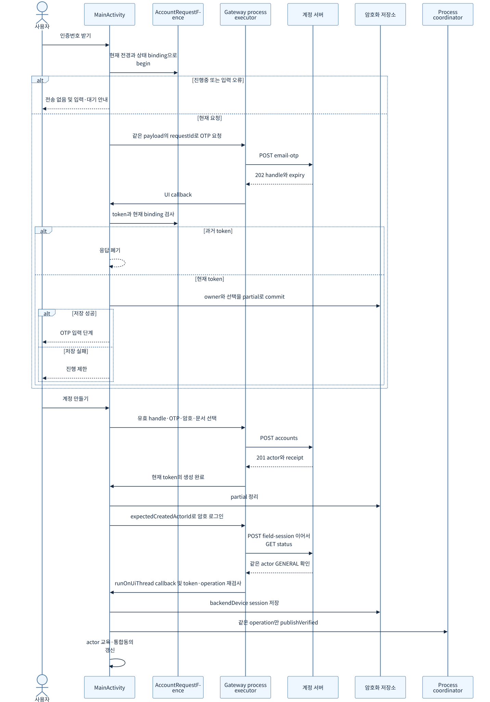


F-D01-002 이메일·생년월일·비밀번호 입력 검증
| 항목 | 명세 |
|---|---|
| 분야 | D01 계정·온보딩·동의·권한·앱 개인정보와 로컬 보안 |
| 목적 | 두 DOB 표현을 같은 의미로 처리하고 불완전한 계정 입력 전송을 막는다. |
| 사용 주체 | 앱 사용자 MainActivity |
| 활성 상태 | ACTIVE |
| 진입점 | apps/android/app/src/main/java/kr/co/hanium/dreamup/walksafe/network/GatewayAccountClient.kt:156 GatewayAccountInputPolicy / validEmail / normalizedDateOfBirth apps/android/app/src/main/java/kr/co/hanium/dreamup/walksafe/MainActivity.kt:8834 requestEmailAccountOtp / showAccountInputError apps/android/app/src/main/java/kr/co/hanium/dreamup/walksafe/EmailAccountFormPolicy.kt:1 EmailAccountFormPolicy |
| 실행 전제 | 계정 화면에서 OTP 요청·계정 만들기·로그인 클릭 |
| 입력 출처 형식 검증 최신성 | email exact text(no whitespace), DOB YYYYMMDD 또는 YYYY-MM-DD, pw codepoints, confirm exact equality, OTP 숫자6자리 |
시작 이벤트와 처리 순서
| 이벤트 ID | 발생원 | 이벤트 | 수신부 | 흐름 |
|---|---|---|---|---|
| E-D01-002-01 | 사용자 또는 명시된 호출자 | 이메일·생년월일·비밀번호 입력 검증 | GatewayAccountInputPolicy.validEmail / normalizedDateOfBirth | 계정 화면에서 OTP 요청·계정 만들기·로그인 클릭 → 이메일 local·IDN domain 길이·구문을 검증한다. → 정규화된 입력을 요청 client에 전달 |
- 이메일 local·IDN domain 길이·구문을 검증한다.
- 생년월일을 서울 기준 엄격 날짜로 parse하여 YYYY-MM-DD로 정규화한다.
- 가입은 신규 암호12..128 및 확인 일치, 로그인은10..128; NUL 거부한다.
- Main은 필드 오류·status 및 접근성 안내를 표시하고 유효 입력만 다음 요청으로 넘긴다.
| 분기 조건 | 실제 처리 결과 | 구현 근거 |
|---|---|---|
| 이메일 오류 | email 오류 focus; 전송 없음 | apps/android/app/src/main/java/kr/co/hanium/dreamup/walksafe/network/GatewayAccountClient.kt:156 GatewayAccountInputPolicy.validEmail / normalizedDateOfBirth |
| 잘못된 달력 날짜·연도0·미래 | DOB 오류; 8자리 자동 보정 없음 | apps/android/app/src/main/java/kr/co/hanium/dreamup/walksafe/network/GatewayAccountClient.kt:156 GatewayAccountInputPolicy.validEmail / normalizedDateOfBirth |
| 암호 불일치 또는 OTP 형식 오류 | 관련 입력 오류; 전송 없음 | apps/android/app/src/main/java/kr/co/hanium/dreamup/walksafe/network/GatewayAccountClient.kt:156 GatewayAccountInputPolicy.validEmail / normalizedDateOfBirth |
효과 종료와 복구
네트워크 전 로컬 검증; 버튼 활성은 일부 nonblank 기준이므로 클릭 시 검증이 최종 앱 판정이다.
| 상황 | 동작 |
|---|---|
| 정상 완료 | 정규화된 입력을 요청 client에 전달 |
| 실패 | 입력 오류 UI 및 음성/접근성 메시지 |
| 시간 초과 | 해당 없음: 순수 검증 |
| 중복 입력 | DOB 두 표기는 동일 retry payload digest |
| 취소 | 화면 닫기 가능; 비밀번호 재설정 API는 이 기능 아님 |
| 중단과 생명주기 | 전경 요청 token이 입력/상태 변경을 감시 |
| 재시도 | 정정 후 명시적 다시 클릭 |
| 복구 | OTP partial 복원은 email/DOB/password를 복원하지 않음 |
| 자원 정리 | 정상 로그인 후 credential 입력 지움 |
상태 실행 맥락과 연결
| 항목 | 명세 |
|---|---|
| 초기 상태 | S-D01-002-EDITING |
| 상태 목록 | S-D01-002-EDITING S-D01-002-INVALID S-D01-002-VALID |
| 전이 조건과 전이 동작 | 입력→검증 오류→INVALID 유효→VALID |
| 허용되지 않는 전이 | 앱 DOB 검증만으로 서버 나이 승인 확정 금지 |
| 동시성 순서와 작업 소유권 | 동기 pure validators + UI main thread |
| 공유 상태와 다른 기능 연결 | F-D01-003/005/006; 서버 만14세 판정 D08/D09 |
정책 근거와 검증 범위
| 항목 | 근거 |
|---|---|
| 정책 | P-D01-002 |
| 구현 | apps/android/app/src/main/java/kr/co/hanium/dreamup/walksafe/network/GatewayAccountClient.kt:156 · GatewayAccountInputPolicy / validEmail / normalizedDateOfBirth (범위 156–234)apps/android/app/src/main/java/kr/co/hanium/dreamup/walksafe/MainActivity.kt:8834 · requestEmailAccountOtp / showAccountInputError (범위 8834–8879)apps/android/app/src/main/java/kr/co/hanium/dreamup/walksafe/EmailAccountFormPolicy.kt:1 · EmailAccountFormPolicy (범위 1–54) |
| 기존 개선 ID | 개별 동일성 미확인; 분야 연관은 별도 추적표 |
| 기존 분야 | 해당 없음 |
| 기존 실행 증거 | daylog/2026-10-04.md:21-38: DOB 두 형식·관련 JVM·최종 APK 3ea64b89af08 기록. 당시 실제 신규가입/OTP 제출은 미실행; 현재 snapshot 실행 증거 아님. |
| 한계 및 구분 | 이번에는 validator 소스와 호출을 정적 검토했다. 비밀번호 찾기·재설정 UI/API 연결은 관련 앱 소스 검색에서 발견하지 못했다. 미발견을 서버 기능 부재로 확장하지 않는다. |
| 테스트 위치 | 심볼 | 증거 수준 | 기대와 한계 |
|---|
연결한 테스트 미확인: 이번 작성 범위에서 이 기능에 대응하는 시험 단언을 연결하지 않았다. 테스트 자체가 없다는 판정이 아니다.
이벤트 처리 그림

F-D01-003 이메일 OTP 요청·발송 대기·동일 요청 재시도
| 항목 | 명세 |
|---|---|
| 분야 | D01 계정·온보딩·동의·권한·앱 개인정보와 로컬 보안 |
| 목적 | 결과 불명 재요청이 중복 발급 요청으로 바뀌지 않게 한다. |
| 사용 주체 | 앱 사용자 MainActivity |
| 활성 상태 | ACTIVE |
| 진입점 | apps/android/app/src/main/java/kr/co/hanium/dreamup/walksafe/MainActivity.kt:8834 requestEmailAccountOtp apps/android/app/src/main/java/kr/co/hanium/dreamup/walksafe/network/EmailOtpRequestRetryPolicy.kt:1 EmailOtpRequestRetryPolicy apps/android/app/src/main/java/kr/co/hanium/dreamup/walksafe/network/GatewayAccountClient.kt:29 requestEmailOtp apps/android/app/src/main/java/kr/co/hanium/dreamup/walksafe/network/PendingEmailOtpRequest.kt:1 PendingEmailOtpRequest |
| 실행 전제 | 현재 email enrollment stage·전경·저장소 정상·OFFLINE 아님·필수동의·가입 입력 유효 |
| 입력 출처 형식 검증 최신성 | origin+owner SHA+email+정규화 DOB+signup epoch; requestId16..128; 서버202 handle/expiry/resend |
시작 이벤트와 처리 순서
| 이벤트 ID | 발생원 | 이벤트 | 수신부 | 흐름 |
|---|---|---|---|---|
| E-D01-003-01 | 사용자 또는 명시된 호출자 | 이메일 OTP 요청·발송 대기·동일 요청 재시도 | requestEmailAccountOtp | 현재 email enrollment stage·전경·저장소 정상·OFFLINE 아님·필수동의·가입 입력 유효 → 입력과 현재 owner/origin을 검증한 뒤 RetryPolicy.begin 및 AccountRequestFence.begin을 얻는다. → 유효 partial 저장 후 OTP 입력 단계 |
- 입력과 현재 owner/origin을 검증한 뒤 RetryPolicy.begin 및 AccountRequestFence.begin을 얻는다.
- 같은 payload 재시도는 동일 requestId로 POST /api/account-enrollments/email-otp; gateway executor에서 수행한다.
- 현재 token·state·payload인지 확인하고 응답 schema·handle·시간 범위를 검증한다.
- encrypted partial 저장 성공 후 ACCOUNT_CREATED 단계와 elapsed deadline을 만들고 OTP focus를 준다.
| 분기 조건 | 실제 처리 결과 | 구현 근거 |
|---|---|---|
| 진행중 또는 retry wait 남음 | 추가 송신 거부; 자동 재발송 없음 | apps/android/app/src/main/java/kr/co/hanium/dreamup/walksafe/MainActivity.kt:8834 requestEmailAccountOtp |
| status0·5xx·429·409 in_progress | wire ID 유지 및 대기 정책; 사용자 재시도 | apps/android/app/src/main/java/kr/co/hanium/dreamup/walksafe/MainActivity.kt:8834 requestEmailAccountOtp |
| 과거 응답·payload 변경 | UI·partial commit 없음 | apps/android/app/src/main/java/kr/co/hanium/dreamup/walksafe/MainActivity.kt:8834 requestEmailAccountOtp |
| partial 저장 실패 | 단계 진행 차단; 저장 오류 | apps/android/app/src/main/java/kr/co/hanium/dreamup/walksafe/MainActivity.kt:8834 requestEmailAccountOtp |
효과 종료와 복구
OTP 메일 발송은 서버의 외부 효과; 앱은202 응답과 partial만 확인한다. pending에는 실제 email/DOB 대신 digest가 저장된다.
| 상황 | 동작 |
|---|---|
| 정상 완료 | 유효 partial 저장 후 OTP 입력 단계 |
| 실패 | serverCode별 age·rate·conflict 메시지; terminal 오류는 retry ID 폐기 |
| 시간 초과 | HTTP connect8s/read12s; 서버 요청 완료 여부는 timeout만으로 확정하지 않음 |
| 중복 입력 | 동일 payload의 retry ID 재사용; 동시 active attempt 금지 |
| 취소 | 가입 닫기/명시 cancel은 retry state 제거; 이미 서버 적용된 발송 취소 보장 없음 |
| 중단과 생명주기 | background가 계정 token 무효화; lifecycleInterrupted는 activeAttempt만 해제 |
| 재시도 | 동일payload+허용 대기 후 사용자 재요청; Pending 복원 재사용 수명30분 |
| 복구 | fresh process 저장 pending owner+payload digest+age 검증 후 재사용 |
| 자원 정리 | 성공·terminal·payload변경 때 pending clear |
상태 실행 맥락과 연결
| 항목 | 명세 |
|---|---|
| 초기 상태 | S-D01-003-IDLE |
| 상태 목록 | S-D01-003-IDLE S-D01-003-IN_FLIGHT S-D01-003-WAITING S-D01-003-OTP_READY |
| 전이 조건과 전이 동작 | 요청→IN_FLIGHT 일시 실패→WAITING 202+durable partial→OTP_READY |
| 허용되지 않는 전이 | 과거 요청이 새 요청 active slot을 해제하지 못함 |
| 동시성 순서와 작업 소유권 | gatewaySessionExecutor→runOnUiThread; current token 및 payload 검사로 늦은 callback 배제 |
| 공유 상태와 다른 기능 연결 | F-D01-004 partial; D08/D09 메일 전달·빈도 제한 |
정책 근거와 검증 범위
| 항목 | 근거 |
|---|---|
| 정책 | P-D01-002 P-D01-003 P-D01-004 P-D01-005 P-D01-024 |
| 구현 | apps/android/app/src/main/java/kr/co/hanium/dreamup/walksafe/MainActivity.kt:8834 · requestEmailAccountOtp (범위 8834–8982)apps/android/app/src/main/java/kr/co/hanium/dreamup/walksafe/network/EmailOtpRequestRetryPolicy.kt:1 · EmailOtpRequestRetryPolicy (범위 1–146)apps/android/app/src/main/java/kr/co/hanium/dreamup/walksafe/network/GatewayAccountClient.kt:29 · requestEmailOtp (범위 29–86)apps/android/app/src/main/java/kr/co/hanium/dreamup/walksafe/network/PendingEmailOtpRequest.kt:1 · PendingEmailOtpRequest (범위 1–100) |
| 기존 개선 ID | 개별 동일성 미확인; 분야 연관은 별도 추적표 |
| 기존 분야 | 해당 없음 |
| 기존 실행 증거 | 해당 없음 |
| 한계 및 구분 | 현재 snapshot 정적 확인. 기기·네트워크 실동작은 이번 검증하지 않았다. |
| 테스트 위치 | 심볼 | 증거 수준 | 기대와 한계 |
|---|---|---|---|
| apps/android/app/src/test/java/kr/co/hanium/dreamup/walksafe/account/AccountRequestFenceRegressionTest.kt | cancelledResponseCannotReleaseNewRequestWithTheSameBinding | TEST_EXPECTATION | 과거 callback이 새 요청을 끝내지 않는 기대; 이번 실행하지 않음 |
| apps/android/app/src/test/java/kr/co/hanium/dreamup/walksafe/account/EmailOtpTimingTest.kt | clientRejectsExpiredFarFutureAndResendAfterExpiryResponses | TEST_EXPECTATION | 시간 범위 부정 응답을 거부하는 기대; 이번 실행하지 않음 |
이벤트 처리 그림

F-D01-004 OTP 가입 partial 암호화 보존과 재시작 복원
| 항목 | 명세 |
|---|---|
| 분야 | D01 계정·온보딩·동의·권한·앱 개인정보와 로컬 보안 |
| 목적 | 서버 발급 handle과 동의 선택만 제한적으로 재사용한다. |
| 사용 주체 | 앱 사용자 MainActivity |
| 활성 상태 | ACTIVE |
| 진입점 | apps/android/app/src/main/java/kr/co/hanium/dreamup/walksafe/account/EmailAccountEnrollment.kt:62 EmailEnrollmentPartialCodec / AndroidEmailEnrollmentStore apps/android/app/src/main/java/kr/co/hanium/dreamup/walksafe/MainActivity.kt:7659 restoreEmailEnrollmentPartial / emailOtpPartialStillValid |
| 실행 전제 | 앱 시작 또는 계정 화면 복원; install ID 확보 및 저장소 읽기 가능 |
| 입력 출처 형식 검증 최신성 | partial schema android-email-enrollment-partial.v4, handle, expiry/resend, install owner SHA256, 정확 문서 versions·selections; 2..4096 chars |
시작 이벤트와 처리 순서
| 이벤트 ID | 발생원 | 이벤트 | 수신부 | 흐름 |
|---|---|---|---|---|
| E-D01-004-01 | 사용자 또는 명시된 호출자 | OTP 가입 partial 암호화 보존과 재시작 복원 | EmailEnrollmentPartialCodec / AndroidEmailEnrollmentStore | 앱 시작 또는 계정 화면 복원; install ID 확보 및 저장소 읽기 가능 → encrypted store restore에서 absent/restored/clearedInvalid/blocked를 구분한다. → OTP 화면 복원; email/password 등 재입력 필요 |
- encrypted store restore에서 absent/restored/clearedInvalid/blocked를 구분한다.
- owner 일치·필수선택·정확 버전·미만 expiry를 검사하고 v3는 신뢰 없이 제거한다.
- 유효하면 email OTP enrollment 상태를 재구성하고 선택을 복원한다.
- 같은 프로세스는 elapsed deadline, 재시작은 절대시각으로 create 직전 다시 검증한다.
| 분기 조건 | 실제 처리 결과 | 구현 근거 |
|---|---|---|
| expired·owner mismatch·잘못된 schema | partial clear; 새 가입 단계 | apps/android/app/src/main/java/kr/co/hanium/dreamup/walksafe/account/EmailAccountEnrollment.kt:62 EmailEnrollmentPartialCodec / AndroidEmailEnrollmentStore |
| clear 또는 store 접근 실패 | Blocked; 가입 계속 불가 | apps/android/app/src/main/java/kr/co/hanium/dreamup/walksafe/account/EmailAccountEnrollment.kt:62 EmailEnrollmentPartialCodec / AndroidEmailEnrollmentStore |
| elapsed clock 역행 | remaining 0으로 만료 | apps/android/app/src/main/java/kr/co/hanium/dreamup/walksafe/account/EmailAccountEnrollment.kt:62 EmailEnrollmentPartialCodec / AndroidEmailEnrollmentStore |
효과 종료와 복구
OTP/password/email/DOB는 이 partial에 저장하지 않는다. 상태명 ACCOUNT_CREATED는 이 시점 실제 계정 생성 완료를 의미하지 않는다.
| 상황 | 동작 |
|---|---|
| 정상 완료 | OTP 화면 복원; email/password 등 재입력 필요 |
| 실패 | 불량 partial 폐기 또는 저장소 blocked |
| 시간 초과 | expires와 now 경계는 now < expires; elapsed remaining>0 |
| 중복 입력 | 동일 partial은 저장 계약에 따라 보존; 원격 발송 재실행 없음 |
| 취소 | 사용자 로그인 이동 또는 만료시 partial 제거 경로 |
| 중단과 생명주기 | 프로세스 중단 후 encrypted partial만 재개 근거 |
| 재시도 | 새 OTP는 사용자 발송 요청으로만 |
| 복구 | v4 검증 통과 시 복원; 서버 최종 OTP 유효성은 별도 |
| 자원 정리 | invalid/v3/생성 성공에서 제거 |
상태 실행 맥락과 연결
| 항목 | 명세 |
|---|---|
| 초기 상태 | S-D01-004-ABSENT |
| 상태 목록 | S-D01-004-ABSENT S-D01-004-RESTORED S-D01-004-CLEARED_INVALID S-D01-004-BLOCKED |
| 전이 조건과 전이 동작 | 유효 encrypted partial→RESTORED 검증 실패+clear 성공→CLEARED_INVALID store 실패→BLOCKED |
| 허용되지 않는 전이 | 비밀번호·OTP 문자열을 복원한 것으로 처리 금지 |
| 동시성 순서와 작업 소유권 | restore 동기, UI state update; owner binding은 install ID hash |
| 공유 상태와 다른 기능 연결 | F-D01-003/005; F-D01-025 민감 저장 |
정책 근거와 검증 범위
| 항목 | 근거 |
|---|---|
| 정책 | P-D01-001 P-D01-003 P-D01-018 |
| 구현 | apps/android/app/src/main/java/kr/co/hanium/dreamup/walksafe/account/EmailAccountEnrollment.kt:62 · EmailEnrollmentPartialCodec / AndroidEmailEnrollmentStore (범위 62–245)apps/android/app/src/main/java/kr/co/hanium/dreamup/walksafe/MainActivity.kt:7659 · restoreEmailEnrollmentPartial / emailOtpPartialStillValid (범위 7659–7717) |
| 기존 개선 ID | 개별 동일성 미확인; 분야 연관은 별도 추적표 |
| 기존 분야 | 해당 없음 |
| 기존 실행 증거 | 해당 없음 |
| 한계 및 구분 | 현재 snapshot 정적 확인. 기기·네트워크 실동작은 이번 검증하지 않았다. |
| 테스트 위치 | 심볼 | 증거 수준 | 기대와 한계 |
|---|---|---|---|
| apps/android/app/src/test/java/kr/co/hanium/dreamup/walksafe/account/EmailOtpTimingTest.kt | partialRequiresResendNoLaterThanExpiryAndCodecDropsViolations | TEST_EXPECTATION | resend가 expiry를 넘는 partial을 거부하는 기대; 이번 실행하지 않음 |
이벤트 처리 그림

F-D01-005 OTP 확인·계정 생성·생성 후 자동 로그인
| 항목 | 명세 |
|---|---|
| 분야 | D01 계정·온보딩·동의·권한·앱 개인정보와 로컬 보안 |
| 목적 | 메일 인증과 선택한 가입 문서를 서버 계정 생성 요청에 결속한다. |
| 사용 주체 | 앱 사용자 MainActivity |
| 활성 상태 | ACTIVE |
| 진입점 | apps/android/app/src/main/java/kr/co/hanium/dreamup/walksafe/MainActivity.kt:8983 createEmailAccount apps/android/app/src/main/java/kr/co/hanium/dreamup/walksafe/network/GatewayAccountClient.kt:88 createAccount apps/android/app/src/main/java/kr/co/hanium/dreamup/walksafe/account/SignupConsentPolicyNotice.kt:1 SignupConsentPolicyNotice |
| 실행 전제 | ACCOUNT_CREATED stage, current valid partial·owner·전경·네트워크·필수동의 |
| 입력 출처 형식 검증 최신성 | handle43자,OTP6숫자,신규pw12..128,confirm,정확6문서version·selection; 응답 actor UUID/accountGeneration>=1/receiptSHA |
시작 이벤트와 처리 순서
| 이벤트 ID | 발생원 | 이벤트 | 수신부 | 흐름 |
|---|---|---|---|---|
| E-D01-005-01 | 사용자 또는 명시된 호출자 | OTP 확인·계정 생성·생성 후 자동 로그인 | createEmailAccount | ACCOUNT_CREATED stage, current valid partial·owner·전경·네트워크·필수동의 → create 직전 owner와 elapsed deadline을 다시 검사하고 필요한 입력을 검증한다. → 검증된 생성 응답 후 일치 actor 자동 로그인 경로 |
- create 직전 owner와 elapsed deadline을 다시 검사하고 필요한 입력을 검증한다.
- 현재 선택을 partial에 저장한 뒤 POST /api/accounts를 실행한다.
- 현재 요청만 201 strict schema 응답을 받아 account-created 상태를 반영하고 partial을 제거한다.
- OTP와 확인 암호를 지우고 expectedCreatedActorId를 넣어 password login을 호출한다.
| 분기 조건 | 실제 처리 결과 | 구현 근거 |
|---|---|---|
| partial 만료·owner 불일치 | partial 제거·새 epoch 초기가입으로 | apps/android/app/src/main/java/kr/co/hanium/dreamup/walksafe/MainActivity.kt:8983 createEmailAccount |
| 동의 outdated409 | 앱 업데이트/새문서 안내; 임의 새 버전 동의 작성 안 함 | apps/android/app/src/main/java/kr/co/hanium/dreamup/walksafe/MainActivity.kt:8983 createEmailAccount |
| 네트워크 결과 불명 | 계정 존재 가능성을 안내; 동일입력 재시도 또는 로그인 | apps/android/app/src/main/java/kr/co/hanium/dreamup/walksafe/MainActivity.kt:8983 createEmailAccount |
| 서버 성공 뒤 local clear 실패 | 계정 생성됨 안내·로그인 필요; 성공을 취소했다고 주장 안 함 | apps/android/app/src/main/java/kr/co/hanium/dreamup/walksafe/MainActivity.kt:8983 createEmailAccount |
효과 종료와 복구
서버 account 생성; 후속 로그인 actor를 created actor에 고정; common password·OTP invalid·existing account 안내.
| 상황 | 동작 |
|---|---|
| 정상 완료 | 검증된 생성 응답 후 일치 actor 자동 로그인 경로 |
| 실패 | 잘못된 OTP·약한/일반 암호·conflict·age 실패별 메시지 |
| 시간 초과 | HTTP timeout은 생성 부재 증거가 아님 |
| 중복 입력 | 별도 create idempotency key는 앱 요청에 없음; 서버 계약 D08/D09 |
| 취소 | 계정 token cancel/background 이후 늦은 성공은 UI 미적용 |
| 중단과 생명주기 | AccountRequestFence가 중단 뒤 응답을 버림; 서버 효과는 남을 수 있음 |
| 재시도 | 사용자 재시도 또는 기존계정 로그인 안내; 자동 반복 create 없음 |
| 복구 | partial 없으면 신규OTP 또는 로그인 |
| 자원 정리 | 성공 시 partial/OTP/confirmation 입력 정리 |
상태 실행 맥락과 연결
| 항목 | 명세 |
|---|---|
| 초기 상태 | S-D01-005-OTP_READY |
| 상태 목록 | S-D01-005-OTP_READY S-D01-005-CREATING S-D01-005-CREATED S-D01-005-LOGIN_PENDING |
| 전이 조건과 전이 동작 | 유효OTP입력→CREATING 201→CREATED local 정리성공→LOGIN_PENDING |
| 허용되지 않는 전이 | 서버 성공 후 생성취소·rollback을 앱이 보장하지 않음 |
| 동시성 순서와 작업 소유권 | gateway executor→UI, state/owner/token 경계 |
| 공유 상태와 다른 기능 연결 | F-D01-006 로그인; D08/D09 계정 생성·OTP 소모 |
정책 근거와 검증 범위
| 항목 | 근거 |
|---|---|
| 정책 | P-D01-001 P-D01-002 P-D01-003 P-D01-005 P-D01-024 |
| 구현 | apps/android/app/src/main/java/kr/co/hanium/dreamup/walksafe/MainActivity.kt:8983 · createEmailAccount (범위 8983–9103)apps/android/app/src/main/java/kr/co/hanium/dreamup/walksafe/network/GatewayAccountClient.kt:88 · createAccount (범위 88–154)apps/android/app/src/main/java/kr/co/hanium/dreamup/walksafe/account/SignupConsentPolicyNotice.kt:1 · SignupConsentPolicyNotice (범위 1–19) |
| 기존 개선 ID | 개별 동일성 미확인; 분야 연관은 별도 추적표 |
| 기존 분야 | 해당 없음 |
| 기존 실행 증거 | 해당 없음 |
| 한계 및 구분 | 현재 snapshot 정적 확인. 기기·네트워크 실동작은 이번 검증하지 않았다. |
| 테스트 위치 | 심볼 | 증거 수준 | 기대와 한계 |
|---|
연결한 테스트 미확인: 이번 작성 범위에서 이 기능에 대응하는 시험 단언을 연결하지 않았다. 테스트 자체가 없다는 판정이 아니다.
이벤트 처리 그림

F-D01-006 이메일·비밀번호 로그인과 계정 상태 결속
| 항목 | 명세 |
|---|---|
| 분야 | D01 계정·온보딩·동의·권한·앱 개인정보와 로컬 보안 |
| 목적 | 인증된 계정·세션·교육 상태를 원자적으로 연결한다. |
| 사용 주체 | 앱 사용자 MainActivity |
| 활성 상태 | ACTIVE |
| 진입점 | apps/android/app/src/main/java/kr/co/hanium/dreamup/walksafe/MainActivity.kt:9104 loginEmailAccount apps/android/app/src/main/java/kr/co/hanium/dreamup/walksafe/network/GatewayFieldSession.kt:796 loginWithPassword apps/android/app/src/main/java/kr/co/hanium/dreamup/walksafe/network/AndroidGatewaySessionStore.kt:298 saveBackendDeviceIfAbsent |
| 실행 전제 | 전경·네트워크·스토리지 정상·기존 active session 없음; backend restore pending이면 복원 경로 우선 |
| 입력 출처 형식 검증 최신성 | email,pw10..128,install deviceId,rememberMe=true; optional expectedCreatedActorId |
시작 이벤트와 처리 순서
| 이벤트 ID | 발생원 | 이벤트 | 수신부 | 흐름 |
|---|---|---|---|---|
| E-D01-006-01 | 사용자 또는 명시된 호출자 | 이메일·비밀번호 로그인과 계정 상태 결속 | loginEmailAccount | 전경·네트워크·스토리지 정상·기존 active session 없음; backend restore pending이면 복원 경로 우선 → 계정 fence 및 process operation을 예약하고 password grant POST /field-session을 보낸다. → 검증된 GENERAL session 및 후속 onboarding/복원 UI |
- 계정 fence 및 process operation을 예약하고 password grant POST /field-session을 보낸다.
- GENERAL cookie 응답 뒤 GET status authenticated 및 actor binding을 검증한다.
- 생성계정 actor mismatch면 받은 세션을 logout하고 거부한다.
- 같은 actor 재인증 또는 교육 복원이면 진행을 보존하고, 새 actor이면 VERIFIED_14_PLUS 교육·로그인 증거를 새로 구성한다.
- backendDevice 세션을 저장한 뒤 process publishVerified; actor를 기억하고 통합동의를 서버 refresh한다. 입력을 지운다.
| 분기 조건 | 실제 처리 결과 | 구현 근거 |
|---|---|---|
| GET 인증·scope·actor 불일치 | 원격 세션 정리·로그인 거부 | apps/android/app/src/main/java/kr/co/hanium/dreamup/walksafe/MainActivity.kt:9104 loginEmailAccount |
| 생성 actor와 로그인 actor 다름 | 원격 logout 후 실패 | apps/android/app/src/main/java/kr/co/hanium/dreamup/walksafe/MainActivity.kt:9104 loginEmailAccount |
| 저장 실패·stale operation | publish 거부; blocked 또는 오래된 응답 폐기 | apps/android/app/src/main/java/kr/co/hanium/dreamup/walksafe/MainActivity.kt:9104 loginEmailAccount |
효과 종료와 복구
암호는 요청에 사용하며 session store에는 세션 material과 actor-bound snapshot을 저장; 계정 승인과 교육 완료는 분리.
| 상황 | 동작 |
|---|---|
| 정상 완료 | 검증된 GENERAL session 및 후속 onboarding/복원 UI |
| 실패 | invalid credentials·busy·rate·network 오류 표시 |
| 시간 초과 | 8s/12s transport; 후속 서버 GET도 별도 호출 |
| 중복 입력 | 한 process operation과 계정 fence만 진행 |
| 취소 | 배경/새작업으로 응답 폐기; 사용자 로그아웃 F-D01-008 |
| 중단과 생명주기 | Activity callback lease와 process generation 둘 다 확인 |
| 재시도 | 오류 정정 후 사용자 로그인; 무한 자동로그인 없음 |
| 복구 | 같은 actor의 유효 training profile은 보존 가능 |
| 자원 정리 | 성공 후 email/password/OTP/confirm 지움 |
상태 실행 맥락과 연결
| 항목 | 명세 |
|---|---|
| 초기 상태 | S-D01-006-SIGNED_OUT |
| 상태 목록 | S-D01-006-SIGNED_OUT S-D01-006-AUTHENTICATING S-D01-006-VERIFIED S-D01-006-STORAGE_BLOCKED |
| 전이 조건과 전이 동작 | POST+GET검증→저장 저장성공+current operation→VERIFIED 저장실패→STORAGE_BLOCKED |
| 허용되지 않는 전이 | 저장되지 않은 새 세션을 verified로 먼저 publish 금지 |
| 동시성 순서와 작업 소유권 | 네트워크 POST/GET은 process single executor에서 수행한다. runOnUiThread callback 안에서 account fence·operationId를 검사하고 saveBackendDeviceIfAbsent 및 publishVerified를 수행한다. Activity callback lease 및 session generation으로 늦은 결과를 배제한다. |
| 공유 상태와 다른 기능 연결 | F-D01-007/010/011/018/022; D08 인증서버 |
정책 근거와 검증 범위
| 항목 | 근거 |
|---|---|
| 정책 | P-D01-002 P-D01-005 P-D01-006 P-D01-024 |
| 구현 | apps/android/app/src/main/java/kr/co/hanium/dreamup/walksafe/MainActivity.kt:9104 · loginEmailAccount (범위 9104–9308)apps/android/app/src/main/java/kr/co/hanium/dreamup/walksafe/network/GatewayFieldSession.kt:796 · loginWithPassword (범위 796–890)apps/android/app/src/main/java/kr/co/hanium/dreamup/walksafe/network/AndroidGatewaySessionStore.kt:298 · saveBackendDeviceIfAbsent (범위 298–350) |
| 기존 개선 ID | 개별 동일성 미확인; 분야 연관은 별도 추적표 |
| 기존 분야 | 해당 없음 |
| 기존 실행 증거 | 해당 없음 |
| 한계 및 구분 | Main login catch에서 GatewaySessionHttpException.retryAfterMs를 postAccountFailure에 전달하지 않는 정적 연결 차이는 R-D01-001. 이번 실제 로그인은 실행하지 않았다. |
| 테스트 위치 | 심볼 | 증거 수준 | 기대와 한계 |
|---|
연결한 테스트 미확인: 이번 작성 범위에서 이 기능에 대응하는 시험 단언을 연결하지 않았다. 테스트 자체가 없다는 판정이 아니다.
이벤트 처리 그림

F-D01-007 저장 로그인 재검증과 재인증
| 항목 | 명세 |
|---|---|
| 분야 | D01 계정·온보딩·동의·권한·앱 개인정보와 로컬 보안 |
| 목적 | 저장 credential을 현재 서버 권위로 확인한 뒤에만 재사용한다. |
| 사용 주체 | 앱 사용자 MainActivity |
| 활성 상태 | ACTIVE |
| 진입점 | apps/android/app/src/main/java/kr/co/hanium/dreamup/walksafe/MainActivity.kt:8209 restoreGatewaySession / restoreBackendDeviceSession apps/android/app/src/main/java/kr/co/hanium/dreamup/walksafe/network/AndroidGatewaySessionStore.kt:351 restoreBackendDevice apps/android/app/src/main/java/kr/co/hanium/dreamup/walksafe/network/GatewayFieldSession.kt:892 revalidateBackendAccountDeviceSession |
| 실행 전제 | privacy startup 허용·configured origin·install ID·현재 operation 획득 |
| 입력 출처 형식 검증 최신성 | encrypted backend device bundle의 origin/install/actor/firstRun binding·expiry; 복원 session은 RESTORED_UNVERIFIED |
시작 이벤트와 처리 순서
| 이벤트 ID | 발생원 | 이벤트 | 수신부 | 흐름 |
|---|---|---|---|---|
| E-D01-007-01 | 사용자 또는 명시된 호출자 | 저장 로그인 재검증과 재인증 | restoreGatewaySession / restoreBackendDeviceSession | privacy startup 허용·configured origin·install ID·현재 operation 획득 → restoreGatewaySession은 backendDevice를 장기로그인 flag보다 먼저 찾는다. → 서버 재검증 후 로그인 이어가기 |
- restoreGatewaySession은 backendDevice를 장기로그인 flag보다 먼저 찾는다.
- 현재 process에 unverified pair를 publish하고 서버 GET로 account device session을 revalidate한다.
- 유효 GENERAL actor이면 verified publish하고 backendRestorePending을 끈 뒤 동의를 refresh한다.
- 네트워크 unavailable이면 process credential만 clear하고 저장 bundle을 보존하여 연결 후 다시 확인하도록 안내한다.
| 분기 조건 | 실제 처리 결과 | 구현 근거 |
|---|---|---|
| 401/403 등 확정 거부 | 현재 저장 version만 제거; 다시로그인 안내 | apps/android/app/src/main/java/kr/co/hanium/dreamup/walksafe/MainActivity.kt:8209 restoreGatewaySession / restoreBackendDeviceSession |
| network/408/429/5xx/부정2xx | unavailable; 저장 credential 보존, 일반기능 미허용 | apps/android/app/src/main/java/kr/co/hanium/dreamup/walksafe/MainActivity.kt:8209 restoreGatewaySession / restoreBackendDeviceSession |
| 교체된 operation | 새로 얻은 세션 invalidate; 새 상태 보호 | apps/android/app/src/main/java/kr/co/hanium/dreamup/walksafe/MainActivity.kt:8209 restoreGatewaySession / restoreBackendDeviceSession |
효과 종료와 복구
저장된 로그인을 확인하려면 인터넷 필요 안내; actor 교육 snapshot은 보존되더라도 보행 현재 검사 D02 필요.
| 상황 | 동작 |
|---|---|
| 정상 완료 | 서버 재검증 후 로그인 이어가기 |
| 실패 | 저장 제거 실패는 storageBlocked |
| 시간 초과 | transport timeout→unavailable |
| 중복 입력 | current version CAS·operation 일치 없이 삭제/교체 없음 |
| 취소 | 계정 세션 버튼이 복원 대기 중 logout을 선택할 수 있음 |
| 중단과 생명주기 | Activity가 바뀌면 current lease의 UI만 받음 |
| 재시도 | 인터넷 연결 뒤 명시적 재확인; background GET 자동반복으로 가정하지 않음 |
| 복구 | stored snapshot 복원 및 fresh server authority |
| 자원 정리 | 확정 폐기시 current backend bundle만 제거 |
상태 실행 맥락과 연결
| 항목 | 명세 |
|---|---|
| 초기 상태 | S-D01-007-STORED |
| 상태 목록 | S-D01-007-STORED S-D01-007-UNVERIFIED S-D01-007-VERIFIED S-D01-007-RESTORE_PENDING S-D01-007-REAUTH_REQUIRED |
| 전이 조건과 전이 동작 | bundle복원→UNVERIFIED GET성공→VERIFIED 일시실패→RESTORE_PENDING 확정거부→REAUTH_REQUIRED |
| 허용되지 않는 전이 | RESTORED_UNVERIFIED의 protected request headers 생성 금지 |
| 동시성 순서와 작업 소유권 | process executor; operation을 publishRestoredUnverified 후 새 generation token으로 이어감 |
| 공유 상태와 다른 기능 연결 | F-D01-009 장기 token 복원은 별도; D02 기기freshcheck |
정책 근거와 검증 범위
| 항목 | 근거 |
|---|---|
| 정책 | P-D01-006 P-D01-008 P-D01-024 |
| 구현 | apps/android/app/src/main/java/kr/co/hanium/dreamup/walksafe/MainActivity.kt:8209 · restoreGatewaySession / restoreBackendDeviceSession (범위 8209–8435)apps/android/app/src/main/java/kr/co/hanium/dreamup/walksafe/network/AndroidGatewaySessionStore.kt:351 · restoreBackendDevice (범위 351–413)apps/android/app/src/main/java/kr/co/hanium/dreamup/walksafe/network/GatewayFieldSession.kt:892 · revalidateBackendAccountDeviceSession (범위 892–954) |
| 기존 개선 ID | 개별 동일성 미확인; 분야 연관은 별도 추적표 |
| 기존 분야 | 해당 없음 |
| 기존 실행 증거 | 해당 없음 |
| 한계 및 구분 | 현재 snapshot 정적 확인. 기기·네트워크 실동작은 이번 검증하지 않았다. |
| 테스트 위치 | 심볼 | 증거 수준 | 기대와 한계 |
|---|
연결한 테스트 미확인: 이번 작성 범위에서 이 기능에 대응하는 시험 단언을 연결하지 않았다. 테스트 자체가 없다는 판정이 아니다.
이벤트 처리 그림

F-D01-008 로그아웃·인증 만료와 계정 입력 초기화
| 항목 | 명세 |
|---|---|
| 분야 | D01 계정·온보딩·동의·권한·앱 개인정보와 로컬 보안 |
| 목적 | 현재 계정 실행권한을 닫고 원격 세션 폐기를 추적한다. |
| 사용 주체 | 앱 사용자 MainActivity |
| 활성 상태 | ACTIVE |
| 진입점 | apps/android/app/src/main/java/kr/co/hanium/dreamup/walksafe/MainActivity.kt:9435 onAccountLogoutClicked / onAccountSessionButtonClicked apps/android/app/src/main/java/kr/co/hanium/dreamup/walksafe/MainActivity.kt:8415 stageRestoredGatewayRevocation / drainPendingGatewayRevocation apps/android/app/src/main/java/kr/co/hanium/dreamup/walksafe/session/PermissionSessionPolicy.kt:1 explicitLogout / authenticationExpired apps/android/app/src/main/java/kr/co/hanium/dreamup/walksafe/network/GatewayFieldSession.kt:1122 logout apps/android/app/src/main/java/kr/co/hanium/dreamup/walksafe/MainActivity.kt:12506 clearGatewaySession |
| 실행 전제 | 사용자 session 버튼; durable 계정삭제 확인이 없어야 일반 logout 가능 |
| 입력 출처 형식 검증 최신성 | current actor/session/generation 및 저장 version; logout action은 사용자 이벤트 |
시작 이벤트와 처리 순서
| 이벤트 ID | 발생원 | 이벤트 | 수신부 | 흐름 |
|---|---|---|---|---|
| E-D01-008-01 | 사용자 또는 명시된 호출자 | 로그아웃·인증 만료와 계정 입력 초기화 | onAccountLogoutClicked / onAccountSessionButtonClicked | 사용자 session 버튼; durable 계정삭제 확인이 없어야 일반 logout 가능 → 삭제 recovery-only·storageBlocked·durable deletion confirmation 경계를 먼저 검사한다. → SIGNED_OUT, 새 가입/로그인 진입 |
- 삭제 recovery-only·storageBlocked·durable deletion confirmation 경계를 먼저 검사한다.
- debug 위치 저장 범위를 purge/rotate하고 training·환경·장착 증거 및 출력 저장 binding을 무효화한다.
- clearGatewaySession은 backendDevice이면 current 저장 bundle을 제거하고, 장기 token이면 Active→PendingRevocation을 durable commit한다. 이후 process credential invalidate·권한/보행 downgrade·network call cancel을 적용한다.
- 활성 보행은 safety stop; credential 입력을 지우고 로그아웃 안내를 표시한다.
| 분기 조건 | 실제 처리 결과 | 구현 근거 |
|---|---|---|
| 삭제 durable confirmation 존재 | 일반 logout 거부; 삭제 복구 유지 | apps/android/app/src/main/java/kr/co/hanium/dreamup/walksafe/MainActivity.kt:9435 onAccountLogoutClicked / onAccountSessionButtonClicked |
| 원격 revoke 실패 | durable pending revocation 경로가 있으면 다음 복구에서 drain; 세션은 로컬 비활성 | apps/android/app/src/main/java/kr/co/hanium/dreamup/walksafe/MainActivity.kt:9435 onAccountLogoutClicked / onAccountSessionButtonClicked |
| stale/expired advanced session | 재인증 안내 경로는 동일계정 교육진행 보존 가능 | apps/android/app/src/main/java/kr/co/hanium/dreamup/walksafe/MainActivity.kt:9435 onAccountLogoutClicked / onAccountSessionButtonClicked |
효과 종료와 복구
실행 세션·음성·보행 중단. OS grants와 일부 설정은 유지; runtime report grants는 signedout 정책에 따라 비활성이다.
| 상황 | 동작 |
|---|---|
| 정상 완료 | SIGNED_OUT, 새 가입/로그인 진입 |
| 실패 | 저장소 blocked면 일반 동작 차단 및 안내 |
| 시간 초과 | 원격 DELETE8s/12s; 실패를 전체 서버 폐기 성공으로 보고하지 않음 |
| 중복 입력 | current generation만 clear; 이전 logout callback은 새세션 미변경 |
| 취소 | logout 시작 이후 로컬 세션 재활성 취소 없음 |
| 중단과 생명주기 | process revocation은 Activity 분리 후에도 executor 소유 |
| 재시도 | 장기 token의 durable PendingRevocation만 다음 시작 복원에서 drain한다. backendDevice 분기는 원격 DELETE 실패 뒤 같은 revoke를 저장해 재시도하는 journal이 없다. |
| 복구 | 재로그인은 actor/version 검증한 교육 profile을 재사용한다. backendDevice 로컬 logout 성공은 서버 DELETE 성공과 분리하여 해석한다. |
| 자원 정리 | current credential invalidate; 일반 logout은 install deviceId 유지 |
상태 실행 맥락과 연결
| 항목 | 명세 |
|---|---|
| 초기 상태 | S-D01-008-ACTIVE |
| 상태 목록 | S-D01-008-ACTIVE S-D01-008-REVOKING S-D01-008-SIGNED_OUT S-D01-008-REAUTH_REQUIRED |
| 전이 조건과 전이 동작 | 사용자로그아웃→REVOKING→SIGNED_OUT 인증만료→REAUTH_REQUIRED |
| 허용되지 않는 전이 | 일반 logout으로 삭제 복구 권위를 제거하지 않음 |
| 동시성 순서와 작업 소유권 | process executor·durable revoke record·Activity callback lease |
| 공유 상태와 다른 기능 연결 | F-D01-006/007/009/010; D02 safety stop |
정책 근거와 검증 범위
| 항목 | 근거 |
|---|---|
| 정책 | P-D01-006 P-D01-011 P-D01-020 |
| 구현 | apps/android/app/src/main/java/kr/co/hanium/dreamup/walksafe/MainActivity.kt:9435 · onAccountLogoutClicked / onAccountSessionButtonClicked (범위 9435–9575)apps/android/app/src/main/java/kr/co/hanium/dreamup/walksafe/MainActivity.kt:8415 · stageRestoredGatewayRevocation / drainPendingGatewayRevocation (범위 8415–8495)apps/android/app/src/main/java/kr/co/hanium/dreamup/walksafe/session/PermissionSessionPolicy.kt:1 · explicitLogout / authenticationExpired (범위 1–125)apps/android/app/src/main/java/kr/co/hanium/dreamup/walksafe/network/GatewayFieldSession.kt:1122 · logout (범위 1122–1160)apps/android/app/src/main/java/kr/co/hanium/dreamup/walksafe/MainActivity.kt:12506 · clearGatewaySession (범위 12506–12684) |
| 기존 개선 ID | 개별 동일성 미확인; 분야 연관은 별도 추적표 |
| 기존 분야 | 해당 없음 |
| 기존 실행 증거 | 해당 없음 |
| 한계 및 구분 | clearGatewaySession12506..12684 추가 정독 완료. backendDevice는 먼저 local bundle을 제거하고 원격 DELETE를 best effort로 시도한다. 장기 token은 pending revocation을 먼저 저장하고 원격성공 후 durable 제거한다. 두 경로의 실패복구를 구분한다. |
| 테스트 위치 | 심볼 | 증거 수준 | 기대와 한계 |
|---|
연결한 테스트 미확인: 이번 작성 범위에서 이 기능에 대응하는 시험 단언을 연결하지 않았다. 테스트 자체가 없다는 판정이 아니다.
이벤트 처리 그림

F-D01-009 조건부 토큰 로그인·장기 refresh 회전
| 항목 | 명세 |
|---|---|
| 분야 | D01 계정·온보딩·동의·권한·앱 개인정보와 로컬 보안 |
| 목적 | 기존 token·장기로그인 구현의 활성 조건과 재사용 금지 경계를 보존한다. |
| 사용 주체 | 앱 사용자 MainActivity |
| 활성 상태 | CONDITIONAL |
| 진입점 | apps/android/app/src/main/java/kr/co/hanium/dreamup/walksafe/network/GatewayFieldSession.kt:676 login / renew apps/android/app/src/main/java/kr/co/hanium/dreamup/walksafe/network/GatewayRenewalFailureNotice.kt:1 of apps/android/app/src/main/java/kr/co/hanium/dreamup/walksafe/network/GatewaySessionErrorContract.kt:1 GatewaySessionErrorContract apps/android/app/build.gradle.kts:168 WALKSAFE_LONG_LIVED_LOGIN_ENABLED apps/android/app/src/main/java/kr/co/hanium/dreamup/walksafe/network/GatewayPersistedLoginState.kt:1 GatewayPersistedLoginStatePolicy apps/android/app/src/main/java/kr/co/hanium/dreamup/walksafe/network/AndroidGatewaySessionStore.kt:32 restoreActive / reserveRenewal / commitRenewal |
| 실행 전제 | token login 또는 stored long-lived 복원 분기; flag/환경·provider 계약 유효 |
| 입력 출처 형식 검증 최신성 | actor/token·선택 deviceId·GENERAL 또는 삭제 recovery purpose; refresh proof fingerprint/family/rotation |
시작 이벤트와 처리 순서
| 이벤트 ID | 발생원 | 이벤트 | 수신부 | 흐름 |
|---|---|---|---|---|
| E-D01-009-01 | 사용자 또는 명시된 호출자 | 조건부 토큰 로그인·장기 refresh 회전 | login / renew | token login 또는 stored long-lived 복원 분기; flag/환경·provider 계약 유효 → token 로그인은200 GENERAL 또는 legacy204 응답과 GET 상태를 확인한다. 삭제 recovery는 short scope만 허용한다. → 새 장기 세션 교체 또는 short verified session |
- token 로그인은200 GENERAL 또는 legacy204 응답과 GET 상태를 확인한다. 삭제 recovery는 short scope만 허용한다.
- long-lived 복원은 flag와 binding을 확인하고 갱신 예약 후 refresh를 한 번 보낸다.
- 추가. store restore에서 now >= idle 또는 absolute expiry이면 Active를 PendingRevocation으로 옮기고 복원하지 않는다. actor/device/origin 불일치는 저장소 failClosed. rollback은 exact reservation을 durable 반영한 후에만 proof를 release한다.
- 새 응답은 same family·rotation+1·same absolute expiry·다른 refresh를 검증한 뒤 old session invalidate한다.
- 확인된 미적용 busy만 retry proof를 복원하고, 결과불명은 재로그인 안내로 종료한다.
| 분기 조건 | 실제 처리 결과 | 구현 근거 |
|---|---|---|
| debug property 기본 false | long-lived token 복원 대신 revoke 경로; backendDevice 복원과 별개 | apps/android/app/src/main/java/kr/co/hanium/dreamup/walksafe/network/GatewayFieldSession.kt:676 login / renew |
| rotation Long.MAX_VALUE·잘못된새proof | 세션 무효화·재인증 | apps/android/app/src/main/java/kr/co/hanium/dreamup/walksafe/network/GatewayFieldSession.kt:676 login / renew |
| IO/결과불명 | 이전 refresh 재사용 금지 | apps/android/app/src/main/java/kr/co/hanium/dreamup/walksafe/network/GatewayFieldSession.kt:676 login / renew |
| 429/503 미적용 확인+Retry-After1..300초 | rollback 가능한 안전 재시도 | apps/android/app/src/main/java/kr/co/hanium/dreamup/walksafe/network/GatewayFieldSession.kt:676 login / renew |
효과 종료와 복구
reuse 응답은 모든 기기 로그아웃 안내 문구를 선택; 실제 서버 일괄 폐기는 D08/D09 확인 범위.
| 상황 | 동작 |
|---|---|
| 정상 완료 | 새 장기 세션 교체 또는 short verified session |
| 실패 | unknown/invalid refresh는 재로그인; UI 오류계약 unknown code 기본REAUTHENTICATE |
| 시간 초과 | transport timeout=OUTCOME_UNKNOWN refresh 재전송금지 |
| 중복 입력 | proof reservation 중복 거부 |
| 취소 | 명시 logout은 pending revoke로 연결 |
| 중단과 생명주기 | crash renewing 상태의 보존/복원 정책은 저장 reducer가 담당 |
| 재시도 | 확정 미적용에서만 boundedRetry; unknown은 새 로그인 |
| 복구 | persisted renewing→pending revocation 코드 경계, 상세 reducer 검토 한계 명시 |
| 자원 정리 | old token invalidate 및 pending revoke 완료 후 저장 제거 |
상태 실행 맥락과 연결
| 항목 | 명세 |
|---|---|
| 초기 상태 | S-D01-009-SHORT_VERIFIED |
| 상태 목록 | S-D01-009-SHORT_VERIFIED S-D01-009-LONG_ACTIVE S-D01-009-RENEWING S-D01-009-RETRY_SAFE S-D01-009-OUTCOME_UNKNOWN S-D01-009-REAUTH_REQUIRED |
| 전이 조건과 전이 동작 | single proof reserve→RENEWING 정확 새proof→LONG_ACTIVE 불명→REAUTH_REQUIRED |
| 허용되지 않는 전이 | unknown refresh outcome→같은proof blind replay 금지 |
| 동시성 순서와 작업 소유권 | process executor+store CAS; 오래된 operation publish 거부 |
| 공유 상태와 다른 기능 연결 | F-D01-007 backendDevice와 구분; D02 in-run renewal, D08 session server |
정책 근거와 검증 범위
| 테스트 위치 | 심볼 | 증거 수준 | 기대와 한계 |
|---|
연결한 테스트 미확인: 이번 작성 범위에서 이 기능에 대응하는 시험 단언을 연결하지 않았다. 테스트 자체가 없다는 판정이 아니다.
이벤트 처리 그림

F-D01-010 프로세스 세션 공유·generation 보호와 stale 인증 응답
| 항목 | 명세 |
|---|---|
| 분야 | D01 계정·온보딩·동의·권한·앱 개인정보와 로컬 보안 |
| 목적 | Activity 교체 및 여러 클라이언트의 늦은 인증 응답이 새 계정을 지우지 못하게 한다. |
| 사용 주체 | 앱 사용자 MainActivity |
| 활성 상태 | ACTIVE |
| 진입점 | apps/android/app/src/main/java/kr/co/hanium/dreamup/walksafe/network/GatewaySessionProcessCoordinator.kt:1 GatewaySessionProcessCoordinator apps/android/app/src/main/java/kr/co/hanium/dreamup/walksafe/network/GatewayAuthenticationStaleResponse.kt:1 captureGatewayAuthenticationRequest / consumeGatewayAuthenticationStaleResponse apps/android/app/src/main/java/kr/co/hanium/dreamup/walksafe/network/GatewayActivityCallbackPolicy.kt:1 runGatewayActivityCallbackIfCurrent |
| 실행 전제 | 앱 process singleton; attach/detach 및 session operation 호출 |
| 입력 출처 형식 검증 최신성 | owner identity,expected generation,current session identity,GENERAL/RECOVERY scope,actor firstRun epoch/revision |
시작 이벤트와 처리 순서
| 이벤트 ID | 발생원 | 이벤트 | 수신부 | 흐름 |
|---|---|---|---|---|
| E-D01-010-01 | 사용자 또는 명시된 호출자 | 프로세스 세션 공유·generation 보호와 stale 인증 응답 | GatewaySessionProcessCoordinator | 앱 process singleton; attach/detach 및 session operation 호출 → attach는 현재 snapshot을 전달; detach는 callback만 제거하고 process executor/session을 끝내지 않는다. → 최신 snapshot만 owner에 전달 |
- attach는 현재 snapshot을 전달; detach는 callback만 제거하고 process executor/session을 끝내지 않는다.
- beginOperation은 진행중 작업이 없을 때 generation을 증가시키고 operationId를 발급한다.
- publish/clear/storageBlocked는 일치 token 또는 generation만 처리하고 교체 전 session invalidate한다.
- firstRun update는 같은 actor·더 최신 epoch/revision에서 session generation을 바꾸지 않는다.
- stale 인증 응답은 요청 생성 시 캡처한 session/generation,401,엄격JSON의 detail.code=account_authentication_stale에 한해 clear한다.
| 분기 조건 | 실제 처리 결과 | 구현 근거 |
|---|---|---|
| 이미 operation in-flight | 새 작업 null | apps/android/app/src/main/java/kr/co/hanium/dreamup/walksafe/network/GatewaySessionProcessCoordinator.kt:1 GatewaySessionProcessCoordinator |
| generation/token 불일치 | 아무 상태 변경 없이 거부 | apps/android/app/src/main/java/kr/co/hanium/dreamup/walksafe/network/GatewaySessionProcessCoordinator.kt:1 GatewaySessionProcessCoordinator |
| 동일snapshot | 중복 notify 생략; 기존 상태 유지 | apps/android/app/src/main/java/kr/co/hanium/dreamup/walksafe/network/GatewaySessionProcessCoordinator.kt:1 GatewaySessionProcessCoordinator |
| 다른 session·다른status/code·부정JSON | stale consumer 무시 | apps/android/app/src/main/java/kr/co/hanium/dreamup/walksafe/network/GatewaySessionProcessCoordinator.kt:1 GatewaySessionProcessCoordinator |
효과 종료와 복구
subscriber는 상태변경 스레드에서 동기 호출; Android owner가 UI thread dispatch 책임.
| 상황 | 동작 |
|---|---|
| 정상 완료 | 최신 snapshot만 owner에 전달 |
| 실패 | storageBlocked clearState가 credential과 진행작업 제거 |
| 시간 초과 | process coordinator 자체 timeout 없음; 각 operation의 transport가 담당 |
| 중복 입력 | 같은 generation/같은 firstRun snapshot 알림 중복억제 |
| 취소 | detach는 구독만 취소 |
| 중단과 생명주기 | Activity 사라져도 process network executor 유지 |
| 재시도 | 새 operation은 이전 종료/clear 후 가능 |
| 복구 | 동일 process 최신 상태를 attach로 받음 |
| 자원 정리 | owner deactivate 및 old session invalidate |
상태 실행 맥락과 연결
| 항목 | 명세 |
|---|---|
| 초기 상태 | S-D01-010-EMPTY |
| 상태 목록 | S-D01-010-EMPTY S-D01-010-IN_FLIGHT S-D01-010-GENERAL S-D01-010-RECOVERY_ONLY S-D01-010-STORAGE_BLOCKED |
| 전이 조건과 전이 동작 | begin→IN_FLIGHT 일치publish→GENERAL 또는 RECOVERY_ONLY 일치clear→EMPTY |
| 허용되지 않는 전이 | RECOVERY_ONLY를 GENERAL authority guard에서 허용하지 않음 |
| 동시성 순서와 작업 소유권 | single daemon executor+lock; observer lastDeliveredGeneration으로 역순 알림 거부 |
| 공유 상태와 다른 기능 연결 | 동의 authority commit은 withCurrentGeneralSession으로 session 교체와 직렬화; F-D01-023/030 |
정책 근거와 검증 범위
| 항목 | 근거 |
|---|---|
| 정책 | P-D01-005 P-D01-006 P-D01-015 P-D01-022 |
| 구현 | apps/android/app/src/main/java/kr/co/hanium/dreamup/walksafe/network/GatewaySessionProcessCoordinator.kt:1 · GatewaySessionProcessCoordinator (범위 1–469)apps/android/app/src/main/java/kr/co/hanium/dreamup/walksafe/network/GatewayAuthenticationStaleResponse.kt:1 · captureGatewayAuthenticationRequest / consumeGatewayAuthenticationStaleResponse (범위 1–36)apps/android/app/src/main/java/kr/co/hanium/dreamup/walksafe/network/GatewayActivityCallbackPolicy.kt:1 · runGatewayActivityCallbackIfCurrent (범위 1–11) |
| 기존 개선 ID | 개별 동일성 미확인; 분야 연관은 별도 추적표 |
| 기존 분야 | 해당 없음 |
| 기존 실행 증거 | 해당 없음 |
| 한계 및 구분 | StrictGatewayJsonObject parser 내부37..218는 범위/메서드만 확인하고 전행 정독하지 않았다. stale gate1..36과 process coordinator는 확인했다. |
| 테스트 위치 | 심볼 | 증거 수준 | 기대와 한계 |
|---|---|---|---|
| apps/android/app/src/test/java/kr/co/hanium/dreamup/walksafe/account/AccountRequestFenceRegressionTest.kt | foregroundReturnDoesNotReviveTheOldRequest | TEST_EXPECTATION | 전경 복귀가 과거 account token을 되살리지 않는 기대; 이번 실행하지 않음 |
이벤트 처리 그림

F-D01-011 이메일 첫 실행 단계·증거 접수·과거 영수증 복원
| 항목 | 명세 |
|---|---|
| 분야 | D01 계정·온보딩·동의·권한·앱 개인정보와 로컬 보안 |
| 목적 | 가입부터 보행 진입 전 필수 준비 순서와 증거를 관리한다. |
| 사용 주체 | 앱 사용자 MainActivity |
| 활성 상태 | ACTIVE |
| 진입점 | apps/android/app/src/main/java/kr/co/hanium/dreamup/walksafe/session/FirstRunOnboardingPolicy.kt:312 FirstRunOnboardingPolicy apps/android/app/src/main/java/kr/co/hanium/dreamup/walksafe/session/FirstRunOnboardingPolicy.kt:449 recordEmailOtpEnrollment / recordEmailAccountCreated / recordVerifiedEmailLogin apps/android/app/src/main/java/kr/co/hanium/dreamup/walksafe/session/FirstRunOnboardingPolicy.kt:697 restoreVerifiedEmailReceiptPrefix apps/android/app/src/main/java/kr/co/hanium/dreamup/walksafe/MainActivity.kt:17139 persistNativeCompletedOnboarding / restoreCompletedNativeOnboarding |
| 실행 전제 | EMAIL_ACCOUNT_V4·현재 epoch/revision; 로그인 actor 검증; D02 current device check |
| 입력 출처 형식 검증 최신성 | stage token,requestId req_64hex,attempt att_64hex,receiptSHA,actor; email policy FP-010-EMAIL-2.0.0 |
시작 이벤트와 처리 순서
| 이벤트 ID | 발생원 | 이벤트 | 수신부 | 흐름 |
|---|---|---|---|---|
| E-D01-011-01 | 사용자 또는 명시된 호출자 | 이메일 첫 실행 단계·증거 접수·과거 영수증 복원 | FirstRunOnboardingPolicy | EMAIL_ACCOUNT_V4·현재 epoch/revision; 로그인 actor 검증; D02 current device check → 신규 흐름은 EMAIL_OTP_ENROLLMENT→ACCOUNT_CREATED→VERIFIED_LOGIN→PURPOSE_AND_SAFETY→JIT_PERMISSION_OBSERVATION→DEVICE_CHECK→FP004_TRAINING→COMPLETE이다. → 완료 또는 다음 검사 단계 |
- 신규 흐름은 EMAIL_OTP_ENROLLMENT→ACCOUNT_CREATED→VERIFIED_LOGIN→PURPOSE_AND_SAFETY→JIT_PERMISSION_OBSERVATION→DEVICE_CHECK→FP004_TRAINING→COMPLETE이다.
- 기존 계정 password login은 OTP/계정생성 증거를 꾸미지 않고 VERIFIED_LOGIN부터 진행한다.
- 단계별 요청 token을 기록하고 정확한 token·증거 verifier 결과만 해당 단계에 반영한다.
- restoreVerifiedEmailReceiptPrefix는 과거 login/safety/training 증거를 검증해 보존하지만 JIT에서 새 권한·기기 검사를 요구한다.
- Main의 native-complete profile 복원은 actor/install/origin/policy/probe binding을 별도 검증하며 보행 현재 readiness는 D02와 연결한다.
| 분기 조건 | 실제 처리 결과 | 구현 근거 |
|---|---|---|
| stage·epoch·revision mismatch | 전이 거부; 상태보존 | apps/android/app/src/main/java/kr/co/hanium/dreamup/walksafe/session/FirstRunOnboardingPolicy.kt:312 FirstRunOnboardingPolicy |
| 과거 device/JIT receipt 존재 | 검증은 하지만 현재 검사 대체 안 함 | apps/android/app/src/main/java/kr/co/hanium/dreamup/walksafe/session/FirstRunOnboardingPolicy.kt:312 FirstRunOnboardingPolicy |
| 보존된 training 후 fresh device 통과 | FP004 재수행 없이 COMPLETE 가능 | apps/android/app/src/main/java/kr/co/hanium/dreamup/walksafe/session/FirstRunOnboardingPolicy.kt:312 FirstRunOnboardingPolicy |
효과 종료와 복구
단계 UI·진행 안내·교육 진입; COMPLETE 자체는 현장 센서·환경 안전 보증이 아니다.
| 상황 | 동작 |
|---|---|
| 정상 완료 | 완료 또는 다음 검사 단계 |
| 실패 | 증거 불일치 시 현재 단계 유지/명시 rejection |
| 시간 초과 | token timeout 일반값 없음; 단계별 원격·기기 timeout 별도 |
| 중복 입력 | pending 중복 begin 거부, 같은 영수증이 중복 전이를 만들지 않음 |
| 취소 | cancel은 epoch/revision을 바꾸어 pending 토큰 폐기 |
| 중단과 생명주기 | 세대가 바뀌면 과거 callback 수락하지 않음 |
| 재시도 | 현재 단계에서 새 요청 token으로 재시도 |
| 복구 | fresh JIT/device 경계와 actor-bound native복원을 구분 |
| 자원 정리 | 새계정·logout 때 initialEmail 새 epoch |
상태 실행 맥락과 연결
| 항목 | 명세 |
|---|---|
| 초기 상태 | S-D01-011-EMAIL_OTP_ENROLLMENT |
| 상태 목록 | S-D01-011-EMAIL_OTP_ENROLLMENT S-D01-011-ACCOUNT_CREATED S-D01-011-VERIFIED_LOGIN S-D01-011-PURPOSE_AND_SAFETY S-D01-011-JIT_PERMISSION_OBSERVATION S-D01-011-DEVICE_CHECK S-D01-011-FP004_TRAINING S-D01-011-COMPLETE |
| 전이 조건과 전이 동작 | 단계 증거검증→다음 단계 cancel→새epoch pending제거 과거training 복원→JIT fresh check |
| 허용되지 않는 전이 | 단계 건너뛰기·다른actor영수증·과거권한검사 대체 금지 |
| 동시성 순서와 작업 소유권 | pure reducer; Main executor/callback이 current generation으로 결과 전달 |
| 공유 상태와 다른 기능 연결 | F-D01-003/005/006/012~018; D02 DeviceCheck 및 evaluateWalkRuntimeSafety |
정책 근거와 검증 범위
| 항목 | 근거 |
|---|---|
| 정책 | P-D01-008 P-D01-010 P-D01-011 |
| 구현 | apps/android/app/src/main/java/kr/co/hanium/dreamup/walksafe/session/FirstRunOnboardingPolicy.kt:312 · FirstRunOnboardingPolicy (범위 312–367)apps/android/app/src/main/java/kr/co/hanium/dreamup/walksafe/session/FirstRunOnboardingPolicy.kt:449 · recordEmailOtpEnrollment / recordEmailAccountCreated / recordVerifiedEmailLogin (범위 449–615)apps/android/app/src/main/java/kr/co/hanium/dreamup/walksafe/session/FirstRunOnboardingPolicy.kt:697 · restoreVerifiedEmailReceiptPrefix (범위 697–795)apps/android/app/src/main/java/kr/co/hanium/dreamup/walksafe/MainActivity.kt:17139 · persistNativeCompletedOnboarding / restoreCompletedNativeOnboarding (범위 17139–17207) |
| 기존 개선 ID | 개별 동일성 미확인; 분야 연관은 별도 추적표 |
| 기존 분야 | 해당 없음 |
| 기존 실행 증거 | 해당 없음 |
| 한계 및 구분 | LEGACY_PHONE_V3의 age/guardian/통합동의 단계를 email flow와 합치지 않는다. productionEvidenceAvailable=false·기본 verifier false는 legacy/general evidence gateway 성격이며 활성 Main email 전이를 전부 DISABLED로 해석하면 틀린다. |
| 테스트 위치 | 심볼 | 증거 수준 | 기대와 한계 |
|---|---|---|---|
| apps/android/app/src/test/java/kr/co/hanium/dreamup/walksafe/session/FirstRunOnboardingRestoreFreshChecksRegressionTest.kt | restoredTrainingWaitsForFreshPermissionAndDeviceChecks | TEST_EXPECTATION | training 복원만으로 완료되지 않고 fresh JIT/device가 필요하다는 기대; 이번 실행하지 않음 |
| apps/android/app/src/test/java/kr/co/hanium/dreamup/walksafe/session/FirstRunOnboardingRestoreFreshChecksRegressionTest.kt | historicalChecksAreVerifiedButCannotReplaceFreshChecks | TEST_EXPECTATION | 과거 검사 증거가 현재 검사를 대체하지 않는 기대; 이번 실행하지 않음 |
이벤트 처리 그림


F-D01-012 안전·앱 필요성 설명 청취와 명시적 교육 동의
| 항목 | 명세 |
|---|---|
| 분야 | D01 계정·온보딩·동의·권한·앱 개인정보와 로컬 보안 |
| 목적 | 앱 한계·기존 보행 보조수단·사용 필요성을 설명하고 사용자가 확인한다. |
| 사용 주체 | 앱 사용자 MainActivity |
| 활성 상태 | ACTIVE |
| 진입점 | apps/android/app/src/main/java/kr/co/hanium/dreamup/walksafe/MainActivity.kt:16973 playNativeSafetyEducation / confirmNativeEducationWithScreenReader apps/android/app/src/main/java/kr/co/hanium/dreamup/walksafe/session/PriorityUserOnboardingPolicy.kt:286 PriorityUserOnboardingPolicy / reviewSafetyEducation apps/android/app/src/main/java/kr/co/hanium/dreamup/walksafe/session/PriorityUserEducationPresentation.kt:1 PriorityUserEducationPresentation |
| 실행 전제 | 현재 교육 페이지·현재 actor·training policy·현재 기기 출력 조건; 안전교육 선행 순서 |
| 입력 출처 형식 검증 최신성 | SAFETY 및 NECESSITY 교육 문구, segmented speech, TTS terminal; TalkBack 화면검토 이벤트 |
시작 이벤트와 처리 순서
| 이벤트 ID | 발생원 | 이벤트 | 수신부 | 흐름 |
|---|---|---|---|---|
| E-D01-012-01 | 사용자 또는 명시된 호출자 | 안전·앱 필요성 설명 청취와 명시적 교육 동의 | playNativeSafetyEducation / confirmNativeEducationWithScreenReader | 현재 교육 페이지·현재 actor·training policy·현재 기기 출력 조건; 안전교육 선행 순서 → 교육 버튼은 현재 페이지·actor·generation을 확인하고 기존 출력 attempt를 정리한다. → 마지막 실제 DONE 또는 명시 화면검토 후 reviewed; 사용자 동의 후 교육 통과 |
- 교육 버튼은 현재 페이지·actor·generation을 확인하고 기존 출력 attempt를 정리한다.
- speechSegments로 설명을 최대250자 단위로 나누어 순차 재생한다.
- 각 구간의 actual DONE 후 다음 구간, 마지막 DONE 후 reviewed 기록을 durable training mutation으로 저장한다.
- 필요성 reviewed 등 선행 조건 뒤 명시적 교육 동의를 받는다. TalkBack 화면 검토 확인은 별도 경로다.
| 분기 조건 | 실제 처리 결과 | 구현 근거 |
|---|---|---|
| TTS 미준비·오류·중단 | reviewed 새완료 처리 안 함 | apps/android/app/src/main/java/kr/co/hanium/dreamup/walksafe/MainActivity.kt:16973 playNativeSafetyEducation / confirmNativeEducationWithScreenReader |
| actor/page/generation/foreground 변경 | 늦은 완료 폐기 | apps/android/app/src/main/java/kr/co/hanium/dreamup/walksafe/MainActivity.kt:16973 playNativeSafetyEducation / confirmNativeEducationWithScreenReader |
| 같은 교육 다시 누름 | 진행중 청취 취소; 이미 완료된 과거 reviewed를 무조건 지우지 않음 | apps/android/app/src/main/java/kr/co/hanium/dreamup/walksafe/MainActivity.kt:16973 playNativeSafetyEducation / confirmNativeEducationWithScreenReader |
효과 종료와 복구
설명 TTS, 접근성 버튼, actor별 reviewed/educationAccepted 상태. 보행 동작·약관 동의를 대신 수행하지 않는다.
| 상황 | 동작 |
|---|---|
| 정상 완료 | 마지막 실제 DONE 또는 명시 화면검토 후 reviewed; 사용자 동의 후 교육 통과 |
| 실패 | 출력/저장 오류는 다음 단계 제한 |
| 시간 초과 | TTS initialization 대기·actuator watchdog 적용(D02); 250자 분할이 watchdog을 제거하지 않음 |
| 중복 입력 | 같은 버튼 반복은 활성 attempt 토글·세대검사 |
| 취소 | 사용자 재탭·페이지이탈·배경이면 attempt cancel |
| 중단과 생명주기 | 전경·actor·페이지 변경 때 current completion만 허용 |
| 재시도 | 사용자 다시 듣기 가능; 실패 완료 자동 생성 없음 |
| 복구 | 이미 저장된 유효 actor profile reviewed는 복원 |
| 자원 정리 | pending speech/교육token 해제 |
상태 실행 맥락과 연결
| 항목 | 명세 |
|---|---|
| 초기 상태 | S-D01-012-UNREVIEWED |
| 상태 목록 | S-D01-012-UNREVIEWED S-D01-012-PLAYING S-D01-012-REVIEWED S-D01-012-ACCEPTED |
| 전이 조건과 전이 동작 | 듣기→PLAYING 최종DONE→REVIEWED 명시동의→ACCEPTED |
| 허용되지 않는 전이 | dispatch accepted를 DONE 또는 사용자 동의로 처리 금지 |
| 동시성 순서와 작업 소유권 | main handler/actuator callback; UI state·policy object identity·generation 확인 |
| 공유 상태와 다른 기능 연결 | F-D01-013·018; D02 AndroidFeedbackActuator 및 channel capability |
정책 근거와 검증 범위
| 항목 | 근거 |
|---|---|
| 정책 | P-D01-009 P-D01-011 |
| 구현 | apps/android/app/src/main/java/kr/co/hanium/dreamup/walksafe/MainActivity.kt:16973 · playNativeSafetyEducation / confirmNativeEducationWithScreenReader (범위 16973–17137)apps/android/app/src/main/java/kr/co/hanium/dreamup/walksafe/session/PriorityUserOnboardingPolicy.kt:286 · PriorityUserOnboardingPolicy / reviewSafetyEducation (범위 286–448)apps/android/app/src/main/java/kr/co/hanium/dreamup/walksafe/session/PriorityUserEducationPresentation.kt:1 · PriorityUserEducationPresentation (범위 1–133) |
| 기존 개선 ID | 개별 동일성 미확인; 분야 연관은 별도 추적표 |
| 기존 분야 | 해당 없음 |
| 기존 실행 증거 | daylog/2026-10-04.md:28-32: 중간 APK e2071322bcb4 APP_USAGE 6구간171.437초 전부DONE 기록, 최종APK3ea64b89af08 설치·홈확인. 이번 snapshot 정적검토이며 최종APK 전연습 재실행 기록은 없음. |
| 한계 및 구분 | 현재 snapshot 정적 확인. 기기·네트워크 실동작은 이번 검증하지 않았다. |
| 테스트 위치 | 심볼 | 증거 수준 | 기대와 한계 |
|---|
연결한 테스트 미확인: 이번 작성 범위에서 이 기능에 대응하는 시험 단언을 연결하지 않았다. 테스트 자체가 없다는 판정이 아니다.
이벤트 처리 그림

F-D01-013 앱 사용법 청취·사용 조건·안전 장소 확인
| 항목 | 명세 |
|---|---|
| 분야 | D01 계정·온보딩·동의·권한·앱 개인정보와 로컬 보안 |
| 목적 | 사전 연습 전에 사용법·착용·공식 조건과 안전한 장소를 확인한다. |
| 사용 주체 | 앱 사용자 MainActivity |
| 활성 상태 | ACTIVE |
| 진입점 | apps/android/app/src/main/java/kr/co/hanium/dreamup/walksafe/session/PriorityUserOnboardingPolicy.kt:350 acceptAppUsage / confirmSafePracticePlace apps/android/app/src/main/java/kr/co/hanium/dreamup/walksafe/MainActivity.kt:24775 confirmPriorityUserSafePracticePlace apps/android/app/src/main/java/kr/co/hanium/dreamup/walksafe/session/PriorityUserEducationPresentation.kt:1 speechText / screenText |
| 실행 전제 | 안전/필요성 교육 선행, current actor/device gate 및 APP_USAGE 페이지 |
| 입력 출처 형식 검증 최신성 | APP_USAGE 문구; 자세·공식환경 조건 acknowledgement; 안전 장소 explicit button |
시작 이벤트와 처리 순서
| 이벤트 ID | 발생원 | 이벤트 | 수신부 | 흐름 |
|---|---|---|---|---|
| E-D01-013-01 | 사용자 또는 명시된 호출자 | 앱 사용법 청취·사용 조건·안전 장소 확인 | acceptAppUsage / confirmSafePracticePlace | 안전/필요성 교육 선행, current actor/device gate 및 APP_USAGE 페이지 → 앱 사용법 안내를 segmented speech로 읽고 최종 DONE 또는 허용된 TalkBack 화면검토로 appUsageReviewed를 기록한다. → safePracticePlaceConfirmed 및 첫 HAZARD 버튼 |
- 앱 사용법 안내를 segmented speech로 읽고 최종 DONE 또는 허용된 TalkBack 화면검토로 appUsageReviewed를 기록한다.
- postureReviewed 및 safety/necessity/educationAccepted와 usage conditions를 만족해야 app usage accept를 반영한다.
- confirmPriorityUserSafePracticePlace는 현재 device gate와 app usage prerequisite를 재검사한다.
- durable mutation marker 뒤 safe place를 기록; 과거 prefix가 있으나 hazardResponse가 없으면 연습 재시작한다.
| 분기 조건 | 실제 처리 결과 | 구현 근거 |
|---|---|---|
| 설명·자세·사용조건 미충족 | appUsageAccepted 거부 | apps/android/app/src/main/java/kr/co/hanium/dreamup/walksafe/session/PriorityUserOnboardingPolicy.kt:350 acceptAppUsage / confirmSafePracticePlace |
| 기기준비 또는사용법미완료 | safe place 저장 거부 | apps/android/app/src/main/java/kr/co/hanium/dreamup/walksafe/session/PriorityUserOnboardingPolicy.kt:350 acceptAppUsage / confirmSafePracticePlace |
| 과거연습있지만 hazardResponse 없음 | prefix 초기화·HAZARD부터 | apps/android/app/src/main/java/kr/co/hanium/dreamup/walksafe/session/PriorityUserOnboardingPolicy.kt:350 acceptAppUsage / confirmSafePracticePlace |
효과 종료와 복구
앱 보조역할·카메라 바깥향한 수직 몸통 고정·밝고 마른 조건 등 설명. 체크는 실제 자세/현장 측정을 대체하지 않는다.
| 상황 | 동작 |
|---|---|
| 정상 완료 | safePracticePlaceConfirmed 및 첫 HAZARD 버튼 |
| 실패 | 저장실패/조건미달→연습 미개방 |
| 시간 초과 | APP_USAGE playback은 D02 watchdog; 안전장소 확인 자체 timeout 없음 |
| 중복 입력 | already reviewed와 중복 button의 실제 상태 invariant 유지 |
| 취소 | 설명 재탭/화면이탈 출력 취소; 안전장소 확인 취소 별도 API 없음 |
| 중단과 생명주기 | actor/generation 바뀌면 오래된 확인값 적용 금지 |
| 재시도 | 조건 충족 후 다시 명시확인 |
| 복구 | actor-bound profile 복원; missing hazard-response 재시작 규칙 |
| 자원 정리 | 새계정·resetTraining 시 safe place와 practice 상태 초기화 |
상태 실행 맥락과 연결
| 항목 | 명세 |
|---|---|
| 초기 상태 | S-D01-013-USAGE_UNREVIEWED |
| 상태 목록 | S-D01-013-USAGE_UNREVIEWED S-D01-013-USAGE_REVIEWED S-D01-013-USAGE_ACCEPTED S-D01-013-SAFE_PLACE_CONFIRMED |
| 전이 조건과 전이 동작 | 최종DONE→USAGE_REVIEWED 선행조건+동의→USAGE_ACCEPTED 안전장소버튼→SAFE_PLACE_CONFIRMED |
| 허용되지 않는 전이 | usageReviewed 없이 safePlace·practice 진입 금지 |
| 동시성 순서와 작업 소유권 | main thread policy mutation 및 TTS callback, persist marker before mutate |
| 공유 상태와 다른 기능 연결 | F-D01-014~017; D02 currentTrainingDeviceGatePassed |
정책 근거와 검증 범위
| 항목 | 근거 |
|---|---|
| 정책 | P-D01-009 P-D01-010 P-D01-011 |
| 구현 | apps/android/app/src/main/java/kr/co/hanium/dreamup/walksafe/session/PriorityUserOnboardingPolicy.kt:350 · acceptAppUsage / confirmSafePracticePlace (범위 350–448)apps/android/app/src/main/java/kr/co/hanium/dreamup/walksafe/MainActivity.kt:24775 · confirmPriorityUserSafePracticePlace (범위 24775–24824)apps/android/app/src/main/java/kr/co/hanium/dreamup/walksafe/session/PriorityUserEducationPresentation.kt:1 · speechText / screenText (범위 1–105) |
| 기존 개선 ID | 개별 동일성 미확인; 분야 연관은 별도 추적표 |
| 기존 분야 | 해당 없음 |
| 기존 실행 증거 | 해당 없음 |
| 한계 및 구분 | 현재 snapshot 정적 확인. 기기·네트워크 실동작은 이번 검증하지 않았다. |
| 테스트 위치 | 심볼 | 증거 수준 | 기대와 한계 |
|---|
연결한 테스트 미확인: 이번 작성 범위에서 이 기능에 대응하는 시험 단언을 연결하지 않았다. 테스트 자체가 없다는 판정이 아니다.
이벤트 처리 그림


F-D01-014 위험 안내 연습과 멈춤·주변 확인
| 항목 | 명세 |
|---|---|
| 분야 | D01 계정·온보딩·동의·권한·앱 개인정보와 로컬 보안 |
| 목적 | 실제 보행을 시작하지 않고 HAZARD 상태 변화와 출력 응답을 연습한다. |
| 사용 주체 | 앱 사용자 MainActivity |
| 활성 상태 | ACTIVE |
| 진입점 | apps/android/app/src/main/java/kr/co/hanium/dreamup/walksafe/session/PriorityUserOnboardingPolicy.kt:449 beginPractice / recordPracticeDelivery / confirmHazardResponse apps/android/app/src/main/java/kr/co/hanium/dreamup/walksafe/session/PriorityUserOnboardingPolicy.kt:181 PriorityUserPracticeLifecycle apps/android/app/src/main/java/kr/co/hanium/dreamup/walksafe/MainActivity.kt:24825 performPriorityUserPractice / confirmPriorityUserHazardResponse apps/android/app/src/main/java/kr/co/hanium/dreamup/walksafe/MainActivity.kt:25017 completePriorityUserPracticeStep / completeFirstRunFp004TrainingIfReady |
| 실행 전제 | 필수교육·사용법·안전장소 완료; 현재actor/device출력통과; 선행 없음: 첫 연습 |
| 입력 출처 형식 검증 최신성 | practice enum HAZARD_ALERT; current attempt token; 요구채널은 Main voiceGuidanceEnabled/hapticFeedbackEnabled 중 실제 enabled 집합, 비어있으면 거부 |
시작 이벤트와 처리 순서
| 이벤트 ID | 발생원 | 이벤트 | 수신부 | 흐름 |
|---|---|---|---|---|
| E-D01-014-01 | 사용자 | HAZARD 연습 버튼 | performPriorityUserPractice | 선행교육·current gate → sandbox ACTIVE→ACTIVE → 요구출력 → 위험대응 명시확인 → prefix 저장 |
| E-D01-014-02 | 출력 actuator | DONE/진동결과/실패 | recordPriorityUserPracticeDelivery | 동일 attempt만 누적 → 모든 요구 신호 검사 → 완료 또는 미완료 유지 |
- beginPractice가 정확 다음 연습인지 검사하고 sandbox production reducer의 ACTIVE 상태에서 HAZARD 동작을 수행한다.
- current requiredSignals를 가진 attempt를 만들고 음성·진동 중 필요한 것만 dispatch한다.
- actual speech DONE·vibration delivery 결과를 같은 attempt에 누적하며 실패·취소는 완료로 세지 않는다.
- 출력 완료 후 사용자가 멈추고 주변을 확인했습니다 버튼을 눌러야 hazardResponseConfirmed와 완료를 함께 기록한다.
- Main은 actor/profile mutation을 저장하고 다음 연습 UI 또는 전체교육 완료를 갱신한다.
| 분기 조건 | 실제 처리 결과 | 구현 근거 |
|---|---|---|
| 선행 연습·safeplace·age gate 불충족 | begin 거부; 다음 단계 없음 | apps/android/app/src/main/java/kr/co/hanium/dreamup/walksafe/session/PriorityUserOnboardingPolicy.kt:449 beginPractice / recordPracticeDelivery / confirmHazardResponse |
| 음성·진동 모두 사용 불가 | 연습 시작 차단 | apps/android/app/src/main/java/kr/co/hanium/dreamup/walksafe/session/PriorityUserOnboardingPolicy.kt:449 beginPractice / recordPracticeDelivery / confirmHazardResponse |
| 실패/취소/과거token | prefix 완료 없음 | apps/android/app/src/main/java/kr/co/hanium/dreamup/walksafe/session/PriorityUserOnboardingPolicy.kt:449 beginPractice / recordPracticeDelivery / confirmHazardResponse |
| HAZARD이며 출력만 완료 | 사용자의 명시 위험 응답 대기 | apps/android/app/src/main/java/kr/co/hanium/dreamup/walksafe/session/PriorityUserOnboardingPolicy.kt:449 beginPractice / recordPracticeDelivery / confirmHazardResponse |
효과 종료와 복구
정지 연습 음성·진동과 profile 상태만 변경. 실제 route/camera/sensor 보행을 시작하지 않는 sandbox다.
| 상황 | 동작 |
|---|---|
| 정상 완료 | HAZARD 명시응답 후 완료 |
| 실패 | 요구 채널 실패 또는 profile 저장 실패→해당 attempt 미완료 |
| 시간 초과 | 출력 actuator timeout은 D02; 별도 연습 자동 성공 시간 없음 |
| 중복 입력 | pending attempt 중 새 attempt 거부; 신호 set 중복은 완료를 추가 생성하지 않음 |
| 취소 | 출력중 취소는 token을 취소; 이미 저장된 완료를 다른 actor에 이관하지 않음 |
| 중단과 생명주기 | 페이지·전경·actor·generation 변경 시 pending output cancel/late discard |
| 재시도 | 해당 연습 재시도; 순서 건너뛰기 없음 |
| 복구 | persisted ordered prefix만 복원; hazard 응답 없는 prefix는 재시작 |
| 자원 정리 | 완료·실패에 pending token/output 정리 |
상태 실행 맥락과 연결
| 항목 | 명세 |
|---|---|
| 초기 상태 | S-D01-014-READY |
| 상태 목록 | S-D01-014-READY S-D01-014-DELIVERING S-D01-014-AWAITING_RESPONSE S-D01-014-COMPLETED |
| 전이 조건과 전이 동작 | 시작→DELIVERING 모든요구신호→AWAITING_RESPONSE→명시확인→COMPLETED |
| 허용되지 않는 전이 | 실제보행 자동시작·dispatch만으로 완료·다음 연습 건너뛰기 금지 |
| 동시성 순서와 작업 소유권 | Main UI+speech terminal+진동delivery callback; practice token으로 동시신호 합류 |
| 공유 상태와 다른 기능 연결 | F-D01-010 actor generation, F-D01-018 profile; D02 WalkSessionLifecycle reducer와 feedback actuator |
정책 근거와 검증 범위
| 항목 | 근거 |
|---|---|
| 정책 | P-D01-010 P-D01-011 |
| 구현 | apps/android/app/src/main/java/kr/co/hanium/dreamup/walksafe/session/PriorityUserOnboardingPolicy.kt:449 · beginPractice / recordPracticeDelivery / confirmHazardResponse (범위 449–563)apps/android/app/src/main/java/kr/co/hanium/dreamup/walksafe/session/PriorityUserOnboardingPolicy.kt:181 · PriorityUserPracticeLifecycle (범위 181–285)apps/android/app/src/main/java/kr/co/hanium/dreamup/walksafe/MainActivity.kt:24825 · performPriorityUserPractice / confirmPriorityUserHazardResponse (범위 24825–24950)apps/android/app/src/main/java/kr/co/hanium/dreamup/walksafe/MainActivity.kt:25017 · completePriorityUserPracticeStep / completeFirstRunFp004TrainingIfReady (범위 25017–25097) |
| 기존 개선 ID | 개별 동일성 미확인; 분야 연관은 별도 추적표 |
| 기존 분야 | 해당 없음 |
| 기존 실행 증거 | 해당 없음 |
| 한계 및 구분 | PriorityUserOnboardingPolicy.evaluate(environment, walkIsActive)의 environment는 이 함수 안에서 사용되지 않는다. Main의 current device/channel 검사가 실제 출력 허용을 결정한다. 연습으로 센서 현장 성능을 검증했다고 해석하지 않는다. |
| 테스트 위치 | 심볼 | 증거 수준 | 기대와 한계 |
|---|
연결한 테스트 미확인: 이번 작성 범위에서 이 기능에 대응하는 시험 단언을 연결하지 않았다. 테스트 자체가 없다는 판정이 아니다.
이벤트 처리 그림

F-D01-015 일시정지 연습
| 항목 | 명세 |
|---|---|
| 분야 | D01 계정·온보딩·동의·권한·앱 개인정보와 로컬 보안 |
| 목적 | 실제 보행을 시작하지 않고 PAUSE 상태 변화와 출력 응답을 연습한다. |
| 사용 주체 | 앱 사용자 MainActivity |
| 활성 상태 | ACTIVE |
| 진입점 | apps/android/app/src/main/java/kr/co/hanium/dreamup/walksafe/session/PriorityUserOnboardingPolicy.kt:449 beginPractice / recordPracticeDelivery / confirmHazardResponse apps/android/app/src/main/java/kr/co/hanium/dreamup/walksafe/session/PriorityUserOnboardingPolicy.kt:181 PriorityUserPracticeLifecycle apps/android/app/src/main/java/kr/co/hanium/dreamup/walksafe/MainActivity.kt:24825 performPriorityUserPractice / confirmPriorityUserHazardResponse apps/android/app/src/main/java/kr/co/hanium/dreamup/walksafe/MainActivity.kt:25017 completePriorityUserPracticeStep / completeFirstRunFp004TrainingIfReady |
| 실행 전제 | 필수교육·사용법·안전장소 완료; 현재actor/device출력통과; 선행 HAZARD_ALERT 완료 및 hazardResponseConfirmed |
| 입력 출처 형식 검증 최신성 | practice enum PAUSE; current attempt token; 요구채널은 Main voiceGuidanceEnabled/hapticFeedbackEnabled 중 실제 enabled 집합, 비어있으면 거부 |
시작 이벤트와 처리 순서
| 이벤트 ID | 발생원 | 이벤트 | 수신부 | 흐름 |
|---|---|---|---|---|
| E-D01-015-01 | 사용자 | PAUSE 연습 버튼 | performPriorityUserPractice | 선행교육·current gate → sandbox ACTIVE→PAUSED → 요구출력 → prefix 저장 |
| E-D01-015-02 | 출력 actuator | DONE/진동결과/실패 | recordPriorityUserPracticeDelivery | 동일 attempt만 누적 → 모든 요구 신호 검사 → 완료 또는 미완료 유지 |
- beginPractice가 정확 다음 연습인지 검사하고 sandbox production reducer의 ACTIVE 상태에서 PAUSE 동작을 수행한다.
- current requiredSignals를 가진 attempt를 만들고 음성·진동 중 필요한 것만 dispatch한다.
- actual speech DONE·vibration delivery 결과를 같은 attempt에 누적하며 실패·취소는 완료로 세지 않는다.
- sandbox.pause를 수행하여 PAUSED로 전이하고 이번 요구 출력이 모두 완료되면 PAUSE prefix를 추가한다.
- Main은 actor/profile mutation을 저장하고 다음 연습 UI 또는 전체교육 완료를 갱신한다.
| 분기 조건 | 실제 처리 결과 | 구현 근거 |
|---|---|---|
| 선행 연습·safeplace·age gate 불충족 | begin 거부; 다음 단계 없음 | apps/android/app/src/main/java/kr/co/hanium/dreamup/walksafe/session/PriorityUserOnboardingPolicy.kt:449 beginPractice / recordPracticeDelivery / confirmHazardResponse |
| 음성·진동 모두 사용 불가 | 연습 시작 차단 | apps/android/app/src/main/java/kr/co/hanium/dreamup/walksafe/session/PriorityUserOnboardingPolicy.kt:449 beginPractice / recordPracticeDelivery / confirmHazardResponse |
| 실패/취소/과거token | prefix 완료 없음 | apps/android/app/src/main/java/kr/co/hanium/dreamup/walksafe/session/PriorityUserOnboardingPolicy.kt:449 beginPractice / recordPracticeDelivery / confirmHazardResponse |
| HAZARD이며 출력만 완료 | 이 기능은 HAZARD 뒤에만 실행; 이미 확인된 hazard response 보존 | apps/android/app/src/main/java/kr/co/hanium/dreamup/walksafe/session/PriorityUserOnboardingPolicy.kt:449 beginPractice / recordPracticeDelivery / confirmHazardResponse |
효과 종료와 복구
정지 연습 음성·진동과 profile 상태만 변경. 실제 route/camera/sensor 보행을 시작하지 않는 sandbox다.
| 상황 | 동작 |
|---|---|
| 정상 완료 | PAUSE prefix 완료 |
| 실패 | 요구 채널 실패 또는 profile 저장 실패→해당 attempt 미완료 |
| 시간 초과 | 출력 actuator timeout은 D02; 별도 연습 자동 성공 시간 없음 |
| 중복 입력 | pending attempt 중 새 attempt 거부; 신호 set 중복은 완료를 추가 생성하지 않음 |
| 취소 | 출력중 취소는 token을 취소; 이미 저장된 완료를 다른 actor에 이관하지 않음 |
| 중단과 생명주기 | 페이지·전경·actor·generation 변경 시 pending output cancel/late discard |
| 재시도 | 해당 연습 재시도; 순서 건너뛰기 없음 |
| 복구 | persisted ordered prefix만 복원; hazard 응답 없는 prefix는 재시작 |
| 자원 정리 | 완료·실패에 pending token/output 정리 |
상태 실행 맥락과 연결
| 항목 | 명세 |
|---|---|
| 초기 상태 | S-D01-015-READY |
| 상태 목록 | S-D01-015-READY S-D01-015-DELIVERING S-D01-015-SIGNALS_PENDING S-D01-015-COMPLETED |
| 전이 조건과 전이 동작 | 시작→DELIVERING 모든요구신호→COMPLETED |
| 허용되지 않는 전이 | 실제보행 자동시작·dispatch만으로 완료·다음 연습 건너뛰기 금지 |
| 동시성 순서와 작업 소유권 | Main UI+speech terminal+진동delivery callback; practice token으로 동시신호 합류 |
| 공유 상태와 다른 기능 연결 | F-D01-010 actor generation, F-D01-018 profile; D02 WalkSessionLifecycle reducer와 feedback actuator |
정책 근거와 검증 범위
| 항목 | 근거 |
|---|---|
| 정책 | P-D01-010 P-D01-011 |
| 구현 | apps/android/app/src/main/java/kr/co/hanium/dreamup/walksafe/session/PriorityUserOnboardingPolicy.kt:449 · beginPractice / recordPracticeDelivery / confirmHazardResponse (범위 449–563)apps/android/app/src/main/java/kr/co/hanium/dreamup/walksafe/session/PriorityUserOnboardingPolicy.kt:181 · PriorityUserPracticeLifecycle (범위 181–285)apps/android/app/src/main/java/kr/co/hanium/dreamup/walksafe/MainActivity.kt:24825 · performPriorityUserPractice / confirmPriorityUserHazardResponse (범위 24825–24950)apps/android/app/src/main/java/kr/co/hanium/dreamup/walksafe/MainActivity.kt:25017 · completePriorityUserPracticeStep / completeFirstRunFp004TrainingIfReady (범위 25017–25097) |
| 기존 개선 ID | 개별 동일성 미확인; 분야 연관은 별도 추적표 |
| 기존 분야 | 해당 없음 |
| 기존 실행 증거 | 해당 없음 |
| 한계 및 구분 | PriorityUserOnboardingPolicy.evaluate(environment, walkIsActive)의 environment는 이 함수 안에서 사용되지 않는다. Main의 current device/channel 검사가 실제 출력 허용을 결정한다. 연습으로 센서 현장 성능을 검증했다고 해석하지 않는다. |
| 테스트 위치 | 심볼 | 증거 수준 | 기대와 한계 |
|---|
연결한 테스트 미확인: 이번 작성 범위에서 이 기능에 대응하는 시험 단언을 연결하지 않았다. 테스트 자체가 없다는 판정이 아니다.
이벤트 처리 그림

F-D01-016 다시 시작 연습
| 항목 | 명세 |
|---|---|
| 분야 | D01 계정·온보딩·동의·권한·앱 개인정보와 로컬 보안 |
| 목적 | 실제 보행을 시작하지 않고 RESUME 상태 변화와 출력 응답을 연습한다. |
| 사용 주체 | 앱 사용자 MainActivity |
| 활성 상태 | ACTIVE |
| 진입점 | apps/android/app/src/main/java/kr/co/hanium/dreamup/walksafe/session/PriorityUserOnboardingPolicy.kt:449 beginPractice / recordPracticeDelivery / confirmHazardResponse apps/android/app/src/main/java/kr/co/hanium/dreamup/walksafe/session/PriorityUserOnboardingPolicy.kt:181 PriorityUserPracticeLifecycle apps/android/app/src/main/java/kr/co/hanium/dreamup/walksafe/MainActivity.kt:24825 performPriorityUserPractice / confirmPriorityUserHazardResponse apps/android/app/src/main/java/kr/co/hanium/dreamup/walksafe/MainActivity.kt:25017 completePriorityUserPracticeStep / completeFirstRunFp004TrainingIfReady |
| 실행 전제 | 필수교육·사용법·안전장소 완료; 현재actor/device출력통과; 선행 HAZARD_ALERT·PAUSE 완료 |
| 입력 출처 형식 검증 최신성 | practice enum RESUME; current attempt token; 요구채널은 Main voiceGuidanceEnabled/hapticFeedbackEnabled 중 실제 enabled 집합, 비어있으면 거부 |
시작 이벤트와 처리 순서
| 이벤트 ID | 발생원 | 이벤트 | 수신부 | 흐름 |
|---|---|---|---|---|
| E-D01-016-01 | 사용자 | RESUME 연습 버튼 | performPriorityUserPractice | 선행교육·current gate → sandbox PAUSED→ACTIVE → 요구출력 → prefix 저장 |
| E-D01-016-02 | 출력 actuator | DONE/진동결과/실패 | recordPriorityUserPracticeDelivery | 동일 attempt만 누적 → 모든 요구 신호 검사 → 완료 또는 미완료 유지 |
- beginPractice가 정확 다음 연습인지 검사하고 sandbox production reducer의 PAUSED 상태에서 RESUME 동작을 수행한다.
- current requiredSignals를 가진 attempt를 만들고 음성·진동 중 필요한 것만 dispatch한다.
- actual speech DONE·vibration delivery 결과를 같은 attempt에 누적하며 실패·취소는 완료로 세지 않는다.
- sandbox의 readiness 재검사와 명시 resume token을 통과해 ACTIVE로 돌리고 요구 출력 완료를 기다린다.
- Main은 actor/profile mutation을 저장하고 다음 연습 UI 또는 전체교육 완료를 갱신한다.
| 분기 조건 | 실제 처리 결과 | 구현 근거 |
|---|---|---|
| 선행 연습·safeplace·age gate 불충족 | begin 거부; 다음 단계 없음 | apps/android/app/src/main/java/kr/co/hanium/dreamup/walksafe/session/PriorityUserOnboardingPolicy.kt:449 beginPractice / recordPracticeDelivery / confirmHazardResponse |
| 음성·진동 모두 사용 불가 | 연습 시작 차단 | apps/android/app/src/main/java/kr/co/hanium/dreamup/walksafe/session/PriorityUserOnboardingPolicy.kt:449 beginPractice / recordPracticeDelivery / confirmHazardResponse |
| 실패/취소/과거token | prefix 완료 없음 | apps/android/app/src/main/java/kr/co/hanium/dreamup/walksafe/session/PriorityUserOnboardingPolicy.kt:449 beginPractice / recordPracticeDelivery / confirmHazardResponse |
| HAZARD이며 출력만 완료 | 이 기능은 HAZARD 뒤에만 실행; 이미 확인된 hazard response 보존 | apps/android/app/src/main/java/kr/co/hanium/dreamup/walksafe/session/PriorityUserOnboardingPolicy.kt:449 beginPractice / recordPracticeDelivery / confirmHazardResponse |
효과 종료와 복구
정지 연습 음성·진동과 profile 상태만 변경. 실제 route/camera/sensor 보행을 시작하지 않는 sandbox다.
| 상황 | 동작 |
|---|---|
| 정상 완료 | RESUME prefix 완료 |
| 실패 | 요구 채널 실패 또는 profile 저장 실패→해당 attempt 미완료 |
| 시간 초과 | 출력 actuator timeout은 D02; 별도 연습 자동 성공 시간 없음 |
| 중복 입력 | pending attempt 중 새 attempt 거부; 신호 set 중복은 완료를 추가 생성하지 않음 |
| 취소 | 출력중 취소는 token을 취소; 이미 저장된 완료를 다른 actor에 이관하지 않음 |
| 중단과 생명주기 | 페이지·전경·actor·generation 변경 시 pending output cancel/late discard |
| 재시도 | 해당 연습 재시도; 순서 건너뛰기 없음 |
| 복구 | persisted ordered prefix만 복원; hazard 응답 없는 prefix는 재시작 |
| 자원 정리 | 완료·실패에 pending token/output 정리 |
상태 실행 맥락과 연결
| 항목 | 명세 |
|---|---|
| 초기 상태 | S-D01-016-READY |
| 상태 목록 | S-D01-016-READY S-D01-016-DELIVERING S-D01-016-SIGNALS_PENDING S-D01-016-COMPLETED |
| 전이 조건과 전이 동작 | 시작→DELIVERING 모든요구신호→COMPLETED |
| 허용되지 않는 전이 | 실제보행 자동시작·dispatch만으로 완료·다음 연습 건너뛰기 금지 |
| 동시성 순서와 작업 소유권 | Main UI+speech terminal+진동delivery callback; practice token으로 동시신호 합류 |
| 공유 상태와 다른 기능 연결 | F-D01-010 actor generation, F-D01-018 profile; D02 WalkSessionLifecycle reducer와 feedback actuator |
정책 근거와 검증 범위
| 항목 | 근거 |
|---|---|
| 정책 | P-D01-010 P-D01-011 |
| 구현 | apps/android/app/src/main/java/kr/co/hanium/dreamup/walksafe/session/PriorityUserOnboardingPolicy.kt:449 · beginPractice / recordPracticeDelivery / confirmHazardResponse (범위 449–563)apps/android/app/src/main/java/kr/co/hanium/dreamup/walksafe/session/PriorityUserOnboardingPolicy.kt:181 · PriorityUserPracticeLifecycle (범위 181–285)apps/android/app/src/main/java/kr/co/hanium/dreamup/walksafe/MainActivity.kt:24825 · performPriorityUserPractice / confirmPriorityUserHazardResponse (범위 24825–24950)apps/android/app/src/main/java/kr/co/hanium/dreamup/walksafe/MainActivity.kt:25017 · completePriorityUserPracticeStep / completeFirstRunFp004TrainingIfReady (범위 25017–25097) |
| 기존 개선 ID | 개별 동일성 미확인; 분야 연관은 별도 추적표 |
| 기존 분야 | 해당 없음 |
| 기존 실행 증거 | 해당 없음 |
| 한계 및 구분 | PriorityUserOnboardingPolicy.evaluate(environment, walkIsActive)의 environment는 이 함수 안에서 사용되지 않는다. Main의 current device/channel 검사가 실제 출력 허용을 결정한다. 연습으로 센서 현장 성능을 검증했다고 해석하지 않는다. |
| 테스트 위치 | 심볼 | 증거 수준 | 기대와 한계 |
|---|
연결한 테스트 미확인: 이번 작성 범위에서 이 기능에 대응하는 시험 단언을 연결하지 않았다. 테스트 자체가 없다는 판정이 아니다.
이벤트 처리 그림

F-D01-017 안전 정지 연습과 필수 교육 완료 연결
| 항목 | 명세 |
|---|---|
| 분야 | D01 계정·온보딩·동의·권한·앱 개인정보와 로컬 보안 |
| 목적 | 실제 보행을 시작하지 않고 SAFE_STOP 상태 변화와 출력 응답을 연습한다. |
| 사용 주체 | 앱 사용자 MainActivity |
| 활성 상태 | ACTIVE |
| 진입점 | apps/android/app/src/main/java/kr/co/hanium/dreamup/walksafe/session/PriorityUserOnboardingPolicy.kt:449 beginPractice / recordPracticeDelivery / confirmHazardResponse apps/android/app/src/main/java/kr/co/hanium/dreamup/walksafe/session/PriorityUserOnboardingPolicy.kt:181 PriorityUserPracticeLifecycle apps/android/app/src/main/java/kr/co/hanium/dreamup/walksafe/MainActivity.kt:24825 performPriorityUserPractice / confirmPriorityUserHazardResponse apps/android/app/src/main/java/kr/co/hanium/dreamup/walksafe/MainActivity.kt:25017 completePriorityUserPracticeStep / completeFirstRunFp004TrainingIfReady |
| 실행 전제 | 필수교육·사용법·안전장소 완료; 현재actor/device출력통과; 선행 HAZARD_ALERT·PAUSE·RESUME 완료 |
| 입력 출처 형식 검증 최신성 | practice enum SAFE_STOP; current attempt token; 요구채널은 Main voiceGuidanceEnabled/hapticFeedbackEnabled 중 실제 enabled 집합, 비어있으면 거부 |
시작 이벤트와 처리 순서
| 이벤트 ID | 발생원 | 이벤트 | 수신부 | 흐름 |
|---|---|---|---|---|
| E-D01-017-01 | 사용자 | SAFE_STOP 연습 버튼 | performPriorityUserPractice | 선행교육·current gate → sandbox ACTIVE→SAFE_STOP → 요구출력 → prefix 저장 |
| E-D01-017-02 | 출력 actuator | DONE/진동결과/실패 | recordPriorityUserPracticeDelivery | 동일 attempt만 누적 → 모든 요구 신호 검사 → 완료 또는 미완료 유지 |
- beginPractice가 정확 다음 연습인지 검사하고 sandbox production reducer의 ACTIVE 상태에서 SAFE_STOP 동작을 수행한다.
- current requiredSignals를 가진 attempt를 만들고 음성·진동 중 필요한 것만 dispatch한다.
- actual speech DONE·vibration delivery 결과를 같은 attempt에 누적하며 실패·취소는 완료로 세지 않는다.
- sandbox.safetyStop은 readiness UNAVAILABLE인 SAFE_STOP으로 전이하고 요구 출력 완료 뒤 네 연습을 완료한다.
- Main은 actor/profile mutation을 저장하고 다음 연습 UI 또는 전체교육 완료를 갱신한다.
| 분기 조건 | 실제 처리 결과 | 구현 근거 |
|---|---|---|
| 선행 연습·safeplace·age gate 불충족 | begin 거부; 다음 단계 없음 | apps/android/app/src/main/java/kr/co/hanium/dreamup/walksafe/session/PriorityUserOnboardingPolicy.kt:449 beginPractice / recordPracticeDelivery / confirmHazardResponse |
| 음성·진동 모두 사용 불가 | 연습 시작 차단 | apps/android/app/src/main/java/kr/co/hanium/dreamup/walksafe/session/PriorityUserOnboardingPolicy.kt:449 beginPractice / recordPracticeDelivery / confirmHazardResponse |
| 실패/취소/과거token | prefix 완료 없음 | apps/android/app/src/main/java/kr/co/hanium/dreamup/walksafe/session/PriorityUserOnboardingPolicy.kt:449 beginPractice / recordPracticeDelivery / confirmHazardResponse |
| HAZARD이며 출력만 완료 | 이 기능은 HAZARD 뒤에만 실행; 이미 확인된 hazard response 보존 | apps/android/app/src/main/java/kr/co/hanium/dreamup/walksafe/session/PriorityUserOnboardingPolicy.kt:449 beginPractice / recordPracticeDelivery / confirmHazardResponse |
효과 종료와 복구
정지 연습 음성·진동과 profile 상태만 변경. 실제 route/camera/sensor 보행을 시작하지 않는 sandbox다.
| 상황 | 동작 |
|---|---|
| 정상 완료 | SAFE_STOP prefix 완료; native 교육과 first-run 완료 검사 |
| 실패 | 요구 채널 실패 또는 profile 저장 실패→해당 attempt 미완료 |
| 시간 초과 | 출력 actuator timeout은 D02; 별도 연습 자동 성공 시간 없음 |
| 중복 입력 | pending attempt 중 새 attempt 거부; 신호 set 중복은 완료를 추가 생성하지 않음 |
| 취소 | 출력중 취소는 token을 취소; 이미 저장된 완료를 다른 actor에 이관하지 않음 |
| 중단과 생명주기 | 페이지·전경·actor·generation 변경 시 pending output cancel/late discard |
| 재시도 | 해당 연습 재시도; 순서 건너뛰기 없음 |
| 복구 | persisted ordered prefix만 복원; hazard 응답 없는 prefix는 재시작 |
| 자원 정리 | 완료·실패에 pending token/output 정리 |
상태 실행 맥락과 연결
| 항목 | 명세 |
|---|---|
| 초기 상태 | S-D01-017-READY |
| 상태 목록 | S-D01-017-READY S-D01-017-DELIVERING S-D01-017-SIGNALS_PENDING S-D01-017-COMPLETED |
| 전이 조건과 전이 동작 | 시작→DELIVERING 모든요구신호→COMPLETED |
| 허용되지 않는 전이 | 실제보행 자동시작·dispatch만으로 완료·다음 연습 건너뛰기 금지 |
| 동시성 순서와 작업 소유권 | Main UI+speech terminal+진동delivery callback; practice token으로 동시신호 합류 |
| 공유 상태와 다른 기능 연결 | F-D01-010 actor generation, F-D01-018 profile; D02 WalkSessionLifecycle reducer와 feedback actuator |
정책 근거와 검증 범위
| 항목 | 근거 |
|---|---|
| 정책 | P-D01-010 P-D01-011 |
| 구현 | apps/android/app/src/main/java/kr/co/hanium/dreamup/walksafe/session/PriorityUserOnboardingPolicy.kt:449 · beginPractice / recordPracticeDelivery / confirmHazardResponse (범위 449–563)apps/android/app/src/main/java/kr/co/hanium/dreamup/walksafe/session/PriorityUserOnboardingPolicy.kt:181 · PriorityUserPracticeLifecycle (범위 181–285)apps/android/app/src/main/java/kr/co/hanium/dreamup/walksafe/MainActivity.kt:24825 · performPriorityUserPractice / confirmPriorityUserHazardResponse (범위 24825–24950)apps/android/app/src/main/java/kr/co/hanium/dreamup/walksafe/MainActivity.kt:25017 · completePriorityUserPracticeStep / completeFirstRunFp004TrainingIfReady (범위 25017–25097) |
| 기존 개선 ID | 개별 동일성 미확인; 분야 연관은 별도 추적표 |
| 기존 분야 | 해당 없음 |
| 기존 실행 증거 | 해당 없음 |
| 한계 및 구분 | PriorityUserOnboardingPolicy.evaluate(environment, walkIsActive)의 environment는 이 함수 안에서 사용되지 않는다. Main의 current device/channel 검사가 실제 출력 허용을 결정한다. 연습으로 센서 현장 성능을 검증했다고 해석하지 않는다. |
| 테스트 위치 | 심볼 | 증거 수준 | 기대와 한계 |
|---|
연결한 테스트 미확인: 이번 작성 범위에서 이 기능에 대응하는 시험 단언을 연결하지 않았다. 테스트 자체가 없다는 판정이 아니다.
이벤트 처리 그림

F-D01-018 계정별 교육 profile·완료 영수증 저장과 복원
| 항목 | 명세 |
|---|---|
| 분야 | D01 계정·온보딩·동의·권한·앱 개인정보와 로컬 보안 |
| 목적 | 동일 계정의 유효 교육을 이어가되 손상·다른 actor 기록을 완료로 믿지 않는다. |
| 사용 주체 | 앱 사용자 MainActivity |
| 활성 상태 | ACTIVE |
| 진입점 | apps/android/app/src/main/java/kr/co/hanium/dreamup/walksafe/MainActivity.kt:3535 restorePriorityUserOnboardingFromPrefs / persistPriorityUserOnboarding apps/android/app/src/main/java/kr/co/hanium/dreamup/walksafe/MainActivity.kt:17139 persistNativeCompletedOnboarding / restoreCompletedNativeOnboarding |
| 실행 전제 | 검증 actor binding; encrypted sensitivePrefs 정상; 현재 mutation owner |
| 입력 출처 형식 검증 최신성 | actor SHA256 preference key,storage_version2,FP004 version,ordered practice prefix,explicit reviewed/accepted/safeplace/hazard flags |
시작 이벤트와 처리 순서
| 이벤트 ID | 발생원 | 이벤트 | 수신부 | 흐름 |
|---|---|---|---|---|
| E-D01-018-01 | 사용자 또는 명시된 호출자 | 계정별 교육 profile·완료 영수증 저장과 복원 | restorePriorityUserOnboardingFromPrefs / persistPriorityUserOnboarding | 검증 actor binding; encrypted sensitivePrefs 정상; 현재 mutation owner → 소유자 불명 평문 legacy profile을 제거하고 actor-specific encrypted JSON만 읽는다. → 저장 또는 유효 actor profile 복원 |
- 소유자 불명 평문 legacy profile을 제거하고 actor-specific encrypted JSON만 읽는다.
- 버전·bool·ordered practice prefix·필수 invariant를 확인하고 잘못된 profile은 지우고 해당 actor training을 차단한다.
- 변경 전에 invalid marker commit을 성공시켜 crash 중간 상태를 감지한다.
- policy mutation 뒤 profile과 native completed receipt를 commit하고 marker를 제거한다.
- 복원 native completion은 actor/install/gateway/onboarding/probe version을 확인한 뒤 로그인 진행과 합친다.
| 분기 조건 | 실제 처리 결과 | 구현 근거 |
|---|---|---|
| storage_version·policy·prefix 오류 | 복원 거부 및 profile clear | apps/android/app/src/main/java/kr/co/hanium/dreamup/walksafe/MainActivity.kt:3535 restorePriorityUserOnboardingFromPrefs / persistPriorityUserOnboarding |
| marker 저장 실패 | mutation 시작하지 않음 | apps/android/app/src/main/java/kr/co/hanium/dreamup/walksafe/MainActivity.kt:3535 restorePriorityUserOnboardingFromPrefs / persistPriorityUserOnboarding |
| commit 실패 | profile reset·training block; 완료 주장 안 함 | apps/android/app/src/main/java/kr/co/hanium/dreamup/walksafe/MainActivity.kt:3535 restorePriorityUserOnboardingFromPrefs / persistPriorityUserOnboarding |
효과 종료와 복구
encrypted actor training과 native first-run receipt; plain unowned copy 신뢰하지 않음.
| 상황 | 동작 |
|---|---|
| 정상 완료 | 저장 또는 유효 actor profile 복원 |
| 실패 | persistent marker/corrupt storage로 fail-closed |
| 시간 초과 | 동기 commit 자체 application timeout 없음 |
| 중복 입력 | 같은 완료 receipt만으로 새로운 current device readiness를 생성하지 않음 |
| 취소 | 사용자 새교육/reset은 교육 상태 초기화; 로그아웃은 actor-runtime 분리 |
| 중단과 생명주기 | crash에서 marker가 남으면 불완전 교육 저장으로 차단 |
| 재시도 | 필수교육 재수행 또는 정상 저장복구 경로 |
| 복구 | 유효 actor/policy/storageversion에서 복원 |
| 자원 정리 | account deletion은 전체 sensitive store reset |
상태 실행 맥락과 연결
| 항목 | 명세 |
|---|---|
| 초기 상태 | S-D01-018-ABSENT |
| 상태 목록 | S-D01-018-ABSENT S-D01-018-VALID S-D01-018-MUTATION_PENDING S-D01-018-BLOCKED S-D01-018-COMPLETE_RECEIPT |
| 전이 조건과 전이 동작 | begin marker→MUTATION_PENDING commit→VALID 실패/손상→BLOCKED |
| 허용되지 않는 전이 | 다른actor·구버전·불완전 mutation을 완료로 복원 금지 |
| 동시성 순서와 작업 소유권 | main policy mutation + synchronous encrypted commit; 무효 marker가 변경 전 저장됨 |
| 공유 상태와 다른 기능 연결 | F-D01-011/012~017; D02 probe/current device check |
정책 근거와 검증 범위
| 항목 | 근거 |
|---|---|
| 정책 | P-D01-008 P-D01-011 P-D01-018 |
| 구현 | apps/android/app/src/main/java/kr/co/hanium/dreamup/walksafe/MainActivity.kt:3535 · restorePriorityUserOnboardingFromPrefs / persistPriorityUserOnboarding (범위 3535–3724)apps/android/app/src/main/java/kr/co/hanium/dreamup/walksafe/MainActivity.kt:17139 · persistNativeCompletedOnboarding / restoreCompletedNativeOnboarding (범위 17139–17207) |
| 기존 개선 ID | 개별 동일성 미확인; 분야 연관은 별도 추적표 |
| 기존 분야 | 해당 없음 |
| 기존 실행 증거 | daylog/2026-10-04.md:32: APK3ea64b89af08 덮어설치·기존데이터 유지·홈 완료상태 확인 기록. 본 snapshot 암호화/복원 경로를 이번 기기에서 재실행한 근거는 아님. |
| 한계 및 구분 | 현재 snapshot 정적 확인. 기기·네트워크 실동작은 이번 검증하지 않았다. |
| 테스트 위치 | 심볼 | 증거 수준 | 기대와 한계 |
|---|
연결한 테스트 미확인: 이번 작성 범위에서 이 기능에 대응하는 시험 단언을 연결하지 않았다. 테스트 자체가 없다는 판정이 아니다.
이벤트 처리 그림

F-D01-019 최초 필수 OS 권한 요청과 설정·종료 안내
| 항목 | 명세 |
|---|---|
| 분야 | D01 계정·온보딩·동의·권한·앱 개인정보와 로컬 보안 |
| 목적 | 앱 초기 필수 권한을 실제 OS 상태로 확인한다. |
| 사용 주체 | 앱 사용자 MainActivity |
| 활성 상태 | ACTIVE |
| 진입점 | apps/android/app/src/main/java/kr/co/hanium/dreamup/walksafe/MainActivity.kt:22909 requiredPostLoginDeviceCheckPermissions / requestInitialAppEntryPermissionsIfNeeded apps/android/app/src/main/java/kr/co/hanium/dreamup/walksafe/MainActivity.kt:17208 showRequiredAppPermissionExit apps/android/app/src/main/AndroidManifest.xml:1 uses-permission |
| 실행 전제 | privacy startup inspection 준비 및 앱 화면 유효; initial request inflight 없음 |
| 입력 출처 형식 검증 최신성 | CAMERA,FINE+COARSE,RECORD_AUDIO; API29+ACTIVITY_RECOGNITION; API33+POST_NOTIFICATIONS |
시작 이벤트와 처리 순서
| 이벤트 ID | 발생원 | 이벤트 | 수신부 | 흐름 |
|---|---|---|---|---|
| E-D01-019-01 | 사용자 또는 명시된 호출자 | 최초 필수 OS 권한 요청과 설정·종료 안내 | requiredPostLoginDeviceCheckPermissions / requestInitialAppEntryPermissionsIfNeeded | privacy startup inspection 준비 및 앱 화면 유효; initial request inflight 없음 → requiredPostLoginDeviceCheckPermissions에서 현재 빠진 OS 권한을 모은다. → 필수 권한 모두 확인 후 다음 검사 |
- requiredPostLoginDeviceCheckPermissions에서 현재 빠진 OS 권한을 모은다.
- request 전에 initial permissions started marker를 commit하고 한 번에 시스템 권한 요청을 보낸다.
- 결과 callback은 OS 상태를 재관측하고 complete marker를 저장한 뒤 다시 읽는다.
- 여전히 missing이면 준비취소·활성 보행 safety stop 및 비취소 앱 실행 불가 대화상자를 보여준다. 설정 열기 또는 종료를 제공한다.
| 분기 조건 | 실제 처리 결과 | 구현 근거 |
|---|---|---|
| started marker 저장 실패 | 요청 시작 차단·저장문제 안내 | apps/android/app/src/main/java/kr/co/hanium/dreamup/walksafe/MainActivity.kt:22909 requiredPostLoginDeviceCheckPermissions / requestInitialAppEntryPermissionsIfNeeded |
| 모든 권한 부여 | 초기 permission gate 통과 | apps/android/app/src/main/java/kr/co/hanium/dreamup/walksafe/MainActivity.kt:22909 requiredPostLoginDeviceCheckPermissions / requestInitialAppEntryPermissionsIfNeeded |
| DEBUG&&bypass | features waiting만 기록하고 전체종료 제한 우회 | apps/android/app/src/main/java/kr/co/hanium/dreamup/walksafe/MainActivity.kt:22909 requiredPostLoginDeviceCheckPermissions / requestInitialAppEntryPermissionsIfNeeded |
| 누락권한 있음 | 설정 Intent 또는 finishAndRemoveTask | apps/android/app/src/main/java/kr/co/hanium/dreamup/walksafe/MainActivity.kt:22909 requiredPostLoginDeviceCheckPermissions / requestInitialAppEntryPermissionsIfNeeded |
효과 종료와 복구
OS 권한 팝업,권한명 안내,설정열기·종료. notification/activity까지 초기 필수목록에 포함되어 실제 부분기능 정책과 구별한다.
| 상황 | 동작 |
|---|---|
| 정상 완료 | 필수 권한 모두 확인 후 다음 검사 |
| 실패 | 권한 거부는 비취소 dialog; storagefailure는 정상 gate로 간주 안 함 |
| 시간 초과 | OS dialog 자동 timeout 앱 정의 없음 |
| 중복 입력 | inflight 중 반복 요청 금지; 완료marker도 다음 앱 시작의 OS 철회를 무시하지 않음 |
| 취소 | 시스템 거부 가능; 자체 dialog는 cancelable=false |
| 중단과 생명주기 | started marker로 프로세스 중단 후 실제 OS grants를 재관측 |
| 재시도 | 설정에서 허용 후 관측; 초기 요청은 새앱 launch에서 필요한경우 가능 |
| 복구 | 마커만 믿지 않고 실제 granted 확인 |
| 자원 정리 | dialog dismiss시 참조 제거; 종료는 task 제거 |
상태 실행 맥락과 연결
| 항목 | 명세 |
|---|---|
| 초기 상태 | S-D01-019-NOT_REQUESTED |
| 상태 목록 | S-D01-019-NOT_REQUESTED S-D01-019-REQUEST_STARTED S-D01-019-CHECKING S-D01-019-READY S-D01-019-EXIT_REQUIRED |
| 전이 조건과 전이 동작 | missing→REQUEST_STARTED 결과재관측→READY 또는 EXIT_REQUIRED 설정복귀→재관측 |
| 허용되지 않는 전이 | 저장된 complete marker로 실제 거부를 덮지 않음 |
| 동시성 순서와 작업 소유권 | UI requestPermissions+OS callback; store commit before request |
| 공유 상태와 다른 기능 연결 | F-D01-020 요청 lease; D02 startup readiness |
정책 근거와 검증 범위
| 항목 | 근거 |
|---|---|
| 정책 | P-D01-012 |
| 구현 | apps/android/app/src/main/java/kr/co/hanium/dreamup/walksafe/MainActivity.kt:22909 · requiredPostLoginDeviceCheckPermissions / requestInitialAppEntryPermissionsIfNeeded (범위 22909–23070)apps/android/app/src/main/java/kr/co/hanium/dreamup/walksafe/MainActivity.kt:17208 · showRequiredAppPermissionExit (범위 17208–17285)apps/android/app/src/main/AndroidManifest.xml:1 · uses-permission (범위 1–66) |
| 기존 개선 ID | 개별 동일성 미확인; 분야 연관은 별도 추적표 |
| 기존 분야 | 해당 없음 |
| 기존 실행 증거 | 해당 없음 |
| 한계 및 구분 | 현재 snapshot 정적 확인. 기기·네트워크 실동작은 이번 검증하지 않았다. |
| 테스트 위치 | 심볼 | 증거 수준 | 기대와 한계 |
|---|
연결한 테스트 미확인: 이번 작성 범위에서 이 기능에 대응하는 시험 단언을 연결하지 않았다. 테스트 자체가 없다는 판정이 아니다.
이벤트 처리 그림


F-D01-020 목적별 OS 권한 요청 lease와 설명
| 항목 | 명세 |
|---|---|
| 분야 | D01 계정·온보딩·동의·권한·앱 개인정보와 로컬 보안 |
| 목적 | 오래된 권한 결과가 다른 보행·인식 동작을 시작하지 못하게 한다. |
| 사용 주체 | 앱 사용자 MainActivity |
| 활성 상태 | ACTIVE |
| 진입점 | apps/android/app/src/main/java/kr/co/hanium/dreamup/walksafe/MainActivity.kt:13687 onRequestPermissionsResult / requestPermissionsWithLease apps/android/app/src/main/java/kr/co/hanium/dreamup/walksafe/session/PermissionExplanationPolicy.kt:1 PermissionExplanationPolicy |
| 실행 전제 | requestAndroidPermissions 호출; 목적별 active flow·전경·현재 generation |
| 입력 출처 형식 검증 최신성 | requestCode3201..65534,PermissionRequestPurpose,firstRun attempt lease,walk epoch; requested permissions 결과 길이 일치 |
시작 이벤트와 처리 순서
| 이벤트 ID | 발생원 | 이벤트 | 수신부 | 흐름 |
|---|---|---|---|---|
| E-D01-020-01 | 사용자 또는 명시된 호출자 | 목적별 OS 권한 요청 lease와 설명 | onRequestPermissionsResult / requestPermissionsWithLease | requestAndroidPermissions 호출; 목적별 active flow·전경·현재 generation → 새 requestCode와 purpose/current scope를 registry에 등록하고 OS 요청을 보낸다. WALK 목적은 recovery REQUEST_PENDING을 먼저 설정한다. → 현재 요청의 목적별 후속 동작 또는 거부 안내 |
- 새 requestCode와 purpose/current scope를 registry에 등록하고 OS 요청을 보낸다. WALK 목적은 recovery REQUEST_PENDING을 먼저 설정한다.
- onRequestPermissionsResult는 speech/route lease를 무효화하고 등록 요청을 consume한다.
- 등록 token·purpose·generation·walk epoch·전경을 검사한 뒤 요청한 권한과 실제 OS grant를 비교한다.
- 단일카메라·음성·보행·초기권한 등 purpose별 continuation으로 보낸 후 관측변화를 적용한다.
| 분기 조건 | 실제 처리 결과 | 구현 근거 |
|---|---|---|
| 알수없는 code·이미소모됨 | 결과 무시 | apps/android/app/src/main/java/kr/co/hanium/dreamup/walksafe/MainActivity.kt:13687 onRequestPermissionsResult / requestPermissionsWithLease |
| 전경아님·stale scope | 후속 센서/보행 시작 안 함 | apps/android/app/src/main/java/kr/co/hanium/dreamup/walksafe/MainActivity.kt:13687 onRequestPermissionsResult / requestPermissionsWithLease |
| coarse만 있음 | precise 필요 설명 | apps/android/app/src/main/java/kr/co/hanium/dreamup/walksafe/MainActivity.kt:13687 onRequestPermissionsResult / requestPermissionsWithLease |
| shouldShowRationale=false | NO_RATIONALE_SIGNAL; 영구거부 확정이라고 주장 안 함 | apps/android/app/src/main/java/kr/co/hanium/dreamup/walksafe/MainActivity.kt:13687 onRequestPermissionsResult / requestPermissionsWithLease |
효과 종료와 복구
실패권한·위치정밀도 별 설명; grant result 숫자만 아니라 실제 OS 상태 사용.
| 상황 | 동작 |
|---|---|
| 정상 완료 | 현재 요청의 목적별 후속 동작 또는 거부 안내 |
| 실패 | code범위 전부 사용 시 오류; 부정 결과는 후속 미실행 |
| 시간 초과 | OS request 별 app timeout 정의 없음 |
| 중복 입력 | registry consume은 한번; code wrap시 미사용 code 탐색 |
| 취소 | 사용자 OS 거부; superseded scope의 callback 무시 |
| 중단과 생명주기 | 배경·walk epoch 변경·new generation에서 stale 처리 |
| 재시도 | 새 사용자 목적 요청으로 새 code 등록 |
| 복구 | 설정복귀는 별도 재관측·recovery gate |
| 자원 정리 | consumed 요청 entry 제거 |
상태 실행 맥락과 연결
| 항목 | 명세 |
|---|---|
| 초기 상태 | S-D01-020-IDLE |
| 상태 목록 | S-D01-020-IDLE S-D01-020-REQUEST_PENDING S-D01-020-GRANTED S-D01-020-DENIED S-D01-020-STALE |
| 전이 조건과 전이 동작 | 등록→REQUEST_PENDING consume+current→GRANTED/DENIED mismatch→STALE |
| 허용되지 않는 전이 | 권한승인만으로 stale walk를 재시작 금지 |
| 동시성 순서와 작업 소유권 | Android permission main callback, registry lease current check |
| 공유 상태와 다른 기능 연결 | D02 camera/voice/walk purpose continuation; F-D01-021 recovery |
정책 근거와 검증 범위
| 항목 | 근거 |
|---|---|
| 정책 | P-D01-012 P-D01-013 |
| 구현 | apps/android/app/src/main/java/kr/co/hanium/dreamup/walksafe/MainActivity.kt:13687 · onRequestPermissionsResult / requestPermissionsWithLease (범위 13687–13865)apps/android/app/src/main/java/kr/co/hanium/dreamup/walksafe/session/PermissionExplanationPolicy.kt:1 · PermissionExplanationPolicy (범위 1–93) |
| 기존 개선 ID | 개별 동일성 미확인; 분야 연관은 별도 추적표 |
| 기존 분야 | 해당 없음 |
| 기존 실행 증거 | 해당 없음 |
| 한계 및 구분 | 현재 snapshot 정적 확인. 기기·네트워크 실동작은 이번 검증하지 않았다. |
| 테스트 위치 | 심볼 | 증거 수준 | 기대와 한계 |
|---|
연결한 테스트 미확인: 이번 작성 범위에서 이 기능에 대응하는 시험 단언을 연결하지 않았다. 테스트 자체가 없다는 판정이 아니다.
이벤트 처리 그림

F-D01-021 권한 철회 종속 기능 중단과 명시적 보행 재개
| 항목 | 명세 |
|---|---|
| 분야 | D01 계정·온보딩·동의·권한·앱 개인정보와 로컬 보안 |
| 목적 | OS 권한 상실 이후 실행중인 민감 작업을 닫고 최신 검사 후 사용자가 재개하게 한다. |
| 사용 주체 | 앱 사용자 MainActivity |
| 활성 상태 | ACTIVE |
| 진입점 | apps/android/app/src/main/java/kr/co/hanium/dreamup/walksafe/session/PermissionSessionPolicy.kt:126 PermissionRecoveryGate apps/android/app/src/main/java/kr/co/hanium/dreamup/walksafe/MainActivity.kt:32708 resumePermissionRecoveryFromExplicitUserAction / applyObservedPermissionStateChange |
| 실행 전제 | 관측된 OS grant 변경 또는 설정복귀; 기존 walk/session binding |
| 입력 출처 형식 검증 최신성 | camera,precise,mic,activity 및 위치서비스; actorSHA/sessionGeneration/walkEpoch/recheckId |
시작 이벤트와 처리 순서
| 이벤트 ID | 발생원 | 이벤트 | 수신부 | 흐름 |
|---|---|---|---|---|
| E-D01-021-01 | 사용자 또는 명시된 호출자 | 권한 철회 종속 기능 중단과 명시적 보행 재개 | PermissionRecoveryGate | 관측된 OS grant 변경 또는 설정복귀; 기존 walk/session binding → camera 철회는 depth/camera handoff를, precise 또는 위치서비스 상실은 목적지·현재위치·활성경로를 취소한다. → fresh readiness+사용자 명시적 재개 |
- camera 철회는 depth/camera handoff를, precise 또는 위치서비스 상실은 목적지·현재위치·활성경로를 취소한다.
- notification/mic 철회는 handsfree·음성,activity 철회는 steps·관련 report drain을 취소한다.
- 활성/paused에서 camera+precise 동시누락이면 즉시 safetyStop; 그 외도 current startup capability를 먼저 재평가한다.
- 부분 제한 안내는 실제 아직 active인 경우에만 내고 허용 서비스만 재시작한다.
- full recheck가 same binding으로 통과하면 AWAITING_EXPLICIT_RESUME; 최신 grants와 readiness를 다시 검사한 명시 버튼으로만 clear하고 start 경로에 들어간다.
| 분기 조건 | 실제 처리 결과 | 구현 근거 |
|---|---|---|
| startup 재평가가 safety stop | 나머지안내 계속된다는 문구 출력 안 함 | apps/android/app/src/main/java/kr/co/hanium/dreamup/walksafe/session/PermissionSessionPolicy.kt:126 PermissionRecoveryGate |
| recheck binding stale | RECHECK_REQUIRED | apps/android/app/src/main/java/kr/co/hanium/dreamup/walksafe/session/PermissionSessionPolicy.kt:126 PermissionRecoveryGate |
| 한 필수권한이라도 없음 | BLOCKED | apps/android/app/src/main/java/kr/co/hanium/dreamup/walksafe/session/PermissionSessionPolicy.kt:126 PermissionRecoveryGate |
| binding된 gate에 no-arg ack | 재개 허용하지 않고 재검사 요구 | apps/android/app/src/main/java/kr/co/hanium/dreamup/walksafe/session/PermissionSessionPolicy.kt:126 PermissionRecoveryGate |
효과 종료와 복구
D03 location/route cancel, D02 camera/voice/steps stop 및 safety 안내. OS 권한 복구와 세션 재개를 분리한다.
| 상황 | 동작 |
|---|---|
| 정상 완료 | fresh readiness+사용자 명시적 재개 |
| 실패 | 부족권한/상태mismatch이면 block 유지 |
| 시간 초과 | 별도 자동 재개 timeout 없음 |
| 중복 입력 | samebinding 결과만 유효; stale callback은 gate clear 못함 |
| 취소 | 사용자가 재개하지 않으면 대기 유지 |
| 중단과 생명주기 | session/actor/walk 변경시 이전 recheck 효력 상실 |
| 재시도 | 권한 허용 뒤 새 전체검사와 명시 재개 |
| 복구 | onResume 실제 OS 관측; 저장 grants는 권위 아님 |
| 자원 정리 | 중단된 종속 lease/callback 취소 |
상태 실행 맥락과 연결
| 항목 | 명세 |
|---|---|
| 초기 상태 | S-D01-021-CLEAR |
| 상태 목록 | S-D01-021-CLEAR S-D01-021-REQUEST_PENDING S-D01-021-BLOCKED S-D01-021-SETTINGS_PENDING S-D01-021-RECHECK_REQUIRED S-D01-021-AWAITING_EXPLICIT_RESUME |
| 전이 조건과 전이 동작 | 권한상실→BLOCKED fresh fullcheck→AWAITING_EXPLICIT_RESUME current explicit ack→CLEAR |
| 허용되지 않는 전이 | 자동resume·옛actor 검사로 gate clear 금지 |
| 동시성 순서와 작업 소유권 | main lifecycle callback+fresh observations, binding guard |
| 공유 상태와 다른 기능 연결 | D02 ensurePermissionsThenStart/startup readiness; D03 cancel location/route; D06 transfer |
정책 근거와 검증 범위
| 항목 | 근거 |
|---|---|
| 정책 | P-D01-013 |
| 구현 | apps/android/app/src/main/java/kr/co/hanium/dreamup/walksafe/session/PermissionSessionPolicy.kt:126 · PermissionRecoveryGate (범위 126–352)apps/android/app/src/main/java/kr/co/hanium/dreamup/walksafe/MainActivity.kt:32708 · resumePermissionRecoveryFromExplicitUserAction / applyObservedPermissionStateChange (범위 32708–32842) |
| 기존 개선 ID | 개별 동일성 미확인; 분야 연관은 별도 추적표 |
| 기존 분야 | 해당 없음 |
| 기존 실행 증거 | 해당 없음 |
| 한계 및 구분 | 현재 snapshot 정적 확인. 기기·네트워크 실동작은 이번 검증하지 않았다. |
| 테스트 위치 | 심볼 | 증거 수준 | 기대와 한계 |
|---|
연결한 테스트 미확인: 이번 작성 범위에서 이 기능에 대응하는 시험 단언을 연결하지 않았다. 테스트 자체가 없다는 판정이 아니다.
이벤트 처리 그림

F-D01-022 목적별 통합 동의 bootstrap·현재 서버 확인·버전 재동의
| 항목 | 명세 |
|---|---|
| 분야 | D01 계정·온보딩·동의·권한·앱 개인정보와 로컬 보안 |
| 목적 | 서버의 현재 actor 동의 권위를 가져오고 앱 draft·캐시와 구분한다. |
| 사용 주체 | 앱 사용자 MainActivity |
| 활성 상태 | ACTIVE |
| 진입점 | apps/android/app/src/main/java/kr/co/hanium/dreamup/walksafe/MainActivity.kt:9859 refreshIntegratedConsentFromServer / startIntegratedConsentBootstrap apps/android/app/src/main/java/kr/co/hanium/dreamup/walksafe/MainActivity.kt:10454 startIntegratedConsentRequest apps/android/app/src/main/java/kr/co/hanium/dreamup/walksafe/network/AndroidIntegratedConsentClient.kt:1 fetchBootstrapCall / fetchCurrentCall apps/android/app/src/main/java/kr/co/hanium/dreamup/walksafe/session/IntegratedConsentPolicy.kt:368 IntegratedConsentSession |
| 실행 전제 | verified GENERAL session·origin/install ID·민감저장소 정상·삭제 HTTP block 없음 |
| 입력 출처 형식 검증 최신성 | FP-013-1.2.0, 네 itemversions,clientRevision floor,expectedPreviousReceipt; bootstrap READY 또는 RECONSENT_REQUIRED |
시작 이벤트와 처리 순서
| 이벤트 ID | 발생원 | 이벤트 | 수신부 | 흐름 |
|---|---|---|---|---|
| E-D01-022-01 | 사용자 또는 명시된 호출자 | 목적별 통합 동의 bootstrap·현재 서버 확인·버전 재동의 | refreshIntegratedConsentFromServer / startIntegratedConsentBootstrap | verified GENERAL session·origin/install ID·민감저장소 정상·삭제 HTTP block 없음 → 서버 조회 전 holdIntegratedConsentAuthorityForRefresh로 기존 backend authority를 내려 새 응답 전 grants를 재사용하지 않는다. → 현재 authority confirmation으로 이어지거나 재동의 대기 |
- 서버 조회 전 holdIntegratedConsentAuthorityForRefresh로 기존 backend authority를 내려 새 응답 전 grants를 재사용하지 않는다.
- GET privacy/rights의 integrated-consent 또는 integrated-consent-bootstrap control을 요청한다.
- current call generation·session generation·actor가 같은 완료만 받아 floor/previousReceipt를 반영한다.
- READY CURRENT_CONSENT/SIGNUP이면 서버 선택으로 draft를 만들고 현재버전 저장 PUT을 연결한다. RECONSENT_REQUIRED는 선택 UI를 유지하고 새 명시 동의를 기다린다.
| 분기 조건 | 실제 처리 결과 | 구현 근거 |
|---|---|---|
| 현재confirmation404 또는 reconsent409+같은requiredversion | bootstrap 호출 | apps/android/app/src/main/java/kr/co/hanium/dreamup/walksafe/MainActivity.kt:9859 refreshIntegratedConsentFromServer / startIntegratedConsentBootstrap |
| 응답 revision이 local보다 낮음 | pending 있으면 retry, 없으면 bootstrap; 옛grant로 열지 않음 | apps/android/app/src/main/java/kr/co/hanium/dreamup/walksafe/MainActivity.kt:9859 refreshIntegratedConsentFromServer / startIntegratedConsentBootstrap |
| READY와 source/receipt 불일치 | 부정 응답으로 거부 | apps/android/app/src/main/java/kr/co/hanium/dreamup/walksafe/MainActivity.kt:9859 refreshIntegratedConsentFromServer / startIntegratedConsentBootstrap |
| 삭제·스토리지·session 변경 | 권위 적용 안 함 | apps/android/app/src/main/java/kr/co/hanium/dreamup/walksafe/MainActivity.kt:9859 refreshIntegratedConsentFromServer / startIntegratedConsentBootstrap |
효과 종료와 복구
네 목적 동의 상태 UI; 가입 동의 원문과 로그인 후 통합 목적 선택은 같은 저장객체가 아니다.
| 상황 | 동작 |
|---|---|
| 정상 완료 | 현재 authority confirmation으로 이어지거나 재동의 대기 |
| 실패 | 서버 미확인 시 새로운 허용은 닫힌 채 표시 |
| 시간 초과 | connect8s/read12s; 자동 허용 timeout 없음 |
| 중복 입력 | 동일 revision 동일confirmation만 duplicate; 다른 내용 conflict |
| 취소 | 새 요청은 이전 consent call/bootstrap call cancel |
| 중단과 생명주기 | Activity destroyed 또는 session교체이면 callback 무시 |
| 재시도 | 연결후 다시 확인 또는 pending mutation retry; 무한bootstrap 없음 |
| 복구 | 암호화 cache는 UNCONFIRMED로 복원 후 서버 재확인 |
| 자원 정리 | 이전 call cancellation과 current generation 해제 |
상태 실행 맥락과 연결
| 항목 | 명세 |
|---|---|
| 초기 상태 | S-D01-022-UNCONFIRMED |
| 상태 목록 | S-D01-022-UNCONFIRMED S-D01-022-FETCHING S-D01-022-RECONSENT_REQUIRED S-D01-022-READY_DRAFT S-D01-022-CONFIRMED |
| 전이 조건과 전이 동작 | fetch→FETCHING READY→READY_DRAFT→PUT 서버확인→CONFIRMED |
| 허용되지 않는 전이 | draft check·로컬 캐시만으로 effective grant 금지 |
| 동시성 순서와 작업 소유권 | gateway executor→UI; process.withCurrentGeneralSession authority guard |
| 공유 상태와 다른 기능 연결 | F-D01-001 signup source; F-D01-023/024; D08/D09 privacy rights |
정책 근거와 검증 범위
| 항목 | 근거 |
|---|---|
| 정책 | P-D01-006 P-D01-014 P-D01-015 P-D01-024 |
| 구현 | apps/android/app/src/main/java/kr/co/hanium/dreamup/walksafe/MainActivity.kt:9859 · refreshIntegratedConsentFromServer / startIntegratedConsentBootstrap (범위 9859–9992)apps/android/app/src/main/java/kr/co/hanium/dreamup/walksafe/MainActivity.kt:10454 · startIntegratedConsentRequest (범위 10454–10757)apps/android/app/src/main/java/kr/co/hanium/dreamup/walksafe/network/AndroidIntegratedConsentClient.kt:1 · fetchBootstrapCall / fetchCurrentCall (범위 1–246)apps/android/app/src/main/java/kr/co/hanium/dreamup/walksafe/session/IntegratedConsentPolicy.kt:368 · IntegratedConsentSession (범위 368–898) |
| 기존 개선 ID | 개별 동일성 미확인; 분야 연관은 별도 추적표 |
| 기존 분야 | 해당 없음 |
| 기존 실행 증거 | 해당 없음 |
| 한계 및 구분 | 현재 snapshot 정적 확인. 기기·네트워크 실동작은 이번 검증하지 않았다. |
| 테스트 위치 | 심볼 | 증거 수준 | 기대와 한계 |
|---|
연결한 테스트 미확인: 이번 작성 범위에서 이 기능에 대응하는 시험 단언을 연결하지 않았다. 테스트 자체가 없다는 판정이 아니다.
이벤트 처리 그림

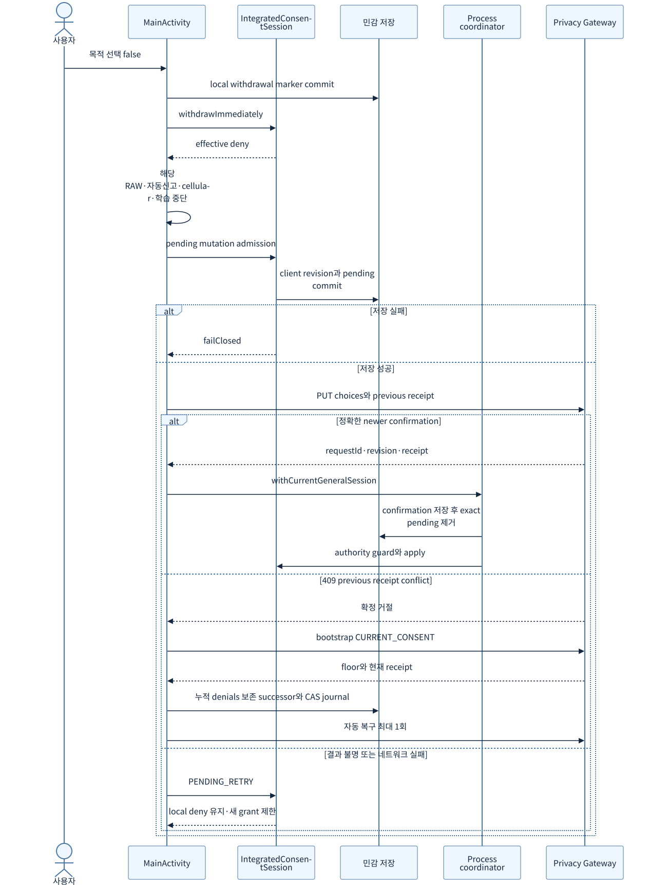


F-D01-023 동의 저장·pending replay·확정 CAS 거절 복구
| 항목 | 명세 |
|---|---|
| 분야 | D01 계정·온보딩·동의·권한·앱 개인정보와 로컬 보안 |
| 목적 | 새 허용과 철회 요청을 서버 receipt 단위로 선저장·확인한다. |
| 사용 주체 | 앱 사용자 MainActivity |
| 활성 상태 | ACTIVE |
| 진입점 | apps/android/app/src/main/java/kr/co/hanium/dreamup/walksafe/MainActivity.kt:10199 persistIntegratedConsentDraft apps/android/app/src/main/java/kr/co/hanium/dreamup/walksafe/MainActivity.kt:9993 startRejectedIntegratedConsentCasRecovery apps/android/app/src/main/java/kr/co/hanium/dreamup/walksafe/MainActivity.kt:10454 startIntegratedConsentRequest / applyIntegratedConsentConfirmation apps/android/app/src/main/java/kr/co/hanium/dreamup/walksafe/session/IntegratedConsentPolicy.kt:220 PendingIntegratedConsentMutation / IntegratedConsentSession apps/android/app/src/main/java/kr/co/hanium/dreamup/walksafe/session/RejectedConsentCasJournalCodec.kt:1 RejectedConsentCasJournalCodec |
| 실행 전제 | current GENERAL actor/session/install·bootstrap ready·store 정상·삭제block 없음 |
| 입력 출처 형식 검증 최신성 | desired four choices,current receipt,clientRev floor+1,actorSHA,deterministic requestId,withdrawal set; rev>0에는 previous receipt 필요 |
시작 이벤트와 처리 순서
| 이벤트 ID | 발생원 | 이벤트 | 수신부 | 흐름 |
|---|---|---|---|---|
| E-D01-023-01 | 사용자 또는 명시된 호출자 | 동의 저장·pending replay·확정 CAS 거절 복구 | persistIntegratedConsentDraft | current GENERAL actor/session/install·bootstrap ready·store 정상·삭제block 없음 → recovery denial이 있으면 draft grant보다 우선하여 effective desired를 만든다. → 정확한 confirmation 저장 후 해당 목적 effective 상태 |
- recovery denial이 있으면 draft grant보다 우선하여 effective desired를 만든다.
- synchronized admission에서 current pending 충돌·revision·actor를 확인하고 pending mutation+clientRev를 encrypted commit한다.
- durable commit 성공 뒤 PUT privacy/rights를 실행; current generation 확인 후 strict confirmation을 평가한다.
- exact requestId/install/version/clientRev/selections와 더 큰 serverRev가 일치해야 confirmation을 저장하고 pending/CAS journal을 제거한다.
- 409 previous receipt conflict 확정이면 bootstrap CURRENT_CONSENT를 가져와 floor+1 successor를 만들되 누적 denials를 모두 보존한다. journal32KiB 내 저장 후 자동복구 최대1회 dispatch한다.
| 분기 조건 | 실제 처리 결과 | 구현 근거 |
|---|---|---|
| pending withdrawal을 새grant로 대체 시도 | submission 거부 | apps/android/app/src/main/java/kr/co/hanium/dreamup/walksafe/MainActivity.kt:10199 persistIntegratedConsentDraft |
| store commit 실패 | 전송 안 함·failClosed | apps/android/app/src/main/java/kr/co/hanium/dreamup/walksafe/MainActivity.kt:10199 persistIntegratedConsentDraft |
| 동일rev 다른content/identity | failClosed | apps/android/app/src/main/java/kr/co/hanium/dreamup/walksafe/MainActivity.kt:10199 persistIntegratedConsentDraft |
| bootstrap/receipt/floor 부정 또는 복구횟수 초과 | authority hold·PENDING_RETRY | apps/android/app/src/main/java/kr/co/hanium/dreamup/walksafe/MainActivity.kt:10199 persistIntegratedConsentDraft |
| 전송 결과 불명 | pending 유지; 새허용 열지 않음 | apps/android/app/src/main/java/kr/co/hanium/dreamup/walksafe/MainActivity.kt:10199 persistIntegratedConsentDraft |
효과 종료와 복구
서버 receipt·audit hash·controlsecret encrypted 저장; 후속 schedulePostWalkTransfers는 current allowed에만 영향.
| 상황 | 동작 |
|---|---|
| 정상 완료 | 정확한 confirmation 저장 후 해당 목적 effective 상태 |
| 실패 | 저장·서버확인 실패면 grant 제한; 철회 계속 효력 |
| 시간 초과 | connect8s/read12s; timeout은 pending 제거 근거 아님 |
| 중복 입력 | 동일 exact confirmation duplicate 허용; older ignored; same-rev conflict 차단 |
| 취소 | call cancel 가능하지만 durable pending 철회는 취소로 사라지지 않음 |
| 중단과 생명주기 | 새 session/generation이면 late response publish 금지 |
| 재시도 | 동일 pending replay 및 확정CAS 충돌만1회 자동 successor; 계속실패는 pendingRetry |
| 복구 | 재시작 pending/CAS journal strict schema·actor/confirmation 보존검사 |
| 자원 정리 | 정확 ack에서만 pending·CAS journal 삭제, 관련 withdrawal acknowledgement 제거 |
상태 실행 맥락과 연결
| 항목 | 명세 |
|---|---|
| 초기 상태 | S-D01-023-DRAFT |
| 상태 목록 | S-D01-023-DRAFT S-D01-023-PERSISTING S-D01-023-PENDING S-D01-023-CONFIRMING S-D01-023-CAS_REJECTED S-D01-023-PENDING_RETRY S-D01-023-CONFIRMED S-D01-023-FAIL_CLOSED |
| 전이 조건과 전이 동작 | durablepending→PENDING PUTexactack→CONFIRMED 확정409→CAS_REJECTED→successor 기타실패→PENDING_RETRY |
| 허용되지 않는 전이 | 철회미전달을 새grant로 덮거나 rejected CAS와 unknown outcome 혼동 금지 |
| 동시성 순서와 작업 소유권 | lock으로 admission·persist 직렬화, dispatch 밖에서 current owner 재확인, process authority commit lock |
| 공유 상태와 다른 기능 연결 | F-D01-010/022/024; D06 RAW receipt transition; D08/D09 ledger CAS |
정책 근거와 검증 범위
| 항목 | 근거 |
|---|---|
| 정책 | P-D01-015 P-D01-016 P-D01-017 P-D01-018 P-D01-024 |
| 구현 | apps/android/app/src/main/java/kr/co/hanium/dreamup/walksafe/MainActivity.kt:10199 · persistIntegratedConsentDraft (범위 10199–10371)apps/android/app/src/main/java/kr/co/hanium/dreamup/walksafe/MainActivity.kt:9993 · startRejectedIntegratedConsentCasRecovery (범위 9993–10198)apps/android/app/src/main/java/kr/co/hanium/dreamup/walksafe/MainActivity.kt:10454 · startIntegratedConsentRequest / applyIntegratedConsentConfirmation (범위 10454–10889)apps/android/app/src/main/java/kr/co/hanium/dreamup/walksafe/session/IntegratedConsentPolicy.kt:220 · PendingIntegratedConsentMutation / IntegratedConsentSession (범위 220–898)apps/android/app/src/main/java/kr/co/hanium/dreamup/walksafe/session/RejectedConsentCasJournalCodec.kt:1 · RejectedConsentCasJournalCodec (범위 1–161) |
| 기존 개선 ID | 개별 동일성 미확인; 분야 연관은 별도 추적표 |
| 기존 분야 | 해당 없음 |
| 기존 실행 증거 | 해당 없음 |
| 한계 및 구분 | 현재 snapshot 정적 확인. 기기·네트워크 실동작은 이번 검증하지 않았다. |
| 테스트 위치 | 심볼 | 증거 수준 | 기대와 한계 |
|---|
연결한 테스트 미확인: 이번 작성 범위에서 이 기능에 대응하는 시험 단언을 연결하지 않았다. 테스트 자체가 없다는 판정이 아니다.
이벤트 처리 그림

F-D01-024 RAW·자동신고·모바일전송·학습 동의의 즉시 철회
| 항목 | 명세 |
|---|---|
| 분야 | D01 계정·온보딩·동의·권한·앱 개인정보와 로컬 보안 |
| 목적 | 네 목적을 각각 서버 응답 전에 로컬에서 중단한다. |
| 사용 주체 | 앱 사용자 MainActivity |
| 활성 상태 | ACTIVE |
| 진입점 | apps/android/app/src/main/java/kr/co/hanium/dreamup/walksafe/MainActivity.kt:9613 updateIntegratedConsentDraft apps/android/app/src/main/java/kr/co/hanium/dreamup/walksafe/MainActivity.kt:9754 applyImmediateConsentWithdrawals apps/android/app/src/main/java/kr/co/hanium/dreamup/walksafe/session/IntegratedConsentPolicy.kt:368 withdrawImmediately / withdrawalRecoverySelectionsOrNull |
| 실행 전제 | 해당 consent toggle을 false로 변경; 저장소 접근 가능; 기존 grant 여부와 무관하게 철회 의사 보존 |
| 입력 출처 형식 검증 최신성 | IntegratedConsentItem 네 값과 desired false; actor-bound local withdrawal marker |
시작 이벤트와 처리 순서
| 이벤트 ID | 발생원 | 이벤트 | 수신부 | 흐름 |
|---|---|---|---|---|
| E-D01-024-01 | 사용자 | RAW 동의 false | applyImmediateConsentWithdrawals | marker commit → raw deny → speech/raw 저장·업로드 취소 → pending서버반영 |
| E-D01-024-02 | 사용자 | 자동 신고 false | applyImmediateConsentWithdrawals | marker commit → auto deny → generation 증가·자동queue 정리 |
| E-D01-024-03 | 사용자 | 모바일 전송 false | applyImmediateConsentWithdrawals | marker commit → WIFI_ONLY → cellular중 전송 취소 |
| E-D01-024-04 | 사용자 | 학습 재사용 false | applyImmediateConsentWithdrawals | marker commit → training deny → 서버반영대기 |
- false 변경은 encrypted local withdrawal marker를 저장하고 RAW이면 추가 plain field-log block marker를 먼저 commit한다.
- session.withdrawImmediately로 effective deny를 적용하고 진행 consent call을 취소한다.
- RAW는 speech-output storage·debug original/upload·raw upload/window를 막고 raw coordinator 재검증/정리를 연결한다.
- 자동신고는 safety generation 증가·자동 queue 및 old receipt 정리를, 모바일은 WIFI_ONLY 및 현재 cellular 전송중단을, 학습은 training reuse false를 적용한다.
- 이후 서버 pending mutation으로 전달하되 old confirmation replay와 재시작에서도 local denial이 계속 우선한다.
| 분기 조건 | 실제 처리 결과 | 구현 근거 |
|---|---|---|
| 철회 marker commit 실패 | 전체 consent failClosed; 성공이라고 안내하지 않음 | apps/android/app/src/main/java/kr/co/hanium/dreamup/walksafe/MainActivity.kt:9613 updateIntegratedConsentDraft |
| RAW만 철회 | 다른 독립 목적 선택을 자동 false로 만들지는 않음 | apps/android/app/src/main/java/kr/co/hanium/dreamup/walksafe/MainActivity.kt:9613 updateIntegratedConsentDraft |
| 현재 cellular 아님 | 모바일 preference는 WiFiOnly로 바꾸고 future gate 적용 | apps/android/app/src/main/java/kr/co/hanium/dreamup/walksafe/MainActivity.kt:9613 updateIntegratedConsentDraft |
| 서버 old grant replay | effective deny 유지·WITHDRAWAL_PENDING | apps/android/app/src/main/java/kr/co/hanium/dreamup/walksafe/MainActivity.kt:9613 updateIntegratedConsentDraft |
효과 종료와 복구
해당 저장·수집·전송 즉시 제한. 이미 서버에 전달된 데이터 삭제·보존기간 완료는 별도 D06/D09 정책이다.
| 상황 | 동작 |
|---|---|
| 정상 완료 | 로컬 철회 효력 즉시; 서버 ack 후 pending 해제 |
| 실패 | storagefailure는 failClosed |
| 시간 초과 | 서버 미응답 동안에도 로컬deny 유지; 자동철회만료 없음 |
| 중복 입력 | 동일 false 재선택은 허용회복을 만들지 않음 |
| 취소 | 철회 전송 취소가 이미 저장된 deny를 취소하지 않음 |
| 중단과 생명주기 | 재시작에서 marker+pending denial 복원 |
| 재시도 | 연결복구 후 durable withdrawal replay; old grant로 재시도 payload 만들지 않음 |
| 복구 | marker-only withdrawal도 정책reconsent reset으로 삭제하지 않음 |
| 자원 정리 | 정확 pending confirmation이 acknowledgement할 때만 관련 marker 해제 |
상태 실행 맥락과 연결
| 항목 | 명세 |
|---|---|
| 초기 상태 | S-D01-024-ALLOWED |
| 상태 목록 | S-D01-024-ALLOWED S-D01-024-LOCAL_DENIED S-D01-024-WITHDRAWAL_PENDING S-D01-024-SERVER_DENIED S-D01-024-FAIL_CLOSED |
| 전이 조건과 전이 동작 | false→LOCAL_DENIED 전송대기→WITHDRAWAL_PENDING 정확ack→SERVER_DENIED |
| 허용되지 않는 전이 | 서버확인 기다리며 수집 계속·다른grant로 localdeny해제 금지 |
| 동시성 순서와 작업 소유권 | UI commit→effective policy→cancel queued work; 각 executor 세부 purge는 D06/D02 경계 |
| 공유 상태와 다른 기능 연결 | D06 rawCollectionRuntimeCoordinator/reportQueue/NetworkTransferPolicy; D02 speech output |
정책 근거와 검증 범위
| 항목 | 근거 |
|---|---|
| 정책 | P-D01-015 P-D01-017 P-D01-018 |
| 구현 | apps/android/app/src/main/java/kr/co/hanium/dreamup/walksafe/MainActivity.kt:9613 · updateIntegratedConsentDraft (범위 9613–9650)apps/android/app/src/main/java/kr/co/hanium/dreamup/walksafe/MainActivity.kt:9754 · applyImmediateConsentWithdrawals (범위 9754–9858)apps/android/app/src/main/java/kr/co/hanium/dreamup/walksafe/session/IntegratedConsentPolicy.kt:368 · withdrawImmediately / withdrawalRecoverySelectionsOrNull (범위 368–898) |
| 기존 개선 ID | 개별 동일성 미확인; 분야 연관은 별도 추적표 |
| 기존 분야 | 해당 없음 |
| 기존 실행 증거 | 해당 없음 |
| 한계 및 구분 | 현재 snapshot 정적 확인. 기기·네트워크 실동작은 이번 검증하지 않았다. |
| 테스트 위치 | 심볼 | 증거 수준 | 기대와 한계 |
|---|---|---|---|
| apps/android/app/src/test/java/kr/co/hanium/dreamup/walksafe/session/IntegratedConsentEffectiveWithdrawalRegressionTest.kt | offlineWithdrawalSurvivesRestartAndReplayOfTheOldReceipt | TEST_EXPECTATION | 오프라인 철회가 재시작·옛receipt replay 이후에도 우선하는 기대; 이번 실행하지 않음 |
| apps/android/app/src/test/java/kr/co/hanium/dreamup/walksafe/session/IntegratedConsentEffectiveWithdrawalRegressionTest.kt | policyReconsentRefusesToDropAMarkerOnlyLocalWithdrawal | TEST_EXPECTATION | 버전재동의가 marker-only 철회를 버리지 않는 기대; 이번 실행하지 않음 |
이벤트 처리 그림

F-D01-025 민감 preference의 암호화 map·소유권·저장 장애 차단
| 항목 | 명세 |
|---|---|
| 분야 | D01 계정·온보딩·동의·권한·앱 개인정보와 로컬 보안 |
| 목적 | 계정·동의·교육·삭제 관련 값의 저장·복원 실패를 명시적 차단으로 처리한다. |
| 사용 주체 | 앱 사용자 MainActivity |
| 활성 상태 | ACTIVE |
| 진입점 | apps/android/app/src/main/java/kr/co/hanium/dreamup/walksafe/security/AndroidSensitivePreferenceStore.kt:1 AndroidSensitivePreferenceStore |
| 실행 전제 | AndroidSensitivePreferenceStore 초기화 및 허용된 key/prefix 요청 |
| 입력 출처 형식 검증 최신성 | 타입있는 map 최대256 entries,평문64KiB,envelope96KiB; storage identity+key+owner epoch |
시작 이벤트와 처리 순서
| 이벤트 ID | 발생원 | 이벤트 | 수신부 | 흐름 |
|---|---|---|---|---|
| E-D01-025-01 | 사용자 또는 명시된 호출자 | 민감 preference의 암호화 map·소유권·저장 장애 차단 | AndroidSensitivePreferenceStore | AndroidSensitivePreferenceStore 초기화 및 허용된 key/prefix 요청 → 초기화는 reset marker·blocked marker·plaintext artifact를 검사하고 encrypted envelope만 decode한다. → 검증값 읽기/성공commit 또는 durable reset |
- 초기화는 reset marker·blocked marker·plaintext artifact를 검사하고 encrypted envelope만 decode한다.
- 모든 key/type/size를 검증하고 old readable version이면 필요한 rewrap 경로를 사용한다.
- editor는 소유자 epoch를 확인하고 새 map을 암호화·durable commit한 뒤 메모리값을 publish한다.
- 복호·파싱·scope·저장 실패면 identity-free blocked marker를 남기고 getter는 기본값을 반환한다.
- destroyAndClear는 reset pending을 먼저 저장하고 payload부재 확인→known key 폐기→새키생성→marker해제 readback을 수행한다.
| 분기 조건 | 실제 처리 결과 | 구현 근거 |
|---|---|---|
| plaintext 민감 artifact 발견 | 자동이관 없이 제거·차단 | apps/android/app/src/main/java/kr/co/hanium/dreamup/walksafe/security/AndroidSensitivePreferenceStore.kt:1 AndroidSensitivePreferenceStore |
| bad type/key/size/decrypt | 복원 차단 | apps/android/app/src/main/java/kr/co/hanium/dreamup/walksafe/security/AndroidSensitivePreferenceStore.kt:1 AndroidSensitivePreferenceStore |
| 새 store instance가 owner를 교체 | old instance commit 실패; 새상태 덮기 없음 | apps/android/app/src/main/java/kr/co/hanium/dreamup/walksafe/security/AndroidSensitivePreferenceStore.kt:1 AndroidSensitivePreferenceStore |
| 중간 reset 실패 | marker남고 차단; 새 정상상태로 오인 안 함 | apps/android/app/src/main/java/kr/co/hanium/dreamup/walksafe/security/AndroidSensitivePreferenceStore.kt:1 AndroidSensitivePreferenceStore |
효과 종료와 복구
SharedPreferences encrypted envelope와 비밀없는 차단/초기화 표식; 모든 앱데이터 전체암호화 보장으로 확대하지 않는다.
| 상황 | 동작 |
|---|---|
| 정상 완료 | 검증값 읽기/성공commit 또는 durable reset |
| 실패 | blocked; caller가 false/default를 허용으로 취급하지 않도록 상위 gate |
| 시간 초과 | 동기 저장 API 자체 timeout 없음 |
| 중복 입력 | single current owner만 commit; stale store가 reset도 덮지 않음 |
| 취소 | 저장 mutation의 중간 취소 API 없음 |
| 중단과 생명주기 | crash의 reset marker가 다음 초기화를 차단 |
| 재시도 | caller 재시도·명시reset; 복호 실패를 새키생성으로 덮지 않음 |
| 복구 | same identity encrypted store 복원, keymissing이면 blocked |
| 자원 정리 | 삭제 완료 reset 또는 허용 범위 remove |
상태 실행 맥락과 연결
| 항목 | 명세 |
|---|---|
| 초기 상태 | S-D01-025-INITIALIZING |
| 상태 목록 | S-D01-025-INITIALIZING S-D01-025-READY S-D01-025-BLOCKED S-D01-025-RESET_PENDING |
| 전이 조건과 전이 동작 | 검증복호성공→READY 오류→BLOCKED explicitreset→RESET_PENDING→READY |
| 허용되지 않는 전이 | stale owner commit·plaintext 신뢰이관·저장실패 후 publish 금지 |
| 동시성 순서와 작업 소유권 | shared locks+process owner epoch+synchronous commit; publish order가 durable write 뒤 |
| 공유 상태와 다른 기능 연결 | F-D01-004/006/018/023/030/031; session store는 별도encrypted형식 |
정책 근거와 검증 범위
| 항목 | 근거 |
|---|---|
| 정책 | P-D01-018 P-D01-019 |
| 구현 | apps/android/app/src/main/java/kr/co/hanium/dreamup/walksafe/security/AndroidSensitivePreferenceStore.kt:1 · AndroidSensitivePreferenceStore (범위 1–511) |
| 기존 개선 ID | 개별 동일성 미확인; 분야 연관은 별도 추적표 |
| 기존 분야 | 해당 없음 |
| 기존 실행 증거 | 해당 없음 |
| 한계 및 구분 | 현재 snapshot 정적 확인. 기기·네트워크 실동작은 이번 검증하지 않았다. |
| 테스트 위치 | 심볼 | 증거 수준 | 기대와 한계 |
|---|
연결한 테스트 미확인: 이번 작성 범위에서 이 기능에 대응하는 시험 단언을 연결하지 않았다. 테스트 자체가 없다는 판정이 아니다.
이벤트 처리 그림

F-D01-026 AndroidKeyStore 키·AEAD envelope와 백업 제외
| 항목 | 명세 |
|---|---|
| 분야 | D01 계정·온보딩·동의·권한·앱 개인정보와 로컬 보안 |
| 목적 | 민감 로컬 ciphertext의 키·버전·용도를 결속하고 일반 백업에서 제외한다. |
| 사용 주체 | 앱 사용자 MainActivity |
| 활성 상태 | ACTIVE |
| 진입점 | apps/android/app/src/main/java/kr/co/hanium/dreamup/walksafe/security/LocalAead.kt:1 LocalAead / VersionedLocalAead apps/android/app/src/main/java/kr/co/hanium/dreamup/walksafe/security/AndroidKeyStoreAead.kt:1 AndroidKeyStoreAead apps/android/app/src/main/AndroidManifest.xml:1 application apps/android/app/src/main/res/xml/data_extraction_rules.xml:1 data-extraction-rules |
| 실행 전제 | 민감 저장소가 versioned LocalAead 사용; AndroidKeyStore 접근 가능 |
| 입력 출처 형식 검증 최신성 | AES256 GCM,IV12bytes,tag128bits,nonempty domain AAD<=1024bytes,current/readable/compromised version set |
시작 이벤트와 처리 순서
| 이벤트 ID | 발생원 | 이벤트 | 수신부 | 흐름 |
|---|---|---|---|---|
| E-D01-026-01 | 사용자 또는 명시된 호출자 | AndroidKeyStore 키·AEAD envelope와 백업 제외 | LocalAead / VersionedLocalAead | 민감 저장소가 versioned LocalAead 사용; AndroidKeyStore 접근 가능 → 현재 key version으로 randomized encryption하고 envelope version·domain을 AAD에 포함한다. → 인증된 plaintext 또는 current-version ciphertext |
- 현재 key version으로 randomized encryption하고 envelope version·domain을 AAD에 포함한다.
- decode는 canonical Base64와 envelope/IV/tag/버전 범위를 검증하고 readable known key로만 decrypt한다.
- compromised key는 제거,missing key generation tombstone은 임의 재생성을 막는다. 이전 readable key 자료는 rewrap 필요 표시한다.
- 검증된 purge/reset 경로에서만 fresh key를 만들고 caller는 plaintext buffer를 필요한 범위 후 정리한다.
- manifest allowBackup=false·dataExtractionRules에서 cloud backup/device transfer 영역을 제외하고 usesCleartextTraffic=false를 선언한다.
| 분기 조건 | 실제 처리 결과 | 구현 근거 |
|---|---|---|
| AAD mismatch·tag 실패·unknownversion | decryption blocked | apps/android/app/src/main/java/kr/co/hanium/dreamup/walksafe/security/LocalAead.kt:1 LocalAead / VersionedLocalAead |
| 키가사라졌으나 generation tombstone있음 | silent regeneration 거부 | apps/android/app/src/main/java/kr/co/hanium/dreamup/walksafe/security/LocalAead.kt:1 LocalAead / VersionedLocalAead |
| compromisedversion | 복호거부·키삭제 | apps/android/app/src/main/java/kr/co/hanium/dreamup/walksafe/security/LocalAead.kt:1 LocalAead / VersionedLocalAead |
| reset 검증실패 | fresh 정상저장 publish 금지 | apps/android/app/src/main/java/kr/co/hanium/dreamup/walksafe/security/LocalAead.kt:1 LocalAead / VersionedLocalAead |
효과 종료와 복구
ciphertext+key alias lifecycle; AndroidKeyStore 하드웨어 지원·root 공격 방어·화면캡처 차단을 증명하지 않는다.
| 상황 | 동작 |
|---|---|
| 정상 완료 | 인증된 plaintext 또는 current-version ciphertext |
| 실패 | 불량 자료는 상위store blocked로 전달 |
| 시간 초과 | crypto 자체 timeout 없음 |
| 중복 입력 | randomized IV; 동일 평문이라 동일 ciphertext를 요구하지 않음 |
| 취소 | 암복호 호출 중 사용자 취소 API 없음 |
| 중단과 생명주기 | process crash 복구는 각 store/reset marker 계약 |
| 재시도 | 키missing자료의 blindretry로 복원 불가 |
| 복구 | 이전 readableversion은 rewrap; keylost는 verified purge 후 초기화 |
| 자원 정리 | compromised/known keys destroy, transient plaintext zeroing은 caller별 |
상태 실행 맥락과 연결
| 항목 | 명세 |
|---|---|
| 초기 상태 | S-D01-026-CURRENT |
| 상태 목록 | S-D01-026-CURRENT S-D01-026-READABLE_OLD S-D01-026-COMPROMISED S-D01-026-KEY_MISSING S-D01-026-BLOCKED |
| 전이 조건과 전이 동작 | old readable decrypt→needsRewrap compromised/missing→BLOCKED verified purge→fresh CURRENT |
| 허용되지 않는 전이 | 하드웨어암호화 보장·백업설정만으로 전체기기정보유출 불가 주장 금지 |
| 동시성 순서와 작업 소유권 | AndroidKeyStore shared lock과 synchronous crypto |
| 공유 상태와 다른 기능 연결 | D03 route·D06 report/raw 각 전용암호store는 담당영역 별도 |
정책 근거와 검증 범위
| 항목 | 근거 |
|---|---|
| 정책 | P-D01-018 P-D01-019 |
| 구현 | apps/android/app/src/main/java/kr/co/hanium/dreamup/walksafe/security/LocalAead.kt:1 · LocalAead / VersionedLocalAead (범위 1–278)apps/android/app/src/main/java/kr/co/hanium/dreamup/walksafe/security/AndroidKeyStoreAead.kt:1 · AndroidKeyStoreAead (범위 1–98)apps/android/app/src/main/AndroidManifest.xml:1 · application (범위 1–66)apps/android/app/src/main/res/xml/data_extraction_rules.xml:1 · data-extraction-rules (범위 1–25) |
| 기존 개선 ID | 개별 동일성 미확인; 분야 연관은 별도 추적표 |
| 기존 분야 | 해당 없음 |
| 기존 실행 증거 | 해당 없음 |
| 한계 및 구분 | 현재 snapshot 정적 확인. 기기·네트워크 실동작은 이번 검증하지 않았다. |
| 테스트 위치 | 심볼 | 증거 수준 | 기대와 한계 |
|---|
연결한 테스트 미확인: 이번 작성 범위에서 이 기능에 대응하는 시험 단언을 연결하지 않았다. 테스트 자체가 없다는 판정이 아니다.
이벤트 처리 그림

F-D01-027 계정 삭제 확인·취소·이중 durable intent
| 항목 | 명세 |
|---|---|
| 분야 | D01 계정·온보딩·동의·권한·앱 개인정보와 로컬 보안 |
| 목적 | 되돌릴 수 없는 삭제 절차를 명시적 확인과 영속 증거에 결속한다. |
| 사용 주체 | 앱 사용자 MainActivity |
| 활성 상태 | ACTIVE |
| 진입점 | apps/android/app/src/main/java/kr/co/hanium/dreamup/walksafe/MainActivity.kt:4510 onAccountDeletionPrimaryClicked / onAccountDeletionConfirmClicked apps/android/app/src/main/java/kr/co/hanium/dreamup/walksafe/session/AccountDeletionDualAuthority.kt:1 AccountDeletionDualAuthority apps/android/app/src/main/java/kr/co/hanium/dreamup/walksafe/session/AccountDeletionIntentFence.kt:1 AccountDeletionIntentFence apps/android/app/src/main/java/kr/co/hanium/dreamup/walksafe/session/PrivacyDeletionPolicy.kt:478 requestConfirmation / cancelConfirmation / begin |
| 실행 전제 | 계정삭제 UI·일치actor 일반/복구세션 또는 복구모드; 저장소/삭제상태 정상 |
| 입력 출처 형식 검증 최신성 | 확인 이벤트,configuredorigin,installationId,requestId,actor hash,clientRevision; 확인문구 DELETE_MY_ACCOUNT API body |
시작 이벤트와 처리 순서
| 이벤트 ID | 발생원 | 이벤트 | 수신부 | 흐름 |
|---|---|---|---|---|
| E-D01-027-01 | 사용자 또는 명시된 호출자 | 계정 삭제 확인·취소·이중 durable intent | onAccountDeletionPrimaryClicked / onAccountDeletionConfirmClicked | 계정삭제 UI·일치actor 일반/복구세션 또는 복구모드; 저장소/삭제상태 정상 → 계정 삭제 주 버튼은 IDLE에서 CONFIRM_REQUIRED와 설명을 열고 완료 상태에서는 reset을 연결한다. → 삭제 요청 준비 또는 확인전 취소 |
- 계정 삭제 주 버튼은 IDLE에서 CONFIRM_REQUIRED와 설명을 열고 완료 상태에서는 reset을 연결한다.
- 사용자는 durable 준비 전에는 cancelConfirmation으로 돌아갈 수 있다.
- 최종 확인은 현재 actor/session/origin을 검증하고 runtime privacy fence를 먼저 세운 뒤 preparation worker를 시작한다.
- encrypted preference와 noBackup intent에 confirmed를 쓰고 파일 verified write를 확인한 뒤 요청 journal 준비를 진행한다.
| 분기 조건 | 실제 처리 결과 | 구현 근거 |
|---|---|---|
| durable 확인/prepare가 이미 시작됨 | 취소 거부; 삭제 복구 안내 | apps/android/app/src/main/java/kr/co/hanium/dreamup/walksafe/MainActivity.kt:4510 onAccountDeletionPrimaryClicked / onAccountDeletionConfirmClicked |
| actor/scope mismatch·sensitiveblocked | 요청 보내지 않고 제한/복구유지 | apps/android/app/src/main/java/kr/co/hanium/dreamup/walksafe/MainActivity.kt:4510 onAccountDeletionPrimaryClicked / onAccountDeletionConfirmClicked |
| 파일쓰기 실패·authority충돌 | failClosed 및 일반기능 차단 | apps/android/app/src/main/java/kr/co/hanium/dreamup/walksafe/MainActivity.kt:4510 onAccountDeletionPrimaryClicked / onAccountDeletionConfirmClicked |
| 파일성공·pref실패 | 이중권위의 file authority를 보존하고 복구 경로 | apps/android/app/src/main/java/kr/co/hanium/dreamup/walksafe/MainActivity.kt:4510 onAccountDeletionPrimaryClicked / onAccountDeletionConfirmClicked |
효과 종료와 복구
계정삭제 확인 UI·안내·runtime privacy 차단, noBackup durable confirmation; 서버 삭제 접수와는 구분.
| 상황 | 동작 |
|---|---|
| 정상 완료 | 삭제 요청 준비 또는 확인전 취소 |
| 실패 | durable authority를 확보하지 못하면 정상 작업 지속을 허용하지 않음 |
| 시간 초과 | 확인 대화상자 자동 timeout 없음; HTTP 전 preparation 단계 |
| 중복 입력 | 삭제 진행중 새 confirmation/request 시작 거부 |
| 취소 | durable 준비 전 cancel만 가능 |
| 중단과 생명주기 | Activity lease 교체에도 durable intent 보존 |
| 재시도 | 실패한 준비는 authority/journal 복구 절차; 새임의request 남발 없음 |
| 복구 | file confirmed+journal없음은 확인사실 유지한 복구 |
| 자원 정리 | 확인 전cancel은 임시상태; durable intent는 terminalreset때 clear |
상태 실행 맥락과 연결
| 항목 | 명세 |
|---|---|
| 초기 상태 | S-D01-027-IDLE |
| 상태 목록 | S-D01-027-IDLE S-D01-027-CONFIRM_REQUIRED S-D01-027-PREPARING S-D01-027-CONFIRMED S-D01-027-FAIL_CLOSED |
| 전이 조건과 전이 동작 | 주버튼→CONFIRM_REQUIRED 사전취소→IDLE 최종확인→PREPARING→CONFIRMED |
| 허용되지 않는 전이 | durableconfirmation 이후 cancel/일반logout으로 의사폐기 금지 |
| 동시성 순서와 작업 소유권 | Main UI→privacy worker lease; dual authority 쓰기 두 시도 모두 수행 |
| 공유 상태와 다른 기능 연결 | F-D01-028/030/031; D02 runtime stop; D06 수집/신고차단 |
정책 근거와 검증 범위
| 항목 | 근거 |
|---|---|
| 정책 | P-D01-020 P-D01-022 |
| 구현 | apps/android/app/src/main/java/kr/co/hanium/dreamup/walksafe/MainActivity.kt:4510 · onAccountDeletionPrimaryClicked / onAccountDeletionConfirmClicked (범위 4510–4628)apps/android/app/src/main/java/kr/co/hanium/dreamup/walksafe/session/AccountDeletionDualAuthority.kt:1 · AccountDeletionDualAuthority (범위 1–190)apps/android/app/src/main/java/kr/co/hanium/dreamup/walksafe/session/AccountDeletionIntentFence.kt:1 · AccountDeletionIntentFence (범위 1–37)apps/android/app/src/main/java/kr/co/hanium/dreamup/walksafe/session/PrivacyDeletionPolicy.kt:478 · requestConfirmation / cancelConfirmation / begin (범위 478–644) |
| 기존 개선 ID | 개별 동일성 미확인; 분야 연관은 별도 추적표 |
| 기존 분야 | 해당 없음 |
| 기존 실행 증거 | 해당 없음 |
| 한계 및 구분 | 현재 snapshot 정적 확인. 기기·네트워크 실동작은 이번 검증하지 않았다. |
| 테스트 위치 | 심볼 | 증거 수준 | 기대와 한계 |
|---|
연결한 테스트 미확인: 이번 작성 범위에서 이 기능에 대응하는 시험 단언을 연결하지 않았다. 테스트 자체가 없다는 판정이 아니다.
이벤트 처리 그림

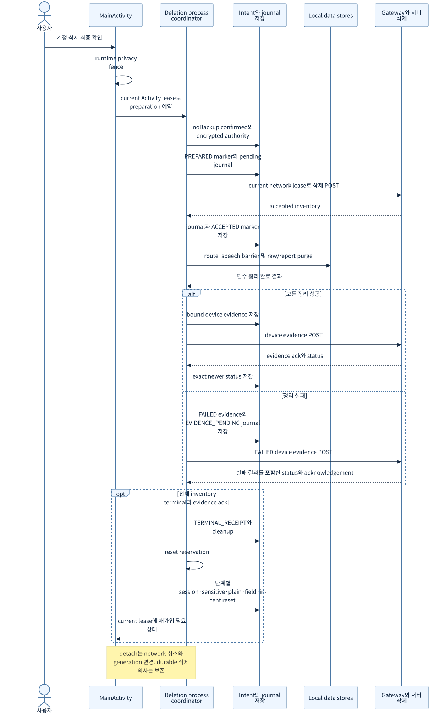


F-D01-028 계정 삭제 요청·status 갱신·9개 inventory·완료 증거
| 항목 | 명세 |
|---|---|
| 분야 | D01 계정·온보딩·동의·권한·앱 개인정보와 로컬 보안 |
| 목적 | 삭제 접수·부분실패·법적보류·완료를 서버의 일치하는 상태로 표시한다. |
| 사용 주체 | 앱 사용자 MainActivity |
| 활성 상태 | ACTIVE |
| 진입점 | apps/android/app/src/main/java/kr/co/hanium/dreamup/walksafe/network/AndroidPrivacyDeletionClient.kt:1 requestDeletionCall / fetchDeletionStatusCall / replayDeletionRequestCall apps/android/app/src/main/java/kr/co/hanium/dreamup/walksafe/MainActivity.kt:5503 startAccountDeletionCall apps/android/app/src/main/java/kr/co/hanium/dreamup/walksafe/session/PrivacyDeletionPolicy.kt:1 DeletionInventoryItem / AccountDeletionStatus apps/android/app/src/main/java/kr/co/hanium/dreamup/walksafe/session/PrivacyDeletionPolicy.kt:1281 apply / applyLocked apps/android/app/src/main/java/kr/co/hanium/dreamup/walksafe/MainActivity.kt:5381 refreshAccountDeletionStatus / refreshAccountDeletionStatusAllowed |
| 실행 전제 | durableconfirmed intent 및 request journal; current deletion worker lease; 적절한 session/controlsecret |
| 입력 출처 형식 검증 최신성 | request/install/clientrev/accountgeneration/tombstone/receipt; statusrev,acceptedAt,itemstates; exact9 inventory |
시작 이벤트와 처리 순서
| 이벤트 ID | 발생원 | 이벤트 | 수신부 | 흐름 |
|---|---|---|---|---|
| E-D01-028-01 | 사용자 또는 명시된 호출자 | 계정 삭제 요청·status 갱신·9개 inventory·완료 증거 | requestDeletionCall / fetchDeletionStatusCall / replayDeletionRequestCall | durableconfirmed intent 및 request journal; current deletion worker lease; 적절한 session/controlsecret → initial POST /privacy/account-deletions는 GENERAL session과 삭제secret로202를 기대한다. 접수 후 GET request/status는 secret로 조회한다. → 정확한 서버COMPLETED+증거ack 후 완료표시/정리 경로 |
- initial POST /privacy/account-deletions는 GENERAL session과 삭제secret로202를 기대한다. 접수 후 GET request/status는 secret로 조회한다.
- 상태응답은 identity와 accepted binding·revision·9항목과 상태별 evidence를 검증한다.
- worker lease/generation이 current일 때 stateMachine.apply를 호출하고 durable journal 저장 뒤 UI progress를 갱신한다.
- PENDING/IN_PROGRESS/EXTERNAL_PENDING/RETRY_WAIT/LEGAL_HOLD/FAILED/COMPLETED/NOT_APPLICABLE의 정확한 8개 inventory 상태를 유지하고 전체phase를 유도한다.
- 전체terminal receipt와 deviceEvidenceAcknowledged까지 만족해야 COMPLETED; terminalCleanupComplete는 별도 reset 선행조건이다.
| 분기 조건 | 실제 처리 결과 | 구현 근거 |
|---|---|---|
| lowerrevision | stale 무시 | apps/android/app/src/main/java/kr/co/hanium/dreamup/walksafe/network/AndroidPrivacyDeletionClient.kt:1 requestDeletionCall / fetchDeletionStatusCall / replayDeletionRequestCall |
| same revision 동일 | duplicate 허용 | apps/android/app/src/main/java/kr/co/hanium/dreamup/walksafe/network/AndroidPrivacyDeletionClient.kt:1 requestDeletionCall / fetchDeletionStatusCall / replayDeletionRequestCall |
| same revision 다름·다른identity·항목누락 | failClosed | apps/android/app/src/main/java/kr/co/hanium/dreamup/walksafe/network/AndroidPrivacyDeletionClient.kt:1 requestDeletionCall / fetchDeletionStatusCall / replayDeletionRequestCall |
| retry/legalhold/failed | 다음재시도시각 또는 보류사유·재검토·문의/부분실패 유지 | apps/android/app/src/main/java/kr/co/hanium/dreamup/walksafe/network/AndroidPrivacyDeletionClient.kt:1 requestDeletionCall / fetchDeletionStatusCall / replayDeletionRequestCall |
| device 증거 미ack | 서버 항목이 끝났어도 앱 전체완료 불허 | apps/android/app/src/main/java/kr/co/hanium/dreamup/walksafe/network/AndroidPrivacyDeletionClient.kt:1 requestDeletionCall / fetchDeletionStatusCall / replayDeletionRequestCall |
효과 종료와 복구
삭제 상태·inventory UI, 정확 journal, 완료 receipt. SLA는 앱검증 상한/안내이며 기한 내 실제 삭제 실행 증거가 아니다.
| 상황 | 동작 |
|---|---|
| 정상 완료 | 정확한 서버COMPLETED+증거ack 후 완료표시/정리 경로 |
| 실패 | HTTP/parsing/storage 실패는 retry/restricted/failclosed 상태 유지 |
| 시간 초과 | 8sconnect12sread; transport timeout은 서버 미접수 확정 아님 |
| 중복 입력 | request identity replay 및 monotonic status; local updateLocal은 항상false |
| 취소 | durable 삭제 요청 취소 API 없음; network call cancel은 절차취소 아님 |
| 중단과 생명주기 | worker ownership 및 Activity lease로 late UI/update 배제 |
| 재시도 | Main refresh가 rev0이면 capability replay 또는 exact recovery session 재접수를, rev>0이면 status GET를 선택한다. markRetry는 durable journal을 저장하고 UI를 갱신하며 이 코드만으로 주기 타이머를 의미하지 않는다. |
| 복구 | journal과 authority 복원으로 같은request 이어감 |
| 자원 정리 | 완료후 F-D01-029 localpurge/evidence와 F-D01-031 reset |
상태 실행 맥락과 연결
| 항목 | 명세 |
|---|---|
| 초기 상태 | S-D01-028-REQUEST_PENDING |
| 상태 목록 | S-D01-028-REQUEST_PENDING S-D01-028-IN_PROGRESS S-D01-028-RETRY_WAIT S-D01-028-RESTRICTED S-D01-028-PARTIAL_FAILURE S-D01-028-COMPLETED S-D01-028-FAIL_CLOSED |
| 전이 조건과 전이 동작 | POST202→accepted inventory statusrev증가→항목상태갱신 allterminal+receipt+deviceack→COMPLETED |
| 허용되지 않는 전이 | 클라이언트가 updateLocal로 서버 항목완료 조작 금지 |
| 동시성 순서와 작업 소유권 | cancellable call, worker lease registered before gateway executor; journal before UI |
| 공유 상태와 다른 기능 연결 | D08/D09 실제 삭제·법적보류·SLA; D06 localinventory |
정책 근거와 검증 범위
| 항목 | 근거 |
|---|---|
| 정책 | P-D01-021 P-D01-022 P-D01-024 |
| 구현 | apps/android/app/src/main/java/kr/co/hanium/dreamup/walksafe/network/AndroidPrivacyDeletionClient.kt:1 · requestDeletionCall / fetchDeletionStatusCall / replayDeletionRequestCall (범위 1–267)apps/android/app/src/main/java/kr/co/hanium/dreamup/walksafe/MainActivity.kt:5503 · startAccountDeletionCall (범위 5503–5629)apps/android/app/src/main/java/kr/co/hanium/dreamup/walksafe/session/PrivacyDeletionPolicy.kt:1 · DeletionInventoryItem / AccountDeletionStatus (범위 1–328)apps/android/app/src/main/java/kr/co/hanium/dreamup/walksafe/session/PrivacyDeletionPolicy.kt:1281 · apply / applyLocked (범위 1281–1455)apps/android/app/src/main/java/kr/co/hanium/dreamup/walksafe/MainActivity.kt:5381 · refreshAccountDeletionStatus / refreshAccountDeletionStatusAllowed (범위 5381–5502) |
| 기존 개선 ID | 개별 동일성 미확인; 분야 연관은 별도 추적표 |
| 기존 분야 | 해당 없음 |
| 기존 실행 증거 | 해당 없음 |
| 한계 및 구분 | client response parser268..495 및 세부 storage helper는 미정독. 주요 worker 생성·취소·current guard·lease·Main status/marker 재개 caller는 추가 확인하여 F-D01-032로 분리했다. 일정 주기 polling이나 백그라운드 자동완료를 가정하지 않는다. |
| 테스트 위치 | 심볼 | 증거 수준 | 기대와 한계 |
|---|
연결한 테스트 미확인: 이번 작성 범위에서 이 기능에 대응하는 시험 단언을 연결하지 않았다. 테스트 자체가 없다는 판정이 아니다.
이벤트 처리 그림

F-D01-029 계정 삭제 로컬 데이터 정리·장치 삭제 증거 제출
| 항목 | 명세 |
|---|---|
| 분야 | D01 계정·온보딩·동의·권한·앱 개인정보와 로컬 보안 |
| 목적 | 원격완료 판단에 필요한 장치 미전송 자료 정리를 완료하고 증거를 서버에 결속한다. |
| 사용 주체 | 앱 사용자 MainActivity |
| 활성 상태 | ACTIVE |
| 진입점 | apps/android/app/src/main/java/kr/co/hanium/dreamup/walksafe/MainActivity.kt:5282 purgeAccountDeletionLocalDataOnCleanupThread apps/android/app/src/main/java/kr/co/hanium/dreamup/walksafe/network/AndroidPrivacyDeletionClient.kt:156 submitDeviceDeletionEvidenceCall apps/android/app/src/main/java/kr/co/hanium/dreamup/walksafe/session/PrivacyDeletionPolicy.kt:128 AccountDeletionJournal / AccountDeletionStatus apps/android/app/src/main/java/kr/co/hanium/dreamup/walksafe/MainActivity.kt:6485 scheduleAcceptedAccountDeletionLocalPurge |
| 실행 전제 | 진행중 일치하는 삭제 journal/worker lease; storage disposal 허용 |
| 입력 출처 형식 검증 최신성 | request/install/tombstone/requestreceipt/clientrev,positive evidence revision,evidenceId,정리결과 DELETED 또는 FAILED,completedAt(UTC초),결과를 포함한 evidenceSHA |
시작 이벤트와 처리 순서
| 이벤트 ID | 발생원 | 이벤트 | 수신부 | 흐름 |
|---|---|---|---|---|
| E-D01-029-01 | 사용자 또는 명시된 호출자 | 계정 삭제 로컬 데이터 정리·장치 삭제 증거 제출 | purgeAccountDeletionLocalDataOnCleanupThread | 진행중 일치하는 삭제 journal/worker lease; storage disposal 허용 → speech output 및 route snapshot purge의 완료 barrier를 기다린다. → device evidence ack 및 terminal cleanup 진전 |
- speech output 및 route snapshot purge의 완료 barrier를 기다린다.
- legacy report pending·reportQueue·rawCollection에 accountDeleted를 전달하고 cooldown/profile state를 정리한다.
- field log 또는 provider collection·debugGNSS 등 local leftovers를 purge하며 pedestrian profile reset은 앞선 drop 이후 직렬화한다.
- purgeSucceeded가 true면 result=DELETED, false면 result=FAILED 증거를 생성한다. 두 경우 모두 evidenceId·hash·expectedStatusRevision을 fallback marker EVIDENCE_PENDING과 journal에 durable 저장한 뒤 POST device-evidence를 보낸다.
- 서버의 exact status에서 evidence acknowledgement를 반영한다. FAILED 증거의 접수는 장치 삭제 성공이 아니며 전체inventory terminal·완료receipt 조건을 별도로 만족해야 전체삭제완료이다.
| 분기 조건 | 실제 처리 결과 | 구현 근거 |
|---|---|---|
| 비동기purge 미완료 | 정리완료로 계산 안 함 | apps/android/app/src/main/java/kr/co/hanium/dreamup/walksafe/MainActivity.kt:5282 purgeAccountDeletionLocalDataOnCleanupThread |
| 어떤필수정리라도 false | result=FAILED 증거를 저장·서버제출한다. 실패를 DELETED 또는 전체삭제완료로 바꾸지 않는다. | apps/android/app/src/main/java/kr/co/hanium/dreamup/walksafe/MainActivity.kt:5282 purgeAccountDeletionLocalDataOnCleanupThread |
| hash/binding/revision 부정 | device-evidence 전송구성 거부 | apps/android/app/src/main/java/kr/co/hanium/dreamup/walksafe/MainActivity.kt:5282 purgeAccountDeletionLocalDataOnCleanupThread |
| 서버 ack없음 | COMPLETED 불허 | apps/android/app/src/main/java/kr/co/hanium/dreamup/walksafe/MainActivity.kt:5282 purgeAccountDeletionLocalDataOnCleanupThread |
효과 종료와 복구
로컬 계정 관련 route/speech/report/raw/field/profile 데이터 정리와 서버증거 POST. 물리매체 forensic overwrite를 증명하는 기능은 아니다.
| 상황 | 동작 |
|---|---|
| 정상 완료 | DELETED/FAILED 결과 증거의 정확한 서버 acknowledgement; 장치삭제성공은 DELETED 및 서버inventory 상태로 별도 판정 |
| 실패 | purge false도 FAILED 증거로 서버에 제출한다. marker/journal 저장 또는 제출 실패는 진행실패·재시도/차단; 삭제성공으로 숨기지 않는다. |
| 시간 초과 | 각 IO barrier/HTTP timeout; 전체상한은 여기서 확정하지 않음 |
| 중복 입력 | same bound evidence와 status revision 규칙; unrelated request의 증거 재사용 금지 |
| 취소 | durable 삭제 intent 이후 사용자 취소 없음 |
| 중단과 생명주기 | worker lease·session transition과 저장 owner fence로 늦은purge반영 억제 |
| 재시도 | 남은정리 재실행 가능한 coordinator; 정확 retry trigger 일부미검토 |
| 복구 | 재시작 journal의 device evidence fields all-or-none 검사 |
| 자원 정리 | source queue/store별 purge는 D03/D06/D02 담당 구현 |
상태 실행 맥락과 연결
| 항목 | 명세 |
|---|---|
| 초기 상태 | S-D01-029-PURGE_PENDING |
| 상태 목록 | S-D01-029-PURGE_PENDING S-D01-029-PURGING S-D01-029-LOCAL_CLEAN S-D01-029-EVIDENCE_PENDING S-D01-029-EVIDENCE_ACKED S-D01-029-LOCAL_FAILED |
| 전이 조건과 전이 동작 | 모든purge true→LOCAL_CLEAN 및 DELETED증거 하나라도false→LOCAL_FAILED 및 FAILED증거 두결과 모두 durable marker/journal→EVIDENCE_PENDING 정확serverack→EVIDENCE_ACKED; 전체완료는 별도판정 |
| 허용되지 않는 전이 | 비동기dispatch만으로 삭제완료·device 증거ack 대체 금지 |
| 동시성 순서와 작업 소유권 | worker performs awaited barriers; profile reset is serialized after pending-drop operation |
| 공유 상태와 다른 기능 연결 | D03 EncryptedRouteSnapshotStore, D06 reportQueue/rawCollectionRuntimeCoordinator, D02 speechOutputStorage |
정책 근거와 검증 범위
| 항목 | 근거 |
|---|---|
| 정책 | P-D01-021 P-D01-023 P-D01-024 |
| 구현 | apps/android/app/src/main/java/kr/co/hanium/dreamup/walksafe/MainActivity.kt:5282 · purgeAccountDeletionLocalDataOnCleanupThread (범위 5282–5332)apps/android/app/src/main/java/kr/co/hanium/dreamup/walksafe/network/AndroidPrivacyDeletionClient.kt:156 · submitDeviceDeletionEvidenceCall (범위 156–267)apps/android/app/src/main/java/kr/co/hanium/dreamup/walksafe/session/PrivacyDeletionPolicy.kt:128 · AccountDeletionJournal / AccountDeletionStatus (범위 128–328)apps/android/app/src/main/java/kr/co/hanium/dreamup/walksafe/MainActivity.kt:6485 · scheduleAcceptedAccountDeletionLocalPurge (범위 6485–6570) |
| 기존 개선 ID | 개별 동일성 미확인; 분야 연관은 별도 추적표 |
| 기존 분야 | 해당 없음 |
| 기존 실행 증거 | 해당 없음 |
| 한계 및 구분 | 독립검토 D12 지적을 반영하여6485..6570을 추가 확인했다. local purge 실패에서도 FAILED 증거를 제출하며, 증거접수와 삭제성공을 분리한다. |
| 테스트 위치 | 심볼 | 증거 수준 | 기대와 한계 |
|---|
연결한 테스트 미확인: 이번 작성 범위에서 이 기능에 대응하는 시험 단언을 연결하지 않았다. 테스트 자체가 없다는 판정이 아니다.
이벤트 처리 그림

F-D01-030 삭제 intent 재시작 복구·rev0 전용 재인증
| 항목 | 명세 |
|---|---|
| 분야 | D01 계정·온보딩·동의·권한·앱 개인정보와 로컬 보안 |
| 목적 | 저널 손실·전송 결과 불명에서 삭제 의사와 계정 범위를 잃지 않는다. |
| 사용 주체 | 앱 사용자 MainActivity |
| 활성 상태 | ACTIVE |
| 진입점 | apps/android/app/src/main/java/kr/co/hanium/dreamup/walksafe/session/AccountDeletionDualAuthority.kt:1 accountDeletionStartupAuthorityDecision apps/android/app/src/main/java/kr/co/hanium/dreamup/walksafe/session/AccountDeletionIntentAuthority.kt:1 FileAccountDeletionIntentAuthority apps/android/app/src/main/java/kr/co/hanium/dreamup/walksafe/network/AccountDeletionRev0RecoveryPolicy.kt:1 exactAccountDeletionRev0RecoveryBindingOrNull / isExactAccountDeletionRev0RecoverySessionReady apps/android/app/src/main/java/kr/co/hanium/dreamup/walksafe/network/GatewaySessionProcessCoordinator.kt:257 publishDeletionRecoveryVerified |
| 실행 전제 | startup inspection 또는 deletion recovery; configuredorigin/current scope; durableconfirmed 또는 failclosed authority |
| 입력 출처 형식 검증 최신성 | 파일intent state,pref authority,journalrev0,PREPARED marker,actor SHA,session scope ACCOUNT_DELETION_RECOVERY |
시작 이벤트와 처리 순서
| 이벤트 ID | 발생원 | 이벤트 | 수신부 | 흐름 |
|---|---|---|---|---|
| E-D01-030-01 | 사용자 또는 명시된 호출자 | 삭제 intent 재시작 복구·rev0 전용 재인증 | accountDeletionStartupAuthorityDecision | startup inspection 또는 deletion recovery; configuredorigin/current scope; durableconfirmed 또는 failclosed authority → startup은 file+pref authority를 조합하고 file FAIL_CLOSED를 예전 journal보다 우선한다. → 원래 삭제request journal 재확보 및 서버진행 이어감 |
- startup은 file+pref authority를 조합하고 file FAIL_CLOSED를 예전 journal보다 우선한다.
- confirmed file인데 journal이 없으면 정상앱으로 돌아가지 않고 durable confirmation 복구를 유지한다.
- PREPARED marker와 rev0 REQUEST_PENDING/RETRY_WAIT·actorhash·origin/install/request/clientrev가 맞을 때만 삭제복구 재인증을 허용한다.
- 검증 RECOVERY scope 세션을 process deletionRecoveryOnly로 publish하여 일반기능에서 제외한다.
- 복구 POST로 기존요청 acceptance를 확인하고 rev>0 binding이 확보되면 정확 marker/recovery session을 retire한다.
| 분기 조건 | 실제 처리 결과 | 구현 근거 |
|---|---|---|
| corrupt/symlink/hardlink/unknown intent | failClosed; 임의 초기화 금지 | apps/android/app/src/main/java/kr/co/hanium/dreamup/walksafe/session/AccountDeletionDualAuthority.kt:1 accountDeletionStartupAuthorityDecision |
| 일치PREPARED와 full confirmed temp | 명시복구 atomicmove+barrier 가능 | apps/android/app/src/main/java/kr/co/hanium/dreamup/walksafe/session/AccountDeletionDualAuthority.kt:1 accountDeletionStartupAuthorityDecision |
| 엄격한 미완성prefix temp | 삭제 후 사용자 재확인; unknown temp 거부 | apps/android/app/src/main/java/kr/co/hanium/dreamup/walksafe/session/AccountDeletionDualAuthority.kt:1 accountDeletionStartupAuthorityDecision |
| wrongactor/oldsession/remoteBlocked | 복구 HTTP 차단 | apps/android/app/src/main/java/kr/co/hanium/dreamup/walksafe/session/AccountDeletionDualAuthority.kt:1 accountDeletionStartupAuthorityDecision |
| 404 recovery | 재인증 필요; 기존삭제 완료로 가정 안 함 | apps/android/app/src/main/java/kr/co/hanium/dreamup/walksafe/session/AccountDeletionDualAuthority.kt:1 accountDeletionStartupAuthorityDecision |
효과 종료와 복구
삭제 복구 전용 UI·restricted mode; 일반 계정/보행/동의 권위 미제공.
| 상황 | 동작 |
|---|---|
| 정상 완료 | 원래 삭제request journal 재확보 및 서버진행 이어감 |
| 실패 | 모호한 intent·binding은 failClosed/restricted |
| 시간 초과 | network8s/12s; durable 의사 자동만료 없음 |
| 중복 입력 | current worker/Activity lease·same monotonic process successor만 채택 |
| 취소 | durableconfirmed 이후 삭제취소 없음 |
| 중단과 생명주기 | process shutdown 후 noBackup authority 및 encrypted journal로 복구 |
| 재시도 | 서버결과불명은 동일request replay; 새일반로그인 권위로 우회 금지 |
| 복구 | 정확 PREPARED 증거 기반 temp 복구는 정상startup 자동수용과 구분 |
| 자원 정리 | accepted binding 이후 exact recovery marker/session retire |
상태 실행 맥락과 연결
| 항목 | 명세 |
|---|---|
| 초기 상태 | S-D01-030-CONFIRMED_NO_JOURNAL |
| 상태 목록 | S-D01-030-CONFIRMED_NO_JOURNAL S-D01-030-REV0_PENDING S-D01-030-RECOVERY_AUTHENTICATED S-D01-030-ACCEPTED S-D01-030-FAIL_CLOSED |
| 전이 조건과 전이 동작 | confirmed+journal없음→CONFIRMED_NO_JOURNAL exactrev0+재인증→RECOVERY_AUTHENTICATED 서버accepted→ACCEPTED |
| 허용되지 않는 전이 | recovery scoped session→일반동의/보행 활성화 금지 |
| 동시성 순서와 작업 소유권 | startup worker+file atomic barrier+process generation; stale worker는 새recovery 덮기 금지 |
| 공유 상태와 다른 기능 연결 | F-D01-010/027/028/031; D08/D09 recovery endpoint |
정책 근거와 검증 범위
| 항목 | 근거 |
|---|---|
| 정책 | P-D01-020 P-D01-021 P-D01-022 |
| 구현 | apps/android/app/src/main/java/kr/co/hanium/dreamup/walksafe/session/AccountDeletionDualAuthority.kt:1 · accountDeletionStartupAuthorityDecision (범위 1–190)apps/android/app/src/main/java/kr/co/hanium/dreamup/walksafe/session/AccountDeletionIntentAuthority.kt:1 · FileAccountDeletionIntentAuthority (범위 1–250)apps/android/app/src/main/java/kr/co/hanium/dreamup/walksafe/network/AccountDeletionRev0RecoveryPolicy.kt:1 · exactAccountDeletionRev0RecoveryBindingOrNull / isExactAccountDeletionRev0RecoverySessionReady (범위 1–251)apps/android/app/src/main/java/kr/co/hanium/dreamup/walksafe/network/GatewaySessionProcessCoordinator.kt:257 · publishDeletionRecoveryVerified (범위 257–282) |
| 기존 개선 ID | 개별 동일성 미확인; 분야 연관은 별도 추적표 |
| 기존 분야 | 해당 없음 |
| 기존 실행 증거 | 해당 없음 |
| 한계 및 구분 | 현재 snapshot 정적 확인. 기기·네트워크 실동작은 이번 검증하지 않았다. |
| 테스트 위치 | 심볼 | 증거 수준 | 기대와 한계 |
|---|
연결한 테스트 미확인: 이번 작성 범위에서 이 기능에 대응하는 시험 단언을 연결하지 않았다. 테스트 자체가 없다는 판정이 아니다.
이벤트 처리 그림

F-D01-031 삭제 완료 후 단계별 로컬 초기화와 재가입
| 항목 | 명세 |
|---|---|
| 분야 | D01 계정·온보딩·동의·권한·앱 개인정보와 로컬 보안 |
| 목적 | 서버·장치 삭제 완료 뒤 남은 설치 scope를 안전하게 초기화한다. |
| 사용 주체 | 앱 사용자 MainActivity |
| 활성 상태 | ACTIVE |
| 진입점 | apps/android/app/src/main/java/kr/co/hanium/dreamup/walksafe/AccountDeletionResetCoordinator.kt:1 AccountDeletionResetCoordinator apps/android/app/src/main/java/kr/co/hanium/dreamup/walksafe/MainActivity.kt:7293 resetAfterConfirmedAccountDeletion apps/android/app/src/main/java/kr/co/hanium/dreamup/walksafe/MainActivity.kt:7491 createAccountDeletionResetCoordinator |
| 실행 전제 | terminalCleanupComplete 및 확인된 deletion journal; current reset worker lease |
| 입력 출처 형식 검증 최신성 | noBackup reset journal phase,process completionepoch,confirmed request binding |
시작 이벤트와 처리 순서
| 이벤트 ID | 발생원 | 이벤트 | 수신부 | 흐름 |
|---|---|---|---|---|
| E-D01-031-01 | 사용자 또는 명시된 호출자 | 삭제 완료 후 단계별 로컬 초기화와 재가입 | AccountDeletionResetCoordinator | terminalCleanupComplete 및 확인된 deletion journal; current reset worker lease → Main은 완료조건을 확인하고 reset worker를 예약한 뒤 speech/route IO와 소유권 barrier를 기다린다. → 로컬 reset 완료 및 재가입 필요 상태 |
- Main은 완료조건을 확인하고 reset worker를 예약한 뒤 speech/route IO와 소유권 barrier를 기다린다.
- AccountDeletionResetCoordinator.begin은 STARTED를 기록하고 legacy intent를 저장한다.
- gateway 설치scope reset→sensitive destroyAndClear→plain state reset→field reset→intent fence clear를 순서대로 수행한다.
- 모든 단계 성공 후 journal clear·completionepoch를 publish하며 old coordinator는 COMPLETED_ELSEWHERE로 끝낸다.
- UI current lease에서 초기상태/재가입 흐름을 구성하고 실패시 reset pending을 유지한다.
| 분기 조건 | 실제 처리 결과 | 구현 근거 |
|---|---|---|
| server/device terminal cleanup 미완료 | reset 시작 안 함 | apps/android/app/src/main/java/kr/co/hanium/dreamup/walksafe/AccountDeletionResetCoordinator.kt:1 AccountDeletionResetCoordinator |
| 어느 단계 실패 | journal 보존·reset pending; 완료표시 금지 | apps/android/app/src/main/java/kr/co/hanium/dreamup/walksafe/AccountDeletionResetCoordinator.kt:1 AccountDeletionResetCoordinator |
| 다른 current coordinator 이미완료 | COMPLETED_ELSEWHERE; 오래된 UI완료미적용 | apps/android/app/src/main/java/kr/co/hanium/dreamup/walksafe/AccountDeletionResetCoordinator.kt:1 AccountDeletionResetCoordinator |
| startup journal손상 | 자동정상복원 안 함; explicit begin 계약으로 복구 | apps/android/app/src/main/java/kr/co/hanium/dreamup/walksafe/AccountDeletionResetCoordinator.kt:1 AccountDeletionResetCoordinator |
효과 종료와 복구
계정 credential/install ID·민감상태·일반상태·fieldstate·삭제intent 정리; 설치기록 전체삭제나 앱데이터 reset 명령은 쓰지 않는다.
| 상황 | 동작 |
|---|---|
| 정상 완료 | 로컬 reset 완료 및 재가입 필요 상태 |
| 실패 | 중간 실패는 RESET_PENDING/차단 |
| 시간 초과 | coordinator 자체 자동시간완료 없음 |
| 중복 입력 | 단계값에만 의존해 skip하지 않고 idempotent sequence 재실행; completionepoch보호 |
| 취소 | 삭제 완료reset을 사용자취소로 되돌리는 API 없음 |
| 중단과 생명주기 | crash 후 noBackup journal을 읽어 같은 sequence 재수행 |
| 재시도 | 실패단계를 포함한 전체 idempotent replay |
| 복구 | regular file·singlehardlink·no symlink·최대128bytes·정확payload journal 검증 |
| 자원 정리 | 성공 마지막에 intent fences 및 resetjournal clear |
상태 실행 맥락과 연결
| 항목 | 명세 |
|---|---|
| 초기 상태 | S-D01-031-STARTED |
| 상태 목록 | S-D01-031-STARTED S-D01-031-LEGACY_INTENT_STORED S-D01-031-GATEWAY_RESET S-D01-031-SENSITIVE_RESET S-D01-031-PLAIN_RESET S-D01-031-FIELD_RESET S-D01-031-INTENT_FENCE_CLEARED S-D01-031-REENROLLMENT_REQUIRED |
| 전이 조건과 전이 동작 | 단계성공→다음phase 실패→RESET_PENDING allclear→REENROLLMENT_REQUIRED |
| 허용되지 않는 전이 | 완료조건전reset·저널만지우고 성공처리·staleowner 완료덮기 금지 |
| 동시성 순서와 작업 소유권 | privacy/reset worker with lease and process completionepoch; UI current Activity lease |
| 공유 상태와 다른 기능 연결 | F-D01-025/026/027~030; D03/D06/D02 barrier 경계 |
정책 근거와 검증 범위
| 항목 | 근거 |
|---|---|
| 정책 | P-D01-018 P-D01-019 P-D01-020 P-D01-023 |
| 구현 | apps/android/app/src/main/java/kr/co/hanium/dreamup/walksafe/AccountDeletionResetCoordinator.kt:1 · AccountDeletionResetCoordinator (범위 1–288)apps/android/app/src/main/java/kr/co/hanium/dreamup/walksafe/MainActivity.kt:7293 · resetAfterConfirmedAccountDeletion (범위 7293–7417)apps/android/app/src/main/java/kr/co/hanium/dreamup/walksafe/MainActivity.kt:7491 · createAccountDeletionResetCoordinator (범위 7491–7520) |
| 기존 개선 ID | 개별 동일성 미확인; 분야 연관은 별도 추적표 |
| 기존 분야 | 해당 없음 |
| 기존 실행 증거 | 해당 없음 |
| 한계 및 구분 | 현재 snapshot 정적 확인. 기기·네트워크 실동작은 이번 검증하지 않았다. |
| 테스트 위치 | 심볼 | 증거 수준 | 기대와 한계 |
|---|
연결한 테스트 미확인: 이번 작성 범위에서 이 기능에 대응하는 시험 단언을 연결하지 않았다. 테스트 자체가 없다는 판정이 아니다.
이벤트 처리 그림

F-D01-032 삭제 worker·Activity lease·네트워크 단일 실행·marker 재개
| 항목 | 명세 |
|---|---|
| 분야 | D01 계정·온보딩·동의·권한·앱 개인정보와 로컬 보안 |
| 목적 | Activity 교체와 비동기 정리 중에도 현재 삭제 의사·journal만 진행시키도록 직렬화한다. |
| 사용 주체 | 앱 사용자 MainActivity |
| 활성 상태 | ACTIVE |
| 진입점 | apps/android/app/src/main/java/kr/co/hanium/dreamup/walksafe/session/PrivacyDeletionPolicy.kt:326 AccountDeletionProcessCoordinator / attachActivity / detachActivity apps/android/app/src/main/java/kr/co/hanium/dreamup/walksafe/session/PrivacyDeletionPolicy.kt:644 beginPreparationWorkerAttempt / beginWorkerAttempt / runWorkerPreparedCommitIfCurrent apps/android/app/src/main/java/kr/co/hanium/dreamup/walksafe/session/PrivacyDeletionPolicy.kt:1167 registerNetworkCall / beginNetworkCall / completeNetworkCall / workerAttemptAllowedLocked apps/android/app/src/main/java/kr/co/hanium/dreamup/walksafe/MainActivity.kt:6295 scheduleAccountDeletionProgressAfterStatus / resumeAccountDeletionFromMarker / continueAccountDeletionFromMarker apps/android/app/src/main/java/kr/co/hanium/dreamup/walksafe/report/AndroidAccountDeletionFallbackMarker.kt:823 dispatchAndroidAccountDeletionResume |
| 실행 전제 | process AccountDeletionProcessCoordinator.shared; journal network-allowed; current Activity lease; reset reservation 없음 |
| 입력 출처 형식 검증 최신성 | worker generation,Activity lease identity,origin/install/request identity,network lease; fallback marker phase |
시작 이벤트와 처리 순서
| 이벤트 ID | 발생원 | 이벤트 | 수신부 | 흐름 |
|---|---|---|---|---|
| E-D01-032-01 | 사용자 또는 명시된 호출자 | 삭제 worker·Activity lease·네트워크 단일 실행·marker 재개 | AccountDeletionProcessCoordinator / attachActivity / detachActivity | process AccountDeletionProcessCoordinator.shared; journal network-allowed; current Activity lease; reset reservation 없음 → attach/detach는 Activity generation과 worker generation을 바꾸고 등록된 network call을 취소한다. process executor와 journal 자체는 Activity가 소유하지 않는다. → 현재 lease의 단계 진행 및 journal/UI반영 |
- attach/detach는 Activity generation과 worker generation을 바꾸고 등록된 network call을 취소한다. process executor와 journal 자체는 Activity가 소유하지 않는다.
- preparation worker는 확인대기·journal없음·reservation없음을, journal worker는 current request identity와 failClosed/reset fence를 검사한다.
- prepared commit은 workerStageSerialLock으로 직렬화하고 fsync prepare를 state lock 밖에서 수행한 뒤 exact reservation/generation/journal일 때만 bounded atomic publish한다.
- network register는 active call이 없을 때 하나만 허용; beginNetworkCall은 동일 lease를 한번만 execute 가능하게 한다. completion은 같은 begun lease만 consume하여 status apply한다.
- Main marker 재개는 identity 일치를 확인하고 PREPARED→요청replay,ACCEPTED→localpurge,LOCAL_PURGED→증거누락차단,EVIDENCE_PENDING→증거제출,EVIDENCE_ACKED→status조회,TERMINAL_RECEIPT→binding정리를 분기한다.
| 분기 조건 | 실제 처리 결과 | 구현 근거 |
|---|---|---|
| 옛Activity callback | current lease 불일치로 무시; network cancel | apps/android/app/src/main/java/kr/co/hanium/dreamup/walksafe/session/PrivacyDeletionPolicy.kt:326 AccountDeletionProcessCoordinator / attachActivity / detachActivity |
| prepare 중 rotation, 이미 durable confirmation | 임시삭제 대신 durable recovery fence를 새Activity에 보존 | apps/android/app/src/main/java/kr/co/hanium/dreamup/walksafe/session/PrivacyDeletionPolicy.kt:326 AccountDeletionProcessCoordinator / attachActivity / detachActivity |
| duplicate register/begin | 추가 network 실행 거부 | apps/android/app/src/main/java/kr/co/hanium/dreamup/walksafe/session/PrivacyDeletionPolicy.kt:326 AccountDeletionProcessCoordinator / attachActivity / detachActivity |
| identity mismatch·FAIL_CLOSED | remote 재개 안 하고 privacy fence 유지 | apps/android/app/src/main/java/kr/co/hanium/dreamup/walksafe/session/PrivacyDeletionPolicy.kt:326 AccountDeletionProcessCoordinator / attachActivity / detachActivity |
| localpurge 또는 request 이미inflight | 재개 중복 시작 안 함 | apps/android/app/src/main/java/kr/co/hanium/dreamup/walksafe/session/PrivacyDeletionPolicy.kt:326 AccountDeletionProcessCoordinator / attachActivity / detachActivity |
효과 종료와 복구
single daemon cleanup executor, no retained Activity in coordinator; UI는 current reportCleanup activity token까지 검사한다.
| 상황 | 동작 |
|---|---|
| 정상 완료 | 현재 lease의 단계 진행 및 journal/UI반영 |
| 실패 | storage·executor rejection→fence 유지·failure 기록 |
| 시간 초과 | 고정 polling interval 없음; network timeout은 client8s/12s |
| 중복 입력 | 하나의 active network lease와 prepared reservation; exact 동일request만 |
| 취소 | Activity detach는 진행 call을 취소하지만 durable 삭제 의사/저널 취소 아님 |
| 중단과 생명주기 | late prepare가 durable authority를 만들었으면 recovery로 인계 |
| 재시도 | markRetry 저장 뒤 사용자/status 재개; timer 재송신으로 문서화하지 않음 |
| 복구 | startup journal+fallback marker phase로 정확 후속작업 선택 |
| 자원 정리 | complete/release/invalidate network lease; prepared temp 안전폐기 |
상태 실행 맥락과 연결
| 항목 | 명세 |
|---|---|
| 초기 상태 | S-D01-032-ATTACHED |
| 상태 목록 | S-D01-032-ATTACHED S-D01-032-PREPARING S-D01-032-NETWORK_REGISTERED S-D01-032-NETWORK_BEGUN S-D01-032-DETACHED S-D01-032-RECOVERING S-D01-032-TERMINAL |
| 전이 조건과 전이 동작 | attach→새generation 등록→NETWORK_REGISTERED→begun1회 detach→cancel+stale markerphase→정확후속작업 |
| 허용되지 않는 전이 | 오래된 worker publish·중복execute·Activity rotation으로 durable삭제확인 소실 금지 |
| 동시성 순서와 작업 소유권 | process single executor,worker serial lock,state lock분리,network execute lock외부,UI current lease |
| 공유 상태와 다른 기능 연결 | F-D01-027~031; D06 report/AndroidAccountDeletionFallbackMarker dispatcher; 서버 D08/D13 |
정책 근거와 검증 범위
| 항목 | 근거 |
|---|---|
| 정책 | P-D01-020 P-D01-021 P-D01-022 P-D01-023 |
| 구현 | apps/android/app/src/main/java/kr/co/hanium/dreamup/walksafe/session/PrivacyDeletionPolicy.kt:326 · AccountDeletionProcessCoordinator / attachActivity / detachActivity (범위 326–477)apps/android/app/src/main/java/kr/co/hanium/dreamup/walksafe/session/PrivacyDeletionPolicy.kt:644 · beginPreparationWorkerAttempt / beginWorkerAttempt / runWorkerPreparedCommitIfCurrent (범위 644–849)apps/android/app/src/main/java/kr/co/hanium/dreamup/walksafe/session/PrivacyDeletionPolicy.kt:1167 · registerNetworkCall / beginNetworkCall / completeNetworkCall / workerAttemptAllowedLocked (범위 1167–1280)apps/android/app/src/main/java/kr/co/hanium/dreamup/walksafe/MainActivity.kt:6295 · scheduleAccountDeletionProgressAfterStatus / resumeAccountDeletionFromMarker / continueAccountDeletionFromMarker (범위 6295–6484)apps/android/app/src/main/java/kr/co/hanium/dreamup/walksafe/report/AndroidAccountDeletionFallbackMarker.kt:823 · dispatchAndroidAccountDeletionResume (범위 823–854) |
| 기존 개선 ID | 개별 동일성 미확인; 분야 연관은 별도 추적표 |
| 기존 분야 | 해당 없음 |
| 기존 실행 증거 | 해당 없음 |
| 한계 및 구분 | 현재 snapshot 정적 확인. 기기·네트워크 실동작은 이번 검증하지 않았다. |
| 테스트 위치 | 심볼 | 증거 수준 | 기대와 한계 |
|---|
연결한 테스트 미확인: 이번 작성 범위에서 이 기능에 대응하는 시험 단언을 연결하지 않았다. 테스트 자체가 없다는 판정이 아니다.
이벤트 처리 그림

F-D01-033 세션 저장 CAS·TTL·키 reset·지원되는 구버전 이관
| 항목 | 명세 |
|---|---|
| 분야 | D01 계정·온보딩·동의·권한·앱 개인정보와 로컬 보안 |
| 목적 | 디스크의 단일 장기 세션과 backendDevice 세션이 충돌하거나 이전 작업으로 역행하지 않게 한다. |
| 사용 주체 | 앱 사용자 MainActivity |
| 활성 상태 | ACTIVE |
| 진입점 | apps/android/app/src/main/java/kr/co/hanium/dreamup/walksafe/network/AndroidGatewaySessionStore.kt:32 restoreActive / reserveRenewal / commitRenewal / completePendingRevocation apps/android/app/src/main/java/kr/co/hanium/dreamup/walksafe/network/AndroidGatewaySessionStore.kt:298 restoreBackendDevice / decodeBackendDevice / bundleOrNull apps/android/app/src/main/java/kr/co/hanium/dreamup/walksafe/network/AndroidGatewaySessionStore.kt:671 restoreAuthenticatedFirstRun / loadStateOrBlockedLocked / migrateCompletedV3StateLocked / saveStateLocked apps/android/app/src/main/java/kr/co/hanium/dreamup/walksafe/network/AndroidGatewaySessionStore.kt:1219 readInstallDeviceIdLocked / reconcileKeyResetLocked apps/android/app/src/main/java/kr/co/hanium/dreamup/walksafe/network/GatewayPersistedLoginState.kt:1 GatewayPersistedLoginStatePolicy |
| 실행 전제 | AndroidGatewaySessionStore process lock; installID·키정상; allowlisted scope |
| 입력 출처 형식 검증 최신성 | Active/Renewing/PendingRevocation,operationId16..128,current version(origin/actor/device/family/rotation); encrypted limit plaintext20480B/cipher24576B/envelope32768chars |
시작 이벤트와 처리 순서
| 이벤트 ID | 발생원 | 이벤트 | 수신부 | 흐름 |
|---|---|---|---|---|
| E-D01-033-01 | 사용자 또는 명시된 호출자 | 세션 저장 CAS·TTL·키 reset·지원되는 구버전 이관 | restoreActive / reserveRenewal / commitRenewal / completePendingRevocation | AndroidGatewaySessionStore process lock; installID·키정상; allowlisted scope → 저장 로드는 reset marker를 먼저 reconcile하고 failClosed·V1/V2 잔재·V4/V3/backendDevice 동시존재를 차단한다. → 정확 저장상태 복원/commit 또는 검증된reset |
- 저장 로드는 reset marker를 먼저 reconcile하고 failClosed·V1/V2 잔재·V4/V3/backendDevice 동시존재를 차단한다.
- backendDevice 복원은 now<expires·origin/install을 확인하고 actor-bound EMAIL receipt prefix1..5로 unverified session을 만든다.
- 장기 active 복원은 actor/device/origin과 first-run 완결이력 검사 후 now>=idle 또는 absolute면 pendingrevocation으로 옮긴다.
- reserveRenewal/commit/rollback/abandon/complete는 pure CAS result가 COMMITTED일 때만 encrypted durable 저장한다. refreshed bundle은 epoch/flow/evidence 동일,rotation+1,absolute 동일,access·refresh 모두 변경을 요구한다.
- 완료된 authenticated V3만 exactlegacy로 V4에 이관하고 old key를 제거한다. session purge는 installID 보존, 확인된 계정삭제 reset은 installation scope까지 제거한다.
| 분기 조건 | 실제 처리 결과 | 구현 근거 |
|---|---|---|
| 지원안되는legacy·동시형식 | failClosed marker | apps/android/app/src/main/java/kr/co/hanium/dreamup/walksafe/network/AndroidGatewaySessionStore.kt:32 restoreActive / reserveRenewal / commitRenewal / completePendingRevocation |
| backend expires 경계 도달 | currentversion 제거·복원없음 | apps/android/app/src/main/java/kr/co/hanium/dreamup/walksafe/network/AndroidGatewaySessionStore.kt:32 restoreActive / reserveRenewal / commitRenewal / completePendingRevocation |
| 장기 idle/absolute 경계도달 | PendingRevocation; ACTIVE 복원없음 | apps/android/app/src/main/java/kr/co/hanium/dreamup/walksafe/network/AndroidGatewaySessionStore.kt:32 restoreActive / reserveRenewal / commitRenewal / completePendingRevocation |
| same exactcommit | ALREADY_COMMITTED; 중복저장 필요없음 | apps/android/app/src/main/java/kr/co/hanium/dreamup/walksafe/network/AndroidGatewaySessionStore.kt:32 restoreActive / reserveRenewal / commitRenewal / completePendingRevocation |
| wrongversion/op 또는 renewing충돌 | STALE/BLOCKED로 current상태 그대로 | apps/android/app/src/main/java/kr/co/hanium/dreamup/walksafe/network/AndroidGatewaySessionStore.kt:32 restoreActive / reserveRenewal / commitRenewal / completePendingRevocation |
| write·keydestroy 실패 | store blocked | apps/android/app/src/main/java/kr/co/hanium/dreamup/walksafe/network/AndroidGatewaySessionStore.kt:32 restoreActive / reserveRenewal / commitRenewal / completePendingRevocation |
효과 종료와 복구
암호화세션과 install UUID, resetpending+failclosed표식. 정상logout에서 install ID를 임의회전하지 않는다.
| 상황 | 동작 |
|---|---|
| 정상 완료 | 정확 저장상태 복원/commit 또는 검증된reset |
| 실패 | 손상·CAS불일치·keyfailure는 저장권위 제한 |
| 시간 초과 | TTL경계 now>=expiry; 고정기간은 서버session응답·FieldSession parser 제한을 함께적용 |
| 중복 입력 | exact samebundle/id/version만 already; pendingrevocation중 새loginbundleblocked |
| 취소 | disk mutation 중 사용자취소 API 없음; 상위 operation으로 논리취소 |
| 중단과 생명주기 | crash Renewing은 PendingRevocation으로만 복구; oldrefresh 재전송없음 |
| 재시도 | confirmed-unapplied reservation을 durable rollback후release한때만 refresh재시도 |
| 복구 | current key readable자료 rewrap; V3 completedlegacy만 migration |
| 자원 정리 | completePendingRevocation은 session key reset; confirmed accountdeletion은 install key도reset |
상태 실행 맥락과 연결
| 항목 | 명세 |
|---|---|
| 초기 상태 | S-D01-033-ABSENT |
| 상태 목록 | S-D01-033-ABSENT S-D01-033-ACTIVE S-D01-033-RENEWING S-D01-033-PENDING_REVOCATION S-D01-033-BACKEND_DEVICE S-D01-033-BLOCKED S-D01-033-RESET_PENDING |
| 전이 조건과 전이 동작 | saveabsent→ACTIVE 또는 BACKEND_DEVICE reserve→RENEWING commitexact→ACTIVE crash/expiry→PENDING_REVOCATION 확인된정리→ABSENT |
| 허용되지 않는 전이 | 서로다른session형식 동시권위·oldversion덮기·unknownrenewalproof 재사용금지 |
| 동시성 순서와 작업 소유권 | PROCESS_LOCK+pure CAS+encrypted commit; plaintext buffers finally zeroed |
| 공유 상태와 다른 기능 연결 | F-D01-006~010/026/031; D02 in-run renewal |
정책 근거와 검증 범위
| 항목 | 근거 |
|---|---|
| 정책 | P-D01-006 P-D01-007 P-D01-018 P-D01-019 |
| 구현 | apps/android/app/src/main/java/kr/co/hanium/dreamup/walksafe/network/AndroidGatewaySessionStore.kt:32 · restoreActive / reserveRenewal / commitRenewal / completePendingRevocation (범위 32–298)apps/android/app/src/main/java/kr/co/hanium/dreamup/walksafe/network/AndroidGatewaySessionStore.kt:298 · restoreBackendDevice / decodeBackendDevice / bundleOrNull (범위 298–540)apps/android/app/src/main/java/kr/co/hanium/dreamup/walksafe/network/AndroidGatewaySessionStore.kt:671 · restoreAuthenticatedFirstRun / loadStateOrBlockedLocked / migrateCompletedV3StateLocked / saveStateLocked (범위 671–854)apps/android/app/src/main/java/kr/co/hanium/dreamup/walksafe/network/AndroidGatewaySessionStore.kt:1219 · readInstallDeviceIdLocked / reconcileKeyResetLocked (범위 1219–1362)apps/android/app/src/main/java/kr/co/hanium/dreamup/walksafe/network/GatewayPersistedLoginState.kt:1 · GatewayPersistedLoginStatePolicy (범위 1–363) |
| 기존 개선 ID | 개별 동일성 미확인; 분야 연관은 별도 추적표 |
| 기존 분야 | 해당 없음 |
| 기존 실행 증거 | 해당 없음 |
| 한계 및 구분 | serialized state/evidence decoder의 모든 branch는 정독하지 않았다. 주요 entry→guard→CAS→durable write→cleanup은 확인했다. 암호로그인 backendDevice는 장기 refresh state와 다른 형식이다. |
| 테스트 위치 | 심볼 | 증거 수준 | 기대와 한계 |
|---|
연결한 테스트 미확인: 이번 작성 범위에서 이 기능에 대응하는 시험 단언을 연결하지 않았다. 테스트 자체가 없다는 판정이 아니다.
이벤트 처리 그림

P-D01-001 가입 문서 버전과 명시적 6개 선택
| 순서 | 정책 |
|---|---|
| 범위 | D01 공통 및 feature_ids 참조 기능 |
| 적용 조건 | 회원가입 동의 화면·계정 생성 |
| 판단 기준 | 필수 이용약관·개인정보·위치약관 모두 true; 선택 RAW·자동신고·학습은 독립 기본 false; 정확한 문서 버전과 키 집합 |
| 실행 차단 동작 | 필수 미선택은 다음 단계·생성 거부; 청취는 선택을 변경하지 않음 |
| 예외 | 모두 동의 체크는 필수 3개와 선택 3개 전체를 변경 |
| 사용자 결과 | 선택 거부 상태로 가입 가능 |
| 우선순위와 충돌 | 명시된 거부·소유권 실패를 허용보다 우선한다. |
| 적용 기능 | F-D01-001 F-D01-004 F-D01-005 |
| 구현 근거 | apps/android/app/src/main/java/kr/co/hanium/dreamup/walksafe/account/EmailAccountEnrollment.kt:18 · SIGNUP_DOCUMENT_VERSIONS / SignupConsentSelections (범위 18–60)apps/android/app/src/main/java/kr/co/hanium/dreamup/walksafe/MainActivity.kt:18667 · accountConsentContinueButton (범위 18667–18763) |
| 수치 이름 | 값 | 단위 | 경계값 포함 | 변경 가능 여부 | 설정 출처와 적용 위치 |
|---|---|---|---|---|---|
| 필수 문서 | walksafe.terms-of-service.v1 / walksafe.privacy-notice.v1 / walksafe.location-terms.v1 | version | 정확 일치 | 코드 변경 | EmailAccountEnrollment.kt:18 |
| 선택 문서 | FP-013-RAW-1.2.0 / FP-013-AUTO-1.2.0 / FP-013-TRAINING-1.1.0 | version | 정확 일치 | 코드 변경 | EmailAccountEnrollment.kt:22 |
P-D01-002 가입·로그인 입력과 한국 날짜 정규화
| 순서 | 정책 |
|---|---|
| 범위 | D01 공통 및 feature_ids 참조 기능 |
| 적용 조건 | 이메일·DOB·비밀번호·OTP 제출 |
| 판단 기준 | 이메일 무공백 ASCII local + IDN domain 검증; DOB 엄격 YYYYMMDD 또는 YYYY-MM-DD, 연도 1 이상·서울 오늘 이하; Unicode codepoint 기준 비밀번호 |
| 실행 차단 동작 | DOB를 ISO로 정규화하고 범위·일치 실패를 필드별 표시 |
| 예외 | 앱은 만14세를 계산해 확정하지 않으며 서버 age_under_14를 처리; 로그인 최소 길이는 신규 암호보다 짧음 |
| 사용자 결과 | 숫자 생년월일로도 동일 가입 요청 |
| 우선순위와 충돌 | 명시된 거부·소유권 실패를 허용보다 우선한다. |
| 적용 기능 | F-D01-002 F-D01-003 F-D01-005 F-D01-006 |
| 구현 근거 | apps/android/app/src/main/java/kr/co/hanium/dreamup/walksafe/network/GatewayAccountClient.kt:156 · GatewayAccountInputPolicy / validEmail / normalizedDateOfBirth / validNewPassword (범위 156–234)apps/android/app/src/main/java/kr/co/hanium/dreamup/walksafe/EmailAccountFormPolicy.kt:1 · EmailAccountFormPolicy (범위 1–54) |
| 수치 이름 | 값 | 단위 | 경계값 포함 | 변경 가능 여부 | 설정 출처와 적용 위치 |
|---|---|---|---|---|---|
| 이메일 | 3..254 | 문자 | 양끝 포함 | 코드 | GatewayAccountClient.isValidEmail |
| 신규 암호 | 12..128 | codepoint | 양끝 포함; NUL 금지 | 코드 | GatewayAccountClient.isValidNewPassword |
| 로그인 암호 | 10..128 | codepoint | 양끝 포함; NUL 금지 | 코드 | GatewayAccountClient.isValidLoginPassword |
| OTP | 6 | 숫자 | 정확 길이 | 코드 | GatewayAccountClient.createAccount |
P-D01-003 OTP 응답 수명과 monotonic 만료
| 순서 | 정책 |
|---|---|
| 범위 | D01 공통 및 feature_ids 참조 기능 |
| 적용 조건 | OTP 수신 및 생성 직전 |
| 판단 기준 | now > 2분, now-2분 < expires <= now+30분+2분; 0 < resend <= expires; canonical UTC 초단위 시각; handle 43자 Base64URL 32바이트 |
| 실행 차단 동작 | 부정 응답 거부; 수신 후 elapsedRealtime 경과로 만료 |
| 예외 | 프로세스 재시작 후에는 저장된 절대 만료와 owner 검증; 서버가 최종 권위 |
| 사용자 결과 | 시계 변경으로 현재 프로세스 OTP 수명 연장 불가 |
| 우선순위와 충돌 | 명시된 거부·소유권 실패를 허용보다 우선한다. |
| 적용 기능 | F-D01-003 F-D01-004 F-D01-005 |
| 구현 근거 | apps/android/app/src/main/java/kr/co/hanium/dreamup/walksafe/account/EmailOtpTiming.kt:1 · EmailOtpResponseBounds / EmailOtpDeadline (범위 1–51)apps/android/app/src/main/java/kr/co/hanium/dreamup/walksafe/account/EmailAccountEnrollment.kt:62 · EmailEnrollmentPartial (범위 62–84) |
| 수치 이름 | 값 | 단위 | 경계값 포함 | 변경 가능 여부 | 설정 출처와 적용 위치 |
|---|---|---|---|---|---|
| TTL 상한 | 30 | 분 | 응답 검증에 skew 추가 | 코드 | EmailOtpResponseBounds.MAX_TTL_MS |
| clock skew | 2 | 분 | 하한 제외·상한 포함 | 코드 | EmailOtpResponseBounds.CLOCK_SKEW_MS |
P-D01-004 OTP 결과 불명 재요청의 요청 ID 재사용
| 순서 | 정책 |
|---|---|
| 범위 | D01 공통 및 feature_ids 참조 기능 |
| 적용 조건 | 이메일 OTP 전송 재시도 |
| 판단 기준 | 정규화 DOB·email·origin·owner 동일; 한 요청만 진행; 저장 digest와 requestId 결속 |
| 실행 차단 동작 | status 0·5xx·429·409 account_enrollment_in_progress는 같은 wire ID 유지 |
| 예외 | 다른 payload·terminal 오류·취소·성공은 ID 폐기; pending 저장은 best effort |
| 사용자 결과 | 앱이 자동 재발송하지 않고 대기 후 사용자 재요청 |
| 우선순위와 충돌 | 명시된 거부·소유권 실패를 허용보다 우선한다. |
| 적용 기능 | F-D01-003 |
| 구현 근거 | apps/android/app/src/main/java/kr/co/hanium/dreamup/walksafe/network/EmailOtpRequestRetryPolicy.kt:1 · EmailOtpRequestRetryPolicy (범위 1–146)apps/android/app/src/main/java/kr/co/hanium/dreamup/walksafe/network/PendingEmailOtpRequest.kt:1 · PendingEmailOtpRequest (범위 1–100) |
| 수치 이름 | 값 | 단위 | 경계값 포함 | 변경 가능 여부 | 설정 출처와 적용 위치 |
|---|---|---|---|---|---|
| 재시작 재사용 수명 | 30 | 분 | age 0 이상 상한 이하 | 코드 | PendingEmailOtpRequest.isReusable |
| Retry-After | 300000 | ms | 1 이상 상한 이하 | 서버 응답 | EmailOtpRequestRetryPolicy |
| 429·진행중 기본 대기 | 1000 | ms | 유효 Retry-After 없을 때 | 코드 | EmailOtpRequestRetryPolicy |
P-D01-005 계정 비동기 응답 소유권
| 순서 | 정책 |
|---|---|
| 범위 | D01 공통 및 feature_ids 참조 기능 |
| 적용 조건 | OTP·계정생성·암호 로그인 |
| 판단 기준 | 전경이고 active 요청 없음; token identity 및 epoch:revision:stage:handle 상태 binding 동일 |
| 실행 차단 동작 | 배경 전환 generation 증가·active 해제; 늦은 응답 폐기 |
| 예외 | 이미 취소된 응답은 동일 binding의 새 요청도 해제하지 못함 |
| 사용자 결과 | 이전 화면 응답이 새 계정 상태를 덮지 않음 |
| 우선순위와 충돌 | 명시된 거부·소유권 실패를 허용보다 우선한다. |
| 적용 기능 | F-D01-001 F-D01-003 F-D01-005 F-D01-006 F-D01-010 |
| 구현 근거 | apps/android/app/src/main/java/kr/co/hanium/dreamup/walksafe/account/EmailAccountEnrollment.kt:248 · AccountRequestFence (범위 248–299)apps/android/app/src/main/java/kr/co/hanium/dreamup/walksafe/MainActivity.kt:8799 · accountStateBinding (범위 8799–8833) |
수치 임계: 해당 없음 또는 수치 미정의. 정책 본문을 확인한다.
P-D01-006 로그인 세션·actor·저장·프로세스 권위
| 순서 | 정책 |
|---|---|
| 범위 | D01 공통 및 feature_ids 참조 기능 |
| 적용 조건 | 암호 로그인 및 저장 세션 복원 |
| 판단 기준 | POST 인증 뒤 GET authenticated 상태·GENERAL scope·actor 정확 일치; 저장 성공 이후 검증 세션 publish; 복원은 RESTORED_UNVERIFIED |
| 실행 차단 동작 | current operation 또는 generation CAS만 현재 상태 교체; 이전 세션 invalidate |
| 예외 | 삭제 복구 scope는 별도 publishDeletionRecoveryVerified로 일반 기능 차단 |
| 사용자 결과 | 오프라인 저장 로그인은 인증완료로 사용하지 않음 |
| 우선순위와 충돌 | 명시된 거부·소유권 실패를 허용보다 우선한다. |
| 적용 기능 | F-D01-006 F-D01-007 F-D01-008 F-D01-009 F-D01-010 F-D01-022 F-D01-033 |
| 구현 근거 | apps/android/app/src/main/java/kr/co/hanium/dreamup/walksafe/network/GatewayFieldSession.kt:796 · loginWithPassword / revalidateBackendAccountDeviceSession (범위 796–954)apps/android/app/src/main/java/kr/co/hanium/dreamup/walksafe/network/GatewaySessionProcessCoordinator.kt:191 · publishVerified / publishDeletionRecoveryVerified (범위 191–282)apps/android/app/src/main/java/kr/co/hanium/dreamup/walksafe/network/AndroidGatewaySessionStore.kt:298 · saveBackendDeviceIfAbsent / restoreBackendDevice (범위 298–413) |
수치 임계: 해당 없음 또는 수치 미정의. 정책 본문을 확인한다.
P-D01-007 장기 refresh 단회 소모와 결과 불명 차단
| 순서 | 정책 |
|---|---|
| 범위 | D01 공통 및 feature_ids 참조 기능 |
| 적용 조건 | 장기 token 세션 갱신 분기 |
| 판단 기준 | 동일 family·rotation+1·absolute expiry 보존·다른 refresh; 한 proof fingerprint 예약 |
| 실행 차단 동작 | 결과 불명은 이전 refresh 재사용 금지·재로그인; 확인된 미적용 429/503만 rollback 후 재시도 |
| 예외 | debug 기본 false property opt-in; release true. 암호 기반 backend device 복원은 이 flag와 별개 |
| 사용자 결과 | 네트워크 실패에서 무조건 refresh 반복하지 않음 |
| 우선순위와 충돌 | 명시된 거부·소유권 실패를 허용보다 우선한다. |
| 적용 기능 | F-D01-009 F-D01-033 |
| 구현 근거 | apps/android/app/src/main/java/kr/co/hanium/dreamup/walksafe/network/GatewayFieldSession.kt:956 · renew (범위 956–1038)apps/android/app/src/main/java/kr/co/hanium/dreamup/walksafe/network/GatewayRenewalFailureNotice.kt:1 · GatewayRenewalFailureNotice (범위 1–39)apps/android/app/build.gradle.kts:168 · WALKSAFE_LONG_LIVED_LOGIN_ENABLED (범위 168–176)apps/android/app/build.gradle.kts:525 · WALKSAFE_LONG_LIVED_LOGIN_ENABLED (범위 525–530) |
| 수치 이름 | 값 | 단위 | 경계값 포함 | 변경 가능 여부 | 설정 출처와 적용 위치 |
|---|---|---|---|---|---|
| 안전 재시도 Retry-After | 300 | 초 | 1..300 | 응답 | GatewayFieldSessionClient.renew |
P-D01-008 첫 실행 증거와 새 권한·기기 검사
| 순서 | 정책 |
|---|---|
| 범위 | D01 공통 및 feature_ids 참조 기능 |
| 적용 조건 | EMAIL_ACCOUNT_V4 첫 실행 및 기록 재생 |
| 판단 기준 | stage·epoch·revision·actor·증거 검증 정확; 새 로그인은 VERIFIED_LOGIN에서 진입 가능 |
| 실행 차단 동작 | 이메일 가입→로그인→목적·안전→권한→기기→FP004→완료 순서 |
| 예외 | LEGACY_PHONE_V3는 별도 상태·정책; 기본 원격 verifier는 false. 과거 training 영수증은 보존해도 JIT/device는 새로 수행 |
| 사용자 결과 | 저장 영수증만으로 현재 보행 준비를 보장하지 않음 |
| 우선순위와 충돌 | 명시된 거부·소유권 실패를 허용보다 우선한다. |
| 적용 기능 | F-D01-007 F-D01-011 F-D01-018 |
| 구현 근거 | apps/android/app/src/main/java/kr/co/hanium/dreamup/walksafe/session/FirstRunOnboardingPolicy.kt:1 · FirstRunOnboardingStage / restoreVerifiedEmailReceiptPrefix (범위 1–214)apps/android/app/src/main/java/kr/co/hanium/dreamup/walksafe/session/FirstRunOnboardingPolicy.kt:697 · restoreVerifiedEmailReceiptPrefix (범위 697–795) |
수치 임계: 해당 없음 또는 수치 미정의. 정책 본문을 확인한다.
P-D01-009 교육 청취 완료와 접근성 대체 확인
| 순서 | 정책 |
|---|---|
| 범위 | D01 공통 및 feature_ids 참조 기능 |
| 적용 조건 | 안전·필요성·앱 사용 설명 |
| 판단 기준 | 마지막 구간 실제 TTS terminal DONE·current page/actor/generation/foreground 확인 후 저장 |
| 실행 차단 동작 | 긴 설명을 내용 보존 최대250자 구간으로 순차 재생; 실패·중단은 완료 인정하지 않음 |
| 예외 | TalkBack 사용자는 설명의 명시적 화면 검토 확인 경로 사용 가능; 임의 자동 동의 없음 |
| 사용자 결과 | 설명을 들었다는 상태와 실제 연습 완료를 분리 |
| 우선순위와 충돌 | 명시된 거부·소유권 실패를 허용보다 우선한다. |
| 적용 기능 | F-D01-012 F-D01-013 |
| 구현 근거 | apps/android/app/src/main/java/kr/co/hanium/dreamup/walksafe/session/PriorityUserEducationPresentation.kt:1 · speechSegments (범위 1–133)apps/android/app/src/main/java/kr/co/hanium/dreamup/walksafe/MainActivity.kt:16973 · playNativeSafetyEducation / confirmNativeEducationWithScreenReader (범위 16973–17137) |
| 수치 이름 | 값 | 단위 | 경계값 포함 | 변경 가능 여부 | 설정 출처와 적용 위치 |
|---|---|---|---|---|---|
| TTS 분할 | 250 | 문자 | 구간 최대 | 호출 기본값 | PriorityUserEducationPresentation.speechSegments |
P-D01-010 FP004 연습 순서·출력·위험 응답
| 순서 | 정책 |
|---|---|
| 범위 | D01 공통 및 feature_ids 참조 기능 |
| 적용 조건 | 정지 상태 사전 연습 |
| 판단 기준 | age gate·필수교육·사용조건·안전 장소·현재 기기 출력 판정; HAZARD_ALERT→PAUSE→RESUME→SAFE_STOP prefix |
| 실행 차단 동작 | 이번 attempt에서 요구된 출력 terminal 증거 모두 완료; HAZARD는 명시적 주변 확인도 필요 |
| 예외 | Main은 검증된 활성 음성·진동 채널만 요구; 둘 다 없으면 시작 불가. sandbox는 실제 보행이 아님 |
| 사용자 결과 | 버튼 클릭 또는 출력 dispatch만으로 연습 완료하지 않음 |
| 우선순위와 충돌 | 명시된 거부·소유권 실패를 허용보다 우선한다. |
| 적용 기능 | F-D01-011 F-D01-013 F-D01-014 F-D01-015 F-D01-016 F-D01-017 |
| 구현 근거 | apps/android/app/src/main/java/kr/co/hanium/dreamup/walksafe/session/PriorityUserOnboardingPolicy.kt:449 · beginPractice / recordPracticeDelivery / confirmHazardResponse (범위 449–563)apps/android/app/src/main/java/kr/co/hanium/dreamup/walksafe/MainActivity.kt:24775 · performPriorityUserPractice (범위 24775–24950) |
수치 임계: 해당 없음 또는 수치 미정의. 정책 본문을 확인한다.
P-D01-011 계정별 교육 기록과 mutation marker
| 순서 | 정책 |
|---|---|
| 범위 | D01 공통 및 feature_ids 참조 기능 |
| 적용 조건 | 교육 상태 복원·갱신 |
| 판단 기준 | actor SHA256 key·storage_version2·FP004 버전·순서 prefix 유효 |
| 실행 차단 동작 | 변경 전 invalid marker를 durable commit; 변경 결과 저장 후 제거; corrupt/commit failure는 actor training 차단 |
| 예외 | 기존 소유자 불명 평문 profile은 이관해 신뢰하지 않고 제거 |
| 사용자 결과 | 다른 계정 교육 이력이 현재 계정 완료를 만들지 않음 |
| 우선순위와 충돌 | 명시된 거부·소유권 실패를 허용보다 우선한다. |
| 적용 기능 | F-D01-008 F-D01-011 F-D01-012 F-D01-013 F-D01-014 F-D01-015 F-D01-016 F-D01-017 F-D01-018 |
| 구현 근거 | apps/android/app/src/main/java/kr/co/hanium/dreamup/walksafe/MainActivity.kt:3535 · restorePriorityUserOnboardingFromPrefs / persistPriorityUserOnboarding (범위 3535–3724) |
수치 임계: 해당 없음 또는 수치 미정의. 정책 본문을 확인한다.
P-D01-012 최초 필수 OS 권한과 request lease
| 순서 | 정책 |
|---|---|
| 범위 | D01 공통 및 feature_ids 참조 기능 |
| 적용 조건 | 첫 실행 권한 요청·결과 callback |
| 판단 기준 | camera·fine+coarse·mic, Android Q+ activity, 13+ notifications; 요청 purpose/generation/firstRun lease/walk epoch 동일 |
| 실행 차단 동작 | OS 실제 상태 재관측; 거부는 설정 열기·종료 비취소 대화상자; 요청 전 started marker 저장 |
| 예외 | DEBUG && guidance start bypass는 전체 종료 제한 우회. coarse-only는 precise 충족 아님 |
| 사용자 결과 | 초기 권한 거부는 앱 실행 제한; 실행 중 부분 기능 제한과 별도 |
| 우선순위와 충돌 | 명시된 거부·소유권 실패를 허용보다 우선한다. |
| 적용 기능 | F-D01-019 F-D01-020 |
| 구현 근거 | apps/android/app/src/main/java/kr/co/hanium/dreamup/walksafe/MainActivity.kt:22909 · requiredPostLoginDeviceCheckPermissions / handleInitialAppEntryPermissionResult (범위 22909–23070)apps/android/app/src/main/java/kr/co/hanium/dreamup/walksafe/MainActivity.kt:17208 · showRequiredAppPermissionExit (범위 17208–17285)apps/android/app/src/main/java/kr/co/hanium/dreamup/walksafe/MainActivity.kt:13687 · onRequestPermissionsResult (범위 13687–13865) |
수치 임계: 해당 없음 또는 수치 미정의. 정책 본문을 확인한다.
P-D01-013 권한 철회 이후 최신 검사와 명시적 재개
| 순서 | 정책 |
|---|---|
| 범위 | D01 공통 및 feature_ids 참조 기능 |
| 적용 조건 | 런타임 OS 권한 변경·설정 복귀 |
| 판단 기준 | actor hash·session generation·walk epoch·recheck requestId 정확한 binding; fresh observed grant·full readiness |
| 실행 차단 동작 | 권한 종속 작업 취소; CLEAR 이외 자동 시작 금지; 모두 복구돼도 AWAITING_EXPLICIT_RESUME |
| 예외 | helper의 camera+precise 동시상실 whole-stop 외 Main current startup safety가 추가 중단할 수 있음 |
| 사용자 결과 | 설정에서 허용해도 보행 자동 재개 없음 |
| 우선순위와 충돌 | 명시된 거부·소유권 실패를 허용보다 우선한다. |
| 적용 기능 | F-D01-020 F-D01-021 |
| 구현 근거 | apps/android/app/src/main/java/kr/co/hanium/dreamup/walksafe/session/PermissionSessionPolicy.kt:126 · PermissionRecoveryGate / ObservedPermissionSnapshot (범위 126–352)apps/android/app/src/main/java/kr/co/hanium/dreamup/walksafe/MainActivity.kt:32708 · applyObservedPermissionStateChange / resumePermissionRecoveryFromExplicitUserAction (범위 32708–32842) |
수치 임계: 해당 없음 또는 수치 미정의. 정책 본문을 확인한다.
P-D01-014 통합 동의 문서 버전·독립 선택
| 순서 | 정책 |
|---|---|
| 범위 | D01 공통 및 feature_ids 참조 기능 |
| 적용 조건 | RAW·자동신고·모바일전송·학습 동의 |
| 판단 기준 | FP-013-1.2.0; RAW1.2 AUTO1.2 MOBILE1.0 TRAINING1.1; 네 선택 기본 false |
| 실행 차단 동작 | 구 버전·actor 변경은 bootstrap/reconsent; 체크 draft만으로 허용 안 함 |
| 예외 | 가입 선택은 bootstrap source SIGNUP으로 가져오되 현재 confirmation 생성 필요 |
| 사용자 결과 | 각 목적을 독립 선택하며 서버 확인 상태가 보임 |
| 우선순위와 충돌 | 명시된 거부·소유권 실패를 허용보다 우선한다. |
| 적용 기능 | F-D01-022 |
| 구현 근거 | apps/android/app/src/main/java/kr/co/hanium/dreamup/walksafe/session/IntegratedConsentPolicy.kt:1 · INTEGRATED_CONSENT_POLICY_VERSION / IntegratedConsentSelections (범위 1–220)apps/android/app/src/main/java/kr/co/hanium/dreamup/walksafe/network/AndroidIntegratedConsentClient.kt:1 · fetchBootstrapCall (범위 1–142) |
수치 임계: 해당 없음 또는 수치 미정의. 정책 본문을 확인한다.
P-D01-015 동의 confirmation의 단조 revision과 현재 권위
| 순서 | 정책 |
|---|---|
| 범위 | D01 공통 및 feature_ids 참조 기능 |
| 적용 조건 | 동의 응답 수신·복원 |
| 판단 기준 | 설치ID·requestID·policy/itemversions·actor·clientRev·serverRev·receipt 일치; 현재 verified GENERAL session guard |
| 실행 차단 동작 | 낮은 revision 무시; 동일 revision 동일 응답 duplicate; 동일 revision 다른 내용 failClosed |
| 예외 | 저장 캐시만 복원한 상태는 backendAuthorityVerified=false; local withdrawal이 더 우선 |
| 사용자 결과 | 오래된 서버 grant가 철회를 뒤집지 않음 |
| 우선순위와 충돌 | 명시된 거부·소유권 실패를 허용보다 우선한다. |
| 적용 기능 | F-D01-010 F-D01-022 F-D01-023 F-D01-024 |
| 구현 근거 | apps/android/app/src/main/java/kr/co/hanium/dreamup/walksafe/session/IntegratedConsentPolicy.kt:368 · IntegratedConsentSession (범위 368–898)apps/android/app/src/main/java/kr/co/hanium/dreamup/walksafe/MainActivity.kt:10758 · applyIntegratedConsentConfirmation (범위 10758–10889) |
수치 임계: 해당 없음 또는 수치 미정의. 정책 본문을 확인한다.
P-D01-016 동의 요청 선저장 및 거절 CAS 복구
| 순서 | 정책 |
|---|---|
| 범위 | D01 공통 및 feature_ids 참조 기능 |
| 적용 조건 | 동의 PUT·previous receipt conflict |
| 판단 기준 | 원자 admission→pending/clientRev durable commit→dispatch; current actor/session/gen; next rev > floor |
| 실행 차단 동작 | 409 previous receipt conflict 확정시 bootstrap CURRENT_CONSENT와 receipt 확인, 누적 denials 보존한 successor 저장 |
| 예외 | 동일 요청의 결과 불명과 CAS 확정 거절은 구분; pending withdrawal을 새 grant로 덮지 않음 |
| 사용자 결과 | 새 허용은 확인 전 열리지 않고 실패시 재시도 상태 |
| 우선순위와 충돌 | 명시된 거부·소유권 실패를 허용보다 우선한다. |
| 적용 기능 | F-D01-023 |
| 구현 근거 | apps/android/app/src/main/java/kr/co/hanium/dreamup/walksafe/session/IntegratedConsentPolicy.kt:220 · PendingIntegratedConsentMutation / successorAfterRejectedCas (범위 220–477)apps/android/app/src/main/java/kr/co/hanium/dreamup/walksafe/MainActivity.kt:9993 · startRejectedIntegratedConsentCasRecovery (범위 9993–10198)apps/android/app/src/main/java/kr/co/hanium/dreamup/walksafe/MainActivity.kt:10454 · startIntegratedConsentRequest (범위 10454–10757)apps/android/app/src/main/java/kr/co/hanium/dreamup/walksafe/session/RejectedConsentCasJournalCodec.kt:1 · MAX_JOURNAL_BYTES / journalOrNull (범위 1–161) |
| 수치 이름 | 값 | 단위 | 경계값 포함 | 변경 가능 여부 | 설정 출처와 적용 위치 |
|---|---|---|---|---|---|
| 자동 CAS 복구 | 1 | 회 | casRecoveryAttempts < 1 | 코드 | MainActivity.kt:49381 |
| journal 크기 | 32768 | bytes | 이하 | 코드 | RejectedConsentCasJournalCodec.MAX_JOURNAL_BYTES |
P-D01-017 철회의 즉시 로컬 효력
| 순서 | 정책 |
|---|---|
| 범위 | D01 공통 및 feature_ids 참조 기능 |
| 적용 조건 | 네 동의 중 false 선택 |
| 판단 기준 | durable withdrawal marker를 먼저 쓰고 deny 적용; RAW 추가 block marker |
| 실행 차단 동작 | 원본 수집·자동 신고·모바일 전송·학습을 해당 목적별 중단; 서버 미전달 중에도 deny |
| 예외 | 독립 다른 목적 동의는 유지; 저장 실패시 failClosed |
| 사용자 결과 | 오프라인 철회도 이전 grant보다 우선 |
| 우선순위와 충돌 | 명시된 거부·소유권 실패를 허용보다 우선한다. |
| 적용 기능 | F-D01-023 F-D01-024 |
| 구현 근거 | apps/android/app/src/main/java/kr/co/hanium/dreamup/walksafe/MainActivity.kt:9613 · updateIntegratedConsentDraft / applyImmediateConsentWithdrawals (범위 9613–9650)apps/android/app/src/main/java/kr/co/hanium/dreamup/walksafe/MainActivity.kt:9754 · applyImmediateConsentWithdrawals (범위 9754–9858)apps/android/app/src/main/java/kr/co/hanium/dreamup/walksafe/session/IntegratedConsentPolicy.kt:368 · withdrawImmediately / isAllowed (범위 368–898) |
수치 임계: 해당 없음 또는 수치 미정의. 정책 본문을 확인한다.
P-D01-018 민감 preference 저장 fail-closed
| 순서 | 정책 |
|---|---|
| 범위 | D01 공통 및 feature_ids 참조 기능 |
| 적용 조건 | 허용 key/prefix 안의 계정·동의·교육·삭제 정보 |
| 판단 기준 | 한 encrypted map; 타입·key scope·크기 검증; process owner epoch |
| 실행 차단 동작 | 암호화+commit 성공 뒤 메모리 publish; 평문 잔재·복호 실패·stale owner는 차단 |
| 예외 | 기존 평문 민감 값 자동 신뢰/이관 없음; durable reset만 복구 |
| 사용자 결과 | 손상된 저장소가 로그인·동의를 새로 허용하지 않음 |
| 우선순위와 충돌 | 명시된 거부·소유권 실패를 허용보다 우선한다. |
| 적용 기능 | F-D01-004 F-D01-018 F-D01-023 F-D01-024 F-D01-025 F-D01-026 F-D01-031 F-D01-033 |
| 구현 근거 | apps/android/app/src/main/java/kr/co/hanium/dreamup/walksafe/security/AndroidSensitivePreferenceStore.kt:1 · AndroidSensitivePreferenceStore (범위 1–511) |
| 수치 이름 | 값 | 단위 | 경계값 포함 | 변경 가능 여부 | 설정 출처와 적용 위치 |
|---|---|---|---|---|---|
| entry 상한 | 256 | 개 | 이하 | 코드 | AndroidSensitivePreferenceStore |
| 평문 상한 | 65536 | bytes | 이하 | 코드 | AndroidSensitivePreferenceStore |
| envelope 상한 | 98304 | bytes | 이하 | 코드 | AndroidSensitivePreferenceStore |
P-D01-019 AES-GCM envelope와 키 수명
| 순서 | 정책 |
|---|---|
| 범위 | D01 공통 및 feature_ids 참조 기능 |
| 적용 조건 | 로컬 민감 데이터 암복호화 |
| 판단 기준 | AES256/GCM/NoPadding,12바이트 IV,128bit tag,도메인 AAD+version 결속; canonical Base64 |
| 실행 차단 동작 | 알 수 없는·compromised·missing key는 차단; 이전 readable version은 rewrap |
| 예외 | AndroidKeyStore 사용이 하드웨어 보장·사용자 인증 필수 설정을 뜻하지 않음 |
| 사용자 결과 | 키를 잃으면 임의 새 키로 기존 자료를 복원했다고 처리하지 않음 |
| 우선순위와 충돌 | 명시된 거부·소유권 실패를 허용보다 우선한다. |
| 적용 기능 | F-D01-025 F-D01-026 F-D01-031 F-D01-033 |
| 구현 근거 | apps/android/app/src/main/java/kr/co/hanium/dreamup/walksafe/security/LocalAead.kt:1 · VersionedLocalAead (범위 1–278)apps/android/app/src/main/java/kr/co/hanium/dreamup/walksafe/security/AndroidKeyStoreAead.kt:1 · AndroidKeyStoreAead (범위 1–98) |
| 수치 이름 | 값 | 단위 | 경계값 포함 | 변경 가능 여부 | 설정 출처와 적용 위치 |
|---|---|---|---|---|---|
| 키 | 256 | bit | 정확 | 코드 | AndroidKeyStoreAead |
| IV | 12 | bytes | 정확 | 코드 | LocalAead |
| GCM tag | 128 | bit | 정확 | 코드 | LocalAead |
| AAD domain | 1024 | bytes | 비어있지 않고 이하 | 호출자+코드 | LocalAead |
P-D01-020 계정 삭제 확인의 이중 영속 권위
| 순서 | 정책 |
|---|---|
| 범위 | D01 공통 및 feature_ids 참조 기능 |
| 적용 조건 | 사용자가 계정 삭제를 최종 확인할 때 |
| 판단 기준 | encrypted preference + noBackup atomic intent; 파일 verified write 필요 |
| 실행 차단 동작 | durable confirmation 후 취소·일반 logout 불허; 실패·손상은 일반 개인정보 기능 차단 |
| 예외 | 파일 confirmed와 journal 없음은 복구 경로; file failClosed가 이전 journal보다 우선 |
| 사용자 결과 | 삭제 의사를 잃고 정상 계정처럼 계속하지 않음 |
| 우선순위와 충돌 | 명시된 거부·소유권 실패를 허용보다 우선한다. |
| 적용 기능 | F-D01-008 F-D01-027 F-D01-030 F-D01-031 F-D01-032 |
| 구현 근거 | apps/android/app/src/main/java/kr/co/hanium/dreamup/walksafe/session/AccountDeletionDualAuthority.kt:1 · AccountDeletionDualAuthority (범위 1–190)apps/android/app/src/main/java/kr/co/hanium/dreamup/walksafe/session/AccountDeletionIntentAuthority.kt:1 · FileAccountDeletionIntentAuthority (범위 1–250)apps/android/app/src/main/java/kr/co/hanium/dreamup/walksafe/MainActivity.kt:4510 · onAccountDeletionConfirmClicked (범위 4510–4628) |
수치 임계: 해당 없음 또는 수치 미정의. 정책 본문을 확인한다.
P-D01-021 계정 삭제 inventory·증거·완료 판정
| 순서 | 정책 |
|---|---|
| 범위 | D01 공통 및 feature_ids 참조 기능 |
| 적용 조건 | 서버 삭제 status 적용 |
| 판단 기준 | 9 inventory 항목 정확; ID/install/clientRev/accountGeneration/tombstone/requestReceipt 동일; revision 단조; 상태별 필수 증거 |
| 실행 차단 동작 | 완료/해당없음 항목에 SHA·종료시각, 미해당 근거, retry next, legalhold reason/review/contact 검증; 로컬 updateLocal은 false |
| 예외 | 모든 항목 terminal과 receipt 외 deviceEvidenceAcknowledged도 필요 |
| 사용자 결과 | 요청 접수와 전체 삭제 완료를 구분 |
| 우선순위와 충돌 | 명시된 거부·소유권 실패를 허용보다 우선한다. |
| 적용 기능 | F-D01-028 F-D01-029 F-D01-030 F-D01-032 |
| 구현 근거 | apps/android/app/src/main/java/kr/co/hanium/dreamup/walksafe/session/PrivacyDeletionPolicy.kt:1 · DeletionInventoryItem / AccountDeletionStatus (범위 1–328)apps/android/app/src/main/java/kr/co/hanium/dreamup/walksafe/session/PrivacyDeletionPolicy.kt:1281 · AccountDeletionStateMachine (범위 1281–1455) |
| 수치 이름 | 값 | 단위 | 경계값 포함 | 변경 가능 여부 | 설정 출처와 적용 위치 |
|---|---|---|---|---|---|
| device unsent SLA | 24 | 시간 | accepted 기준 상한 | 코드/서버 응답 검증 | PrivacyDeletionPolicy |
| server originals/quarantine/copies/report | 7 | 일 | accepted 기준 상한 | 코드/서버 | PrivacyDeletionPolicy |
| training dataset/labels/derivatives | 30 | 일 | accepted 기준 상한 | 코드/서버 | PrivacyDeletionPolicy |
| backups | 35 | 일 | accepted 기준 상한 | 코드/서버 | PrivacyDeletionPolicy |
P-D01-022 삭제 rev0 재인증의 전용 범위
| 순서 | 정책 |
|---|---|
| 범위 | D01 공통 및 feature_ids 참조 기능 |
| 적용 조건 | 삭제 요청 결과 불명·재시작 |
| 판단 기준 | rev0 REQUEST_PENDING/RETRY_WAIT·configured origin·CONFIRMED intent·PREPARED marker·actor SHA 동일 |
| 실행 차단 동작 | ACCOUNT_DELETION_RECOVERY 검증 세션은 삭제 복구만 publish; 승인된 status를 받으면 recovery retiring |
| 예외 | 일반 세션·actor mismatch·storage blocked·marker 불일치이면 복구 네트워크 불허 |
| 사용자 결과 | 삭제용 재로그인으로 보행·동의·일반 계정 기능 열리지 않음 |
| 우선순위와 충돌 | 명시된 거부·소유권 실패를 허용보다 우선한다. |
| 적용 기능 | F-D01-010 F-D01-027 F-D01-028 F-D01-030 F-D01-032 |
| 구현 근거 | apps/android/app/src/main/java/kr/co/hanium/dreamup/walksafe/network/AccountDeletionRev0RecoveryPolicy.kt:1 · exactAccountDeletionRev0RecoveryBindingOrNull / isExactAccountDeletionRev0RecoverySessionReady (범위 1–251)apps/android/app/src/main/java/kr/co/hanium/dreamup/walksafe/network/GatewaySessionProcessCoordinator.kt:257 · publishDeletionRecoveryVerified (범위 257–282) |
수치 임계: 해당 없음 또는 수치 미정의. 정책 본문을 확인한다.
P-D01-023 삭제 완료 후 재실행 가능한 로컬 reset
| 순서 | 정책 |
|---|---|
| 범위 | D01 공통 및 feature_ids 참조 기능 |
| 적용 조건 | terminalCleanupComplete와 확인된 삭제 journal |
| 판단 기준 | 단계 journal을 noBackup에 원자 저장; 세션→민감→plain→field→intent cleanup 완료 후 journal clear |
| 실행 차단 동작 | 모든 단계 idempotent 재수행; process completion epoch로 오래된 worker 배제 |
| 예외 | 완료 전에는 reset 금지; 손상 journal은 자동 일반 초기화하지 않음 |
| 사용자 결과 | 성공하면 재가입 필요 상태; 중간 실패는 reset pending 보존 |
| 우선순위와 충돌 | 명시된 거부·소유권 실패를 허용보다 우선한다. |
| 적용 기능 | F-D01-029 F-D01-031 F-D01-032 |
| 구현 근거 | apps/android/app/src/main/java/kr/co/hanium/dreamup/walksafe/AccountDeletionResetCoordinator.kt:1 · AccountDeletionResetCoordinator (범위 1–288)apps/android/app/src/main/java/kr/co/hanium/dreamup/walksafe/MainActivity.kt:7293 · resetAfterConfirmedAccountDeletion / createAccountDeletionResetCoordinator (범위 7293–7520) |
수치 임계: 해당 없음 또는 수치 미정의. 정책 본문을 확인한다.
P-D01-024 계정·동의·삭제 API origin과 HTTP 제한
| 순서 | 정책 |
|---|---|
| 범위 | D01 공통 및 feature_ids 참조 기능 |
| 적용 조건 | 관련 Gateway HTTP 호출 |
| 판단 기준 | release configured HTTPS root 정확 일치; debug HTTPS root 또는 localhost HTTP; redirect 미추적 |
| 실행 차단 동작 | 승인된 origin 외 전송 거부; timeout·응답 파싱 오류는 성공 처리하지 않음 |
| 예외 | 외부 서버 실제 상태·통신 보안 설정은 D08/D09 확인 필요 |
| 사용자 결과 | 입력 계정 비밀을 임의 URL로 전송하지 않음 |
| 우선순위와 충돌 | 명시된 거부·소유권 실패를 허용보다 우선한다. |
| 적용 기능 | F-D01-003 F-D01-005 F-D01-006 F-D01-007 F-D01-009 F-D01-022 F-D01-023 F-D01-028 F-D01-029 |
| 구현 근거 | apps/android/app/src/main/java/kr/co/hanium/dreamup/walksafe/network/GatewayEndpointPolicy.kt:1 · GatewayEndpointPolicy (범위 1–34)apps/android/app/src/main/java/kr/co/hanium/dreamup/walksafe/network/GatewayFieldSession.kt:1520 · UrlConnectionGatewaySessionTransport (범위 1520–1607) |
| 수치 이름 | 값 | 단위 | 경계값 포함 | 변경 가능 여부 | 설정 출처와 적용 위치 |
|---|---|---|---|---|---|
| connect timeout | 8000 | ms | 설정값 | 코드 | GatewayFieldSession transport |
| read timeout | 12000 | ms | 설정값 | 코드 | GatewayFieldSession transport |
| field session response | 32768 | bytes | 상한 | 코드 | GatewayFieldSession transport |
읽은 범위와 미검토
실제 읽은 파일 목록은 원본 구조화 명세의 coverage.read_files에 보존한다. 파일명 수는 파일 전체 정독·실행 검증 수가 아니다.
| 항목 | 범위 |
|---|---|
| 조사한 진입점 | F-D01-001 회원가입 동의 화면과 로그인 전환: apps/android/app/src/main/java/kr/co/hanium/dreamup/walksafe/MainActivity.kt:18650 accountConsentContinueButton / accountSignupToggleButton F-D01-002 이메일·생년월일·비밀번호 입력 검증: apps/android/app/src/main/java/kr/co/hanium/dreamup/walksafe/network/GatewayAccountClient.kt:156 GatewayAccountInputPolicy.validEmail / normalizedDateOfBirth F-D01-003 이메일 OTP 요청·발송 대기·동일 요청 재시도: apps/android/app/src/main/java/kr/co/hanium/dreamup/walksafe/MainActivity.kt:8834 requestEmailAccountOtp F-D01-004 OTP 가입 partial 암호화 보존과 재시작 복원: apps/android/app/src/main/java/kr/co/hanium/dreamup/walksafe/account/EmailAccountEnrollment.kt:62 EmailEnrollmentPartialCodec / AndroidEmailEnrollmentStore F-D01-005 OTP 확인·계정 생성·생성 후 자동 로그인: apps/android/app/src/main/java/kr/co/hanium/dreamup/walksafe/MainActivity.kt:8983 createEmailAccount F-D01-006 이메일·비밀번호 로그인과 계정 상태 결속: apps/android/app/src/main/java/kr/co/hanium/dreamup/walksafe/MainActivity.kt:9104 loginEmailAccount F-D01-007 저장 로그인 재검증과 재인증: apps/android/app/src/main/java/kr/co/hanium/dreamup/walksafe/MainActivity.kt:8209 restoreGatewaySession / restoreBackendDeviceSession F-D01-008 로그아웃·인증 만료와 계정 입력 초기화: apps/android/app/src/main/java/kr/co/hanium/dreamup/walksafe/MainActivity.kt:9435 onAccountLogoutClicked / onAccountSessionButtonClicked F-D01-009 조건부 토큰 로그인·장기 refresh 회전: apps/android/app/src/main/java/kr/co/hanium/dreamup/walksafe/network/GatewayFieldSession.kt:676 login / renew F-D01-010 프로세스 세션 공유·generation 보호와 stale 인증 응답: apps/android/app/src/main/java/kr/co/hanium/dreamup/walksafe/network/GatewaySessionProcessCoordinator.kt:1 GatewaySessionProcessCoordinator F-D01-011 이메일 첫 실행 단계·증거 접수·과거 영수증 복원: apps/android/app/src/main/java/kr/co/hanium/dreamup/walksafe/session/FirstRunOnboardingPolicy.kt:312 FirstRunOnboardingPolicy F-D01-012 안전·앱 필요성 설명 청취와 명시적 교육 동의: apps/android/app/src/main/java/kr/co/hanium/dreamup/walksafe/MainActivity.kt:16973 playNativeSafetyEducation / confirmNativeEducationWithScreenReader F-D01-013 앱 사용법 청취·사용 조건·안전 장소 확인: apps/android/app/src/main/java/kr/co/hanium/dreamup/walksafe/session/PriorityUserOnboardingPolicy.kt:350 acceptAppUsage / confirmSafePracticePlace F-D01-014 위험 안내 연습과 멈춤·주변 확인: apps/android/app/src/main/java/kr/co/hanium/dreamup/walksafe/session/PriorityUserOnboardingPolicy.kt:449 beginPractice / recordPracticeDelivery / confirmHazardResponse F-D01-015 일시정지 연습: apps/android/app/src/main/java/kr/co/hanium/dreamup/walksafe/session/PriorityUserOnboardingPolicy.kt:449 beginPractice / recordPracticeDelivery / confirmHazardResponse F-D01-016 다시 시작 연습: apps/android/app/src/main/java/kr/co/hanium/dreamup/walksafe/session/PriorityUserOnboardingPolicy.kt:449 beginPractice / recordPracticeDelivery / confirmHazardResponse F-D01-017 안전 정지 연습과 필수 교육 완료 연결: apps/android/app/src/main/java/kr/co/hanium/dreamup/walksafe/session/PriorityUserOnboardingPolicy.kt:449 beginPractice / recordPracticeDelivery / confirmHazardResponse F-D01-018 계정별 교육 profile·완료 영수증 저장과 복원: apps/android/app/src/main/java/kr/co/hanium/dreamup/walksafe/MainActivity.kt:3535 restorePriorityUserOnboardingFromPrefs / persistPriorityUserOnboarding F-D01-019 최초 필수 OS 권한 요청과 설정·종료 안내: apps/android/app/src/main/java/kr/co/hanium/dreamup/walksafe/MainActivity.kt:22909 requiredPostLoginDeviceCheckPermissions / requestInitialAppEntryPermissionsIfNeeded F-D01-020 목적별 OS 권한 요청 lease와 설명: apps/android/app/src/main/java/kr/co/hanium/dreamup/walksafe/MainActivity.kt:13687 onRequestPermissionsResult / requestPermissionsWithLease F-D01-021 권한 철회 종속 기능 중단과 명시적 보행 재개: apps/android/app/src/main/java/kr/co/hanium/dreamup/walksafe/session/PermissionSessionPolicy.kt:126 PermissionRecoveryGate F-D01-022 목적별 통합 동의 bootstrap·현재 서버 확인·버전 재동의: apps/android/app/src/main/java/kr/co/hanium/dreamup/walksafe/MainActivity.kt:9859 refreshIntegratedConsentFromServer / startIntegratedConsentBootstrap F-D01-023 동의 저장·pending replay·확정 CAS 거절 복구: apps/android/app/src/main/java/kr/co/hanium/dreamup/walksafe/MainActivity.kt:10199 persistIntegratedConsentDraft F-D01-024 RAW·자동신고·모바일전송·학습 동의의 즉시 철회: apps/android/app/src/main/java/kr/co/hanium/dreamup/walksafe/MainActivity.kt:9613 updateIntegratedConsentDraft F-D01-025 민감 preference의 암호화 map·소유권·저장 장애 차단: apps/android/app/src/main/java/kr/co/hanium/dreamup/walksafe/security/AndroidSensitivePreferenceStore.kt:1 AndroidSensitivePreferenceStore F-D01-026 AndroidKeyStore 키·AEAD envelope와 백업 제외: apps/android/app/src/main/java/kr/co/hanium/dreamup/walksafe/security/LocalAead.kt:1 LocalAead / VersionedLocalAead F-D01-027 계정 삭제 확인·취소·이중 durable intent: apps/android/app/src/main/java/kr/co/hanium/dreamup/walksafe/MainActivity.kt:4510 onAccountDeletionPrimaryClicked / onAccountDeletionConfirmClicked F-D01-028 계정 삭제 요청·status 갱신·9개 inventory·완료 증거: apps/android/app/src/main/java/kr/co/hanium/dreamup/walksafe/network/AndroidPrivacyDeletionClient.kt:1 requestDeletionCall / fetchDeletionStatusCall / replayDeletionRequestCall F-D01-029 계정 삭제 로컬 데이터 정리·장치 삭제 증거 제출: apps/android/app/src/main/java/kr/co/hanium/dreamup/walksafe/MainActivity.kt:5282 purgeAccountDeletionLocalDataOnCleanupThread F-D01-030 삭제 intent 재시작 복구·rev0 전용 재인증: apps/android/app/src/main/java/kr/co/hanium/dreamup/walksafe/session/AccountDeletionDualAuthority.kt:1 accountDeletionStartupAuthorityDecision F-D01-031 삭제 완료 후 단계별 로컬 초기화와 재가입: apps/android/app/src/main/java/kr/co/hanium/dreamup/walksafe/AccountDeletionResetCoordinator.kt:1 AccountDeletionResetCoordinator F-D01-032 삭제 worker·Activity lease·네트워크 단일 실행·marker 재개: apps/android/app/src/main/java/kr/co/hanium/dreamup/walksafe/session/PrivacyDeletionPolicy.kt:326 AccountDeletionProcessCoordinator / attachActivity / detachActivity F-D01-033 세션 저장 CAS·TTL·키 reset·지원되는 구버전 이관: apps/android/app/src/main/java/kr/co/hanium/dreamup/walksafe/network/AndroidGatewaySessionStore.kt:32 restoreActive / reserveRenewal / commitRenewal / completePendingRevocation |
| 미검토 | 완전성 한계: read_files는 일부라도 실제 읽은 파일 목록이며 전행 완독 목록이 아니다. 아래 핵심 caller→guard→상태→cleanup은 확인했지만 표시한 codec/private helper·일부 legacy 가지와 Main 나머지는 미정독이다. 어떤 부분도 분량상 없다고 간주하지 않는다. 전체 21분야 및 legacy 개선ID의 일대일 대조는 Root 통합 범위다. apps/android/app/src/main/java/kr/co/hanium/dreamup/walksafe/MainActivity.kt: 실제 상세검토 범위 3535-3724,4510-4628,5282-5332,5381-5629,6070-6113,6295-6570,7293-7417,7491-7520,7659-7717,8209-8495,8799-9575,9613-9650,9754-9858,9859-10198,10199-10371,10454-10889,12506-12684,13687-13865,16973-17285,18650-18890,19355-19418,22909-23070,23797-23860,23900-24045,24775-24950,25017-25097,32708-32842 및 관련 상수/호출부 검색. 범위 사이의 준비worker 세부·marker 구축·UI 문구·완료후 뒷부분 및 나머지 runtime은 전행 미정독. 다른 domain의 Main 담당 범위와 연결한다. apps/android/app/src/main/java/kr/co/hanium/dreamup/walksafe/network/AndroidGatewaySessionStore.kt: 32-540,671-854,1219-1362 및 상수/함수목록 확인. 541-670 ordered evidence 구성,855-1218 state/evidence/session codec,1363-1494 constant/fieldset 전체는 전행 미정독. 복원 TTL/actor/origin/install/CAS/write/keyreset 주요 연결은 F-D01-033에 추가 확인. apps/android/app/src/main/java/kr/co/hanium/dreamup/walksafe/network/GatewayFieldSession.kt: 50-241,676-1199,1520-1607 주요 identity/request/login/restore/renew/revalidate/logout/transport 확인. 1-49,242-675 model/helper,1200-1519 response parser/private helper,1608-1696 나머지 constants는 일부 검색·발췌만으로 전행 검토하지 않음. apps/android/app/src/main/java/kr/co/hanium/dreamup/walksafe/session/FirstRunOnboardingPolicy.kt: 1-214,312-367,449-615,697-795,824-911,943-1069 읽음. 215-311,368-448,616-696,796-823,912-942,1070-1137의 legacy/invariant/helper 전행 미정독. legacy 전화/guardian의 현재 실제 UI 제공 여부는 확정하지 않으며 email flow에 섞지 않음. apps/android/app/src/main/java/kr/co/hanium/dreamup/walksafe/session/PrivacyDeletionPolicy.kt: 1-850,1111-1455,1524-1670,1710-1765,1835-1935를 읽음. 851-1110 terminal/reset reservation private 경로,1456-1523,1671-1709,1766-1834,1936-2036 일부 invariant/helper는 미정독. process attach/detach·worker entry·prepare/publish·network register/begin/complete·Main marker 재개는 F-D01-032 확인. apps/android/app/src/main/java/kr/co/hanium/dreamup/walksafe/session/AccountDeletionIntentAuthority.kt: 1-250 확인;251-565 filesystem helper·JSON parser 전체 미정독. 파일이름/권위/명시적 PREPARED 복구 경계를 확인했으며 symlink/hardlink 보안 동작의 실환경 테스트는 미실행. apps/android/app/src/main/java/kr/co/hanium/dreamup/walksafe/network/AndroidIntegratedConsentClient.kt: 1-355 요청·bootstrap·응답 주요 모델 확인;356-535 parser/error helper 전행 미정독. apps/android/app/src/main/java/kr/co/hanium/dreamup/walksafe/network/AndroidPrivacyDeletionClient.kt: 1-267 API 요청·device evidence body 확인;268-495 status parser/error helper 전행 미정독. status model invariant는 PrivacyDeletionPolicy에서 확인. apps/android/app/src/main/java/kr/co/hanium/dreamup/walksafe/network/GatewayAuthenticationStaleResponse.kt: request capture/consume1-36 읽음;StrictGatewayJsonObject37-218는 선언·구조 검색만 했으며 모든문법 분기 미정독. apps/android/app/src/main/java/kr/co/hanium/dreamup/walksafe/report/AndroidAccountDeletionFallbackMarker.kt:823-854 dispatchAndroidAccountDeletionResume만 이번 D01에서 읽음. 나머지 fallback marker 저장·증거 IO는 D06/D13 및 Root의 공유경계 확인 대상. 앱 account/security runtime 파일은 목록화하고 읽었으며 session/network는 D01 관련 모듈을 위 목록으로 좁혔다. OfficialEnvironmentPolicy·WalkSessionLifecycle/Readiness·GatewayInRunSessionRenewal/GatewayWalkSession 및 AndroidNetworkTransferPolicy·PostWalkTransferPolicy·AndroidUserReportClient 등은 D02/D06 소유의 연결 경계로 D01에서 전행 미검토. 테스트는 read_files에 포함한4개 테스트 파일의 기대만 문서화했다. 나머지 관련 테스트는 파일/메서드 검색을 했어도 실행/완독 증거로 세지 않았다. Gradle/JVM/instrumentation/실제OTP·로그인·메일·기기권한·TTS·진동·삭제 API는 이번 D01에서 실행하지 않았다. daylog/2026-10-04.md21-38은 과거 APK/시험 실행 기록이며 고정snapshot 바이트와 재실행결과의 결속은 Root manifest와 별도이다. 179 JVM·설치·171.437초 청취 기록을 이번 실행 성과로 쓰지 않는다. |